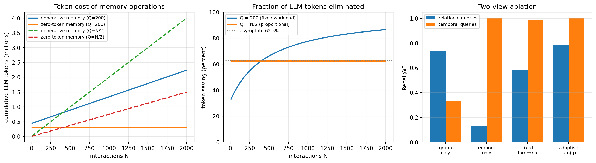

Retrieval-augmented generation addresses a fundamental limitation of large language models: their knowledge is frozen at training time and encoded implicitly within billions of parameters. When a user poses a question requiring information beyond the training corpus or demanding precise factual recall, standard language models either confabulate plausible-sounding but incorrect responses or acknowledge uncertainty without providing useful guidance. Retrieval-augmented generation circumvents this limitation by augmenting the generation process with explicit retrieval from an external knowledge store, allowing the model to condition its output on retrieved evidence.
The canonical retrieval-augmented generation architecture employs dense vector retrieval over a corpus of text chunks. Documents are segmented into passages, each passage is embedded into a high-dimensional vector space using a learned encoder, and at query time, the system retrieves passages whose embeddings exhibit high similarity to the query embedding. These retrieved passages are concatenated with the query and provided as context to the language model, which then generates a response grounded in the retrieved evidence.
This architecture, while effective for many applications, exhibits systematic weaknesses when confronted with queries requiring multi-hop reasoning, synthesis across disparate sources, or understanding of complex relational structures. Consider a query such as “What are the main research contributions of scientists who collaborated with both Geoffrey Hinton and Yann LeCun?” Answering this query requires identifying collaborators of Hinton, identifying collaborators of LeCun, computing the intersection, and then aggregating research contributions across the resulting set. A flat retrieval system operating over text chunks struggles with such queries because the relevant information is distributed across many documents, no single passage contains the complete answer, and the retrieval model has no mechanism for expressing or enforcing the relational constraints implicit in the query.
Graph-based retrieval-augmented generation addresses these limitations by organizing knowledge into a graph structure that explicitly represents entities and their relationships. Rather than treating a corpus as an undifferentiated collection of text chunks, graph-based approaches extract structured knowledge, represent it as nodes and edges in a graph, and leverage graph algorithms and graph neural networks to perform retrieval that respects relational structure. The graph serves as both an index and a reasoning substrate, enabling the system to traverse multi-hop paths, aggregate information across related entities, and provide the language model with contextualized, structured evidence.
The formulation that gave this family its name is due to Edge et al. (2024), whose GraphRAG system is the reference point for most of what follows. Their framing turns on a distinction that flat retrieval cannot express. A local query names its own evidence: “what side effects were reported for drug X” is answered by finding the passages about drug X, and top-\(k\) vector retrieval is a good instrument for that. A global query names none of it: “what are the main themes in this corpus” has no answer in any particular passage, because the answer is a property of the collection as a whole. No value of \(k\) helps, since the relevant text is the entire corpus and the operation required is summarization rather than retrieval. GraphRAG answers global queries by building, at index time, a hierarchy of entity communities over an extracted knowledge graph and having a language model write a summary of each community; a query is then answered by mapping over community summaries at a chosen level of the hierarchy and reducing the partial answers into one. The rest of this chapter develops the machinery that construction requires, and returns to the global-versus-local distinction once the community-detection tools are in place.
This chapter develops the theory, algorithms, and implementation of graph-based retrieval-augmented generation systems. We begin with the mathematical foundations of graphs and graph neural networks, proceed through knowledge graph construction and entity-relation extraction, develop retrieval algorithms that operate over graph structures, examine mechanisms for integrating graph-derived context into language model generation, and conclude with production considerations including scalability, evaluation, and deployment architecture.
228.2 Mathematical Foundations
228.2.1 Graph Theory Preliminaries
A graph \(G = (V, E)\) consists of a vertex set \(V\) and an edge set \(E \subseteq V \times V\). In the context of knowledge representation, vertices typically correspond to entities such as people, organizations, concepts, or documents, while edges represent relationships between entities. We denote the number of vertices as \(n = |V|\) and the number of edges as \(m = |E|\).
For knowledge graphs, we typically work with directed labeled graphs where edges carry semantic types. Formally, a knowledge graph is a tuple \(G = (V, E, R, \phi)\) where \(R\) is a set of relation types and \(\phi: E \to R\) assigns a relation type to each edge. An edge \((u, v) \in E\) with \(\phi((u,v)) = r\) is often written as a triple \((u, r, v)\), representing the assertion that entity \(u\) stands in relation \(r\) to entity \(v\).
The adjacency matrix \(A \in \{0,1\}^{n \times n}\) encodes graph structure, with \(A_{ij} = 1\) if and only if \((i, j) \in E\). For weighted graphs, \(A_{ij}\) takes values in \(\mathbb{R}_{\geq 0}\). The degree matrix \(D\) is diagonal with \(D_{ii} = \sum_j A_{ij}\). The graph Laplacian \(L = D - A\) plays a central role in spectral graph theory, with eigenvalues encoding structural properties of the graph.
The normalized Laplacian \(\mathcal{L} = I - D^{-1/2} A D^{-1/2}\) has eigenvalues in \([0, 2]\) and provides a basis for defining spectral graph convolutions. The eigendecomposition \(\mathcal{L} = U \Lambda U^T\) expresses the Laplacian in terms of orthonormal eigenvectors \(U\) and diagonal eigenvalue matrix \(\Lambda\).
228.2.2 Graph Neural Networks
Graph neural networks learn representations of graph-structured data by iteratively aggregating information from local neighborhoods. The fundamental operation is message passing: each vertex updates its representation by aggregating messages from its neighbors and combining the result with its current state.
Let \(h_v^{(l)} \in \mathbb{R}^d\) denote the hidden representation of vertex \(v\) at layer \(l\). The general message passing framework is expressed as:
\[m_v^{(l+1)} = \text{AGGREGATE}\left(\left\{ h_u^{(l)} : u \in \mathcal{N}(v) \right\}\right)\]
where \(\mathcal{N}(v)\) denotes the neighborhood of vertex \(v\), AGGREGATE is a permutation-invariant function, and UPDATE combines the aggregated message with the current representation.
The Graph Convolutional Network (GCN) instantiates this framework with mean aggregation and linear transformation. The layer-wise propagation rule is:
where \(\tilde{A} = A + I\) adds self-loops, \(\tilde{D}\) is the corresponding degree matrix, \(W^{(l)} \in \mathbb{R}^{d_l \times d_{l+1}}\) is a learnable weight matrix, and \(\sigma\) is a nonlinearity such as ReLU.
This propagation rule can be derived from a first-order approximation to spectral graph convolutions. The spectral convolution of signal \(x\) with filter \(g_\theta\) is defined as:
\[g_\theta \star x = U g_\theta(\Lambda) U^T x\]
where \(g_\theta(\Lambda)\) is the filter evaluated at the eigenvalues. Taking \(g_\theta(\Lambda) = \sum_{k=0}^{K} \theta_k T_k(\tilde{\Lambda})\) as a Chebyshev polynomial expansion with \(\tilde{\Lambda} = \frac{2}{\lambda_{\max}} \Lambda - I\), and truncating at \(K=1\) with \(\lambda_{\max} = 2\), yields the GCN propagation rule.
The Graph Attention Network (GAT) replaces uniform neighborhood aggregation with learned attention weights:
\[\alpha_{ij} = \frac{\exp\left(\text{LeakyReLU}\left(a^T [W h_i \| W h_j]\right)\right)}{\sum_{k \in \mathcal{N}(i)} \exp\left(\text{LeakyReLU}\left(a^T [W h_i \| W h_k]\right)\right)}\]
\[h_i^{(l+1)} = \sigma\left(\sum_{j \in \mathcal{N}(i)} \alpha_{ij} W h_j^{(l)}\right)\]
where \(\|\) denotes concatenation, \(W\) is a shared linear transformation, and \(a\) is a learned attention vector. Multi-head attention extends this by concatenating or averaging outputs from multiple attention heads with independent parameters.
GraphSAGE introduces sampling-based aggregation for scalability to large graphs:
\[h_v^{(l+1)} = \sigma\left(W^{(l)} \cdot \text{CONCAT}\left(h_v^{(l)}, \text{AGG}\left(\{h_u^{(l)} : u \in \mathcal{S}(v)\}\right)\right)\right)\]
where \(\mathcal{S}(v)\) is a fixed-size sample from \(\mathcal{N}(v)\). Common aggregators include mean, LSTM over a random permutation, and max pooling.
228.2.3 Relational Graph Neural Networks
Knowledge graphs contain multiple relation types, requiring architectures that can handle heterogeneous edge labels. The Relational Graph Convolutional Network (R-GCN) extends GCN with relation-specific transformations:
where \(\mathcal{N}_r(i)\) is the set of neighbors connected to \(i\) by relation \(r\), \(W_r^{(l)}\) is a relation-specific weight matrix, and \(c_{i,r}\) is a normalization constant typically set to \(|\mathcal{N}_r(i)|\).
The number of parameters grows linearly with the number of relations, which can be prohibitive for knowledge graphs with thousands of relation types. Two regularization strategies address this challenge. Basis decomposition represents each \(W_r\) as a linear combination of basis matrices: \(W_r^{(l)} = \sum_{b=1}^{B} a_{rb}^{(l)} V_b^{(l)}\) where \(B \ll |R|\). Block-diagonal decomposition constrains each \(W_r\) to be block-diagonal, reducing parameters while maintaining expressiveness.
228.2.4 Knowledge Graph Embeddings
Knowledge graph embedding methods learn low-dimensional representations of entities and relations that capture the semantic structure of the graph. These embeddings serve as initializations for graph neural networks and enable efficient approximate retrieval.
TransE models relations as translations in embedding space. Given a triple \((h, r, t)\), TransE enforces \(\mathbf{h} + \mathbf{r} \approx \mathbf{t}\) where \(\mathbf{h}, \mathbf{r}, \mathbf{t} \in \mathbb{R}^d\) are embeddings. The scoring function is:
where \(S\) is the set of positive triples, \(S'\) is a set of corrupted triples with either head or tail replaced, and \(\gamma\) is the margin.
TransE struggles with one-to-many, many-to-one, and many-to-many relations because it enforces identical tail embeddings for all entities sharing a head-relation pair. RotatE addresses this by modeling relations as rotations in complex space:
where \(\mathbf{h}, \mathbf{t} \in \mathbb{C}^d\), \(\mathbf{r} \in \mathbb{C}^d\) with \(|\mathbf{r}_i| = 1\), and \(\circ\) denotes element-wise product. This formulation can model symmetric, antisymmetric, inverse, and compositional relation patterns.
DistMult uses a bilinear scoring function: \(f(h, r, t) = \mathbf{h}^T \text{diag}(\mathbf{r}) \mathbf{t}\). ComplEx extends DistMult to complex space, enabling asymmetric relation modeling: \(f(h, r, t) = \text{Re}(\mathbf{h}^T \text{diag}(\mathbf{r}) \bar{\mathbf{t}})\) where \(\bar{\mathbf{t}}\) is the complex conjugate.
228.3 Knowledge Graph Construction
228.3.1 Entity and Relation Extraction
Constructing a knowledge graph from unstructured text requires extracting entities and the relations between them. The pipeline typically proceeds in stages: named entity recognition identifies entity mentions, entity linking grounds mentions to canonical entities in a knowledge base, and relation extraction identifies semantic relationships between entity pairs.
Named entity recognition is a sequence labeling task. Given a token sequence \(x_1, \ldots, x_n\), the model predicts a label sequence \(y_1, \ldots, y_n\) where labels follow a tagging scheme such as BIO (Beginning, Inside, Outside). Modern NER systems use transformer encoders with a linear classification layer:
\[P(y_i | x) = \text{softmax}(W h_i + b)\]
where \(h_i\) is the contextualized representation of token \(x_i\) from the transformer.
Relation extraction determines whether a semantic relation holds between a pair of identified entities. Given a sentence containing entities \(e_1\) and \(e_2\), the task is to classify the relation into one of a predefined set \(R \cup \{\text{NONE}\}\). Transformer-based relation extraction encodes the sentence with special markers indicating entity spans:
The concatenation of \([\text{E1}]\) and \([\text{E2}]\) representations is passed through a classification layer.
Joint entity and relation extraction avoids error propagation by modeling both tasks simultaneously. The span-based approach enumerates all token spans up to a maximum length, classifies each span as an entity type or non-entity, and classifies each ordered pair of entity spans as a relation type or non-relation.
228.3.2 Large Language Models for Knowledge Extraction
Large language models can perform knowledge extraction through carefully designed prompts. The extraction process formulates entity and relation identification as text generation conditioned on schema specifications.
Code
from typing import Anyfrom dataclasses import dataclass, fieldimport jsonimport hashlib@dataclassclass Entity:"""Represents an extracted entity.""" name: str entity_type: str description: str="" source_text: str="" confidence: float=1.0def__hash__(self):returnhash((self.name.lower(), self.entity_type.lower()))def__eq__(self, other):ifnotisinstance(other, Entity):returnFalsereturn (self.name.lower() == other.name.lower() andself.entity_type.lower() == other.entity_type.lower())@dataclassclass Relation:"""Represents an extracted relation between entities.""" head: Entity relation_type: str tail: Entity confidence: float=1.0 source_text: str=""def__hash__(self):returnhash((hash(self.head), self.relation_type.lower(), hash(self.tail)))def__eq__(self, other):ifnotisinstance(other, Relation):returnFalsereturn (self.head == other.head andself.relation_type.lower() == other.relation_type.lower() andself.tail == other.tail)@dataclassclass ExtractionSchema:"""Defines the schema for knowledge extraction.""" entity_types: list[str] relation_types: list[tuple[str, str, str]] # (head_type, relation, tail_type)def to_prompt_description(self) ->str: entity_desc ="Entity Types:\n"+"\n".join(f" - {et}"for et inself.entity_types ) relation_desc ="Relation Types:\n"+"\n".join(f" - {head} --[{rel}]--> {tail}"for head, rel, tail inself.relation_types )returnf"{entity_desc}\n\n{relation_desc}"class KnowledgeExtractor:"""Extracts entities and relations from text using an LLM."""def__init__(self, llm_client: Any, schema: ExtractionSchema):self.llm = llm_clientself.schema = schemaself.extraction_prompt =self._build_extraction_prompt()def _build_extraction_prompt(self) ->str:returnf"""You are a knowledge extraction system. Extract entities and relations from the provided text according to the following schema.{self.schema.to_prompt_description()}For each piece of text, output a JSON object with the following structure:{{ "entities": [{{"name": "...", "type": "...", "description": "..."}} ], "relations": [{{"head": "...", "relation": "...", "tail": "..."}} ]}}Only extract entities and relations that match the schema. Be precise and conservative - only extract information that is explicitly stated or strongly implied by the text. Do not infer or speculate."""def extract(self, text: str) ->tuple[list[Entity], list[Relation]]:"""Extract entities and relations from text.""" response =self.llm.generate( system_prompt=self.extraction_prompt, user_prompt=f"Extract knowledge from the following text:\n\n{text}", response_format="json" ) parsed = json.loads(response) entities = {}for e in parsed.get("entities", []): entity = Entity( name=e["name"], entity_type=e["type"], description=e.get("description", ""), source_text=text[:500] ) entities[entity.name.lower()] = entity relations = []for r in parsed.get("relations", []): head_name = r["head"].lower() tail_name = r["tail"].lower()if head_name in entities and tail_name in entities: relation = Relation( head=entities[head_name], relation_type=r["relation"], tail=entities[tail_name], source_text=text[:500] ) relations.append(relation)returnlist(entities.values()), relationsdef extract_batch(self, texts: list[str], deduplicate: bool=True ) ->tuple[list[Entity], list[Relation]]:"""Extract from multiple texts with optional deduplication.""" all_entities = [] all_relations = []for text in texts: entities, relations =self.extract(text) all_entities.extend(entities) all_relations.extend(relations)if deduplicate: all_entities =list(set(all_entities)) all_relations =list(set(all_relations))return all_entities, all_relations
228.3.3 Coreference Resolution and Entity Linking
Raw extractions often contain multiple surface forms referring to the same underlying entity. Coreference resolution groups mentions that refer to the same entity within a document, while entity linking grounds mentions to canonical entities in an external knowledge base.
Code
from dataclasses import dataclass, fieldimport numpy as npfrom collections import defaultdict@dataclassclass EntityMention:"""A mention of an entity in text.""" text: str start_char: int end_char: int document_id: str entity_type: str|None=None embedding: np.ndarray |None=None@dataclassclass CanonicalEntity:"""A canonical entity in the knowledge base.""" entity_id: str name: str aliases: list[str] = field(default_factory=list) entity_type: str="" description: str="" embedding: np.ndarray |None=Noneclass EntityLinker:"""Links entity mentions to canonical entities."""def__init__(self, embedding_model: Any, similarity_threshold: float=0.85 ):self.embedding_model = embedding_modelself.similarity_threshold = similarity_thresholdself.entity_index: dict[str, CanonicalEntity] = {}self.embedding_matrix: np.ndarray |None=Noneself.entity_ids: list[str] = []def build_index(self, entities: list[CanonicalEntity]):"""Build search index from canonical entities."""self.entity_index = {e.entity_id: e for e in entities}self.entity_ids =list(self.entity_index.keys())# Compute embeddings for all entities texts = []for eid inself.entity_ids: entity =self.entity_index[eid] text =f"{entity.name}. {entity.description}" texts.append(text) embeddings =self.embedding_model.encode(texts)self.embedding_matrix = np.array(embeddings)# Normalize for cosine similarity norms = np.linalg.norm(self.embedding_matrix, axis=1, keepdims=True)self.embedding_matrix =self.embedding_matrix / (norms +1e-10)def link(self, mention: EntityMention) ->tuple[str|None, float]:"""Link a mention to a canonical entity."""ifself.embedding_matrix isNone:raiseValueError("Index not built. Call build_index first.")# Compute mention embedding mention_emb =self.embedding_model.encode([mention.text])[0] mention_emb = mention_emb / (np.linalg.norm(mention_emb) +1e-10)# Compute similarities similarities =self.embedding_matrix @ mention_emb best_idx = np.argmax(similarities) best_score = similarities[best_idx]if best_score >=self.similarity_threshold:returnself.entity_ids[best_idx], float(best_score)returnNone, float(best_score)def link_batch(self, mentions: list[EntityMention] ) ->list[tuple[str|None, float]]:"""Link multiple mentions efficiently."""ifnot mentions:return [] texts = [m.text for m in mentions] mention_embs =self.embedding_model.encode(texts) mention_embs = np.array(mention_embs) norms = np.linalg.norm(mention_embs, axis=1, keepdims=True) mention_embs = mention_embs / (norms +1e-10) similarities = mention_embs @self.embedding_matrix.T best_indices = np.argmax(similarities, axis=1) best_scores = similarities[np.arange(len(mentions)), best_indices] results = []for idx, score inzip(best_indices, best_scores):if score >=self.similarity_threshold: results.append((self.entity_ids[idx], float(score)))else: results.append((None, float(score)))return resultsclass CoreferenceResolver:"""Resolves coreferences within documents."""def__init__(self, embedding_model: Any, threshold: float=0.8):self.embedding_model = embedding_modelself.threshold = thresholddef resolve(self, mentions: list[EntityMention] ) ->list[list[EntityMention]]:"""Cluster mentions that refer to the same entity."""ifnot mentions:return []# Compute embeddings texts = [m.text for m in mentions] embeddings = np.array(self.embedding_model.encode(texts)) norms = np.linalg.norm(embeddings, axis=1, keepdims=True) embeddings = embeddings / (norms +1e-10)# Compute pairwise similarities similarity_matrix = embeddings @ embeddings.T# Agglomerative clustering with threshold n =len(mentions) cluster_assignments =list(range(n))for i inrange(n):for j inrange(i +1, n):if similarity_matrix[i, j] >=self.threshold:# Merge clusters old_cluster = cluster_assignments[j] new_cluster = cluster_assignments[i]for k inrange(n):if cluster_assignments[k] == old_cluster: cluster_assignments[k] = new_cluster# Group by cluster clusters = defaultdict(list)for idx, cluster_id inenumerate(cluster_assignments): clusters[cluster_id].append(mentions[idx])returnlist(clusters.values())
228.3.4 Graph Construction Pipeline
The complete pipeline integrates extraction, coreference resolution, and entity linking to construct a knowledge graph from a document corpus.
Code
from dataclasses import dataclass, fieldfrom typing import Anyimport hashlibfrom collections import defaultdict@dataclassclass KnowledgeGraph:"""A knowledge graph with entities and relations.""" entities: dict[str, Entity] = field(default_factory=dict) relations: list[Relation] = field(default_factory=list) entity_to_documents: dict[str, set[str]] = field( default_factory=lambda: defaultdict(set) )def add_entity(self, entity: Entity, document_id: str|None=None):"""Add an entity to the graph.""" entity_id =self._entity_id(entity)if entity_id notinself.entities:self.entities[entity_id] = entityif document_id:self.entity_to_documents[entity_id].add(document_id)return entity_iddef add_relation(self, relation: Relation):"""Add a relation to the graph."""if relation notinself.relations:self.relations.append(relation)def _entity_id(self, entity: Entity) ->str:"""Generate stable ID for entity.""" key =f"{entity.name.lower()}:{entity.entity_type.lower()}"return hashlib.sha256(key.encode()).hexdigest()[:16]def get_neighbors(self, entity_id: str, relation_type: str|None=None ) ->list[tuple[str, str, str]]:"""Get neighboring entities via relations.""" neighbors = [] entity =self.entities.get(entity_id)ifnot entity:return neighborsfor rel inself.relations:if rel.head == entity:if relation_type isNoneor rel.relation_type == relation_type: tail_id =self._entity_id(rel.tail) neighbors.append((tail_id, rel.relation_type, "outgoing"))elif rel.tail == entity:if relation_type isNoneor rel.relation_type == relation_type: head_id =self._entity_id(rel.head) neighbors.append((head_id, rel.relation_type, "incoming"))return neighborsdef to_triples(self) ->list[tuple[str, str, str]]:"""Convert to list of (head_id, relation, tail_id) triples.""" triples = []for rel inself.relations: head_id =self._entity_id(rel.head) tail_id =self._entity_id(rel.tail) triples.append((head_id, rel.relation_type, tail_id))return triplesdef subgraph(self, entity_ids: set[str], max_hops: int=1 ) ->"KnowledgeGraph":"""Extract subgraph around specified entities."""# Expand to include neighbors up to max_hops current_ids = entity_ids.copy()for _ inrange(max_hops): new_ids =set()for eid in current_ids:for neighbor_id, _, _ inself.get_neighbors(eid): new_ids.add(neighbor_id) current_ids = current_ids.union(new_ids)# Build subgraph subgraph = KnowledgeGraph()for eid in current_ids:if eid inself.entities: subgraph.entities[eid] =self.entities[eid] subgraph.entity_to_documents[eid] =self.entity_to_documents[eid]for rel inself.relations: head_id =self._entity_id(rel.head) tail_id =self._entity_id(rel.tail)if head_id in current_ids and tail_id in current_ids: subgraph.relations.append(rel)return subgraphclass GraphConstructionPipeline:"""End-to-end pipeline for knowledge graph construction."""def__init__(self, extractor: KnowledgeExtractor, linker: EntityLinker |None=None, coreference_resolver: CoreferenceResolver |None=None ):self.extractor = extractorself.linker = linkerself.coreference_resolver = coreference_resolverdef process_documents(self, documents: list[dict[str, str]] ) -> KnowledgeGraph:""" Process documents to build knowledge graph. Args: documents: List of {"id": ..., "text": ...} dictionaries Returns: Constructed knowledge graph """ graph = KnowledgeGraph() all_mentions = [] mention_to_doc = {}# Extract from each documentfor doc in documents: doc_id = doc["id"] text = doc["text"] entities, relations =self.extractor.extract(text)for entity in entities: entity_id = graph.add_entity(entity, doc_id) mention = EntityMention( text=entity.name, start_char=0, end_char=len(entity.name), document_id=doc_id, entity_type=entity.entity_type ) all_mentions.append(mention) mention_to_doc[id(mention)] = (entity, doc_id)for relation in relations: graph.add_relation(relation)# Apply coreference resolution if availableifself.coreference_resolver: clusters =self.coreference_resolver.resolve(all_mentions)# Merge entities within clustersfor cluster in clusters:iflen(cluster) >1:self._merge_cluster(graph, cluster, mention_to_doc)return graphdef _merge_cluster(self, graph: KnowledgeGraph, cluster: list[EntityMention], mention_to_doc: dict ):"""Merge entities in a coreference cluster."""# Use most frequent mention as canonical mention_counts = defaultdict(int)for mention in cluster: mention_counts[mention.text.lower()] +=1 canonical_text =max(mention_counts, key=mention_counts.get)# Find the canonical entity canonical_entity =Nonefor mention in cluster:if mention.text.lower() == canonical_text: entity, _ = mention_to_doc.get(id(mention), (None, None))if entity: canonical_entity = entitybreakifnot canonical_entity:return# Update relations to point to canonical entity canonical_id = graph._entity_id(canonical_entity)for mention in cluster: entity, _ = mention_to_doc.get(id(mention), (None, None))if entity and entity != canonical_entity: old_id = graph._entity_id(entity)# Remove old entityif old_id in graph.entities:del graph.entities[old_id]# Update document mappingsif old_id in graph.entity_to_documents: graph.entity_to_documents[canonical_id].update( graph.entity_to_documents[old_id] )del graph.entity_to_documents[old_id]
228.4 Graph-Based Retrieval
228.4.1 Embedding-Based Entity Retrieval
The first stage of graph-based retrieval identifies entities relevant to the query. Dense embedding methods project both query and entities into a shared vector space, enabling efficient similarity search.
After identifying seed entities, graph traversal expands the context by following edges to discover related entities and paths. The traversal strategy must balance coverage with relevance, avoiding explosion of the subgraph while capturing necessary context.
Code
from dataclasses import dataclass, fieldfrom collections import dequefrom typing import Callableimport numpy as np@dataclassclass TraversalPath:"""A path through the knowledge graph.""" nodes: list[str] # Entity IDs edges: list[str] # Relation types score: float=1.0def__len__(self):returnlen(self.nodes)@propertydef head(self) ->str:returnself.nodes[0]@propertydef tail(self) ->str:returnself.nodes[-1]class GraphTraverser:"""Traverses knowledge graph to expand context."""def__init__(self, graph: KnowledgeGraph, max_hops: int=2, max_neighbors_per_hop: int=10, relevance_scorer: Callable[[str, str], float] |None=None ):self.graph = graphself.max_hops = max_hopsself.max_neighbors = max_neighbors_per_hopself.relevance_scorer = relevance_scorer or (lambda q, e: 0.0)def bfs_traverse(self, seed_entities: list[str], query: str ) ->tuple[set[str], list[TraversalPath]]:""" Breadth-first traversal from seed entities. Returns: Tuple of (visited entity IDs, paths found) """ visited =set(seed_entities) paths = [TraversalPath(nodes=[eid], edges=[]) for eid in seed_entities] all_paths = paths.copy()for hop inrange(self.max_hops): new_paths = []for path in paths: current_id = path.tail neighbors =self.graph.get_neighbors(current_id)# Score neighbors by relevance scored_neighbors = []for neighbor_id, relation, direction in neighbors:if neighbor_id notin visited: entity =self.graph.entities.get(neighbor_id)if entity: score =self.relevance_scorer(query, entity.name) scored_neighbors.append( (neighbor_id, relation, direction, score) )# Take top neighbors scored_neighbors.sort(key=lambda x: x[3], reverse=True) top_neighbors = scored_neighbors[:self.max_neighbors]for neighbor_id, relation, direction, score in top_neighbors: visited.add(neighbor_id) new_path = TraversalPath( nodes=path.nodes + [neighbor_id], edges=path.edges + [relation], score=path.score * (0.5+0.5* score) ) new_paths.append(new_path) all_paths.append(new_path) paths = new_pathsreturn visited, all_pathsdef beam_search_traverse(self, seed_entities: list[str], query: str, beam_width: int=5 ) ->list[TraversalPath]:""" Beam search traversal prioritizing relevant paths. """# Initialize beam with seed entities beam = [ TraversalPath(nodes=[eid], edges=[], score=1.0) for eid in seed_entities ]for hop inrange(self.max_hops): candidates = []for path in beam: current_id = path.tail neighbors =self.graph.get_neighbors(current_id)for neighbor_id, relation, direction in neighbors:if neighbor_id notin path.nodes: # Avoid cycles entity =self.graph.entities.get(neighbor_id)if entity: score =self.relevance_scorer(query, entity.name) new_path = TraversalPath( nodes=path.nodes + [neighbor_id], edges=path.edges + [relation], score=path.score * (0.5+0.5* score) ) candidates.append(new_path)# Select top paths for beam candidates.sort(key=lambda p: p.score, reverse=True) beam = candidates[:beam_width]ifnot beam:breakreturn beamdef relation_constrained_traverse(self, seed_entities: list[str], relation_sequence: list[str] ) ->list[TraversalPath]:""" Traverse following a specific sequence of relations. """ current_paths = [ TraversalPath(nodes=[eid], edges=[]) for eid in seed_entities ]for required_relation in relation_sequence: new_paths = []for path in current_paths: current_id = path.tail neighbors =self.graph.get_neighbors( current_id, relation_type=required_relation )for neighbor_id, relation, direction in neighbors: new_path = TraversalPath( nodes=path.nodes + [neighbor_id], edges=path.edges + [relation], score=path.score ) new_paths.append(new_path) current_paths = new_pathsifnot current_paths:breakreturn current_paths
228.4.3 Graph Neural Network Retrieval
Graph neural networks can score subgraph relevance to a query by learning to propagate query information through the graph structure and computing relevance scores at the subgraph level.
Code
import torchimport torch.nn as nnimport torch.nn.functional as Ffrom torch_geometric.nn import GATConv, global_mean_poolfrom torch_geometric.data import Data, Batchfrom typing import Anyimport numpy as npclass QueryConditionedGNN(nn.Module):"""GNN that conditions node representations on query."""def__init__(self, node_dim: int, query_dim: int, hidden_dim: int, num_layers: int=3, num_heads: int=4, dropout: float=0.1 ):super().__init__()self.query_proj = nn.Linear(query_dim, hidden_dim)self.node_proj = nn.Linear(node_dim, hidden_dim)# GAT layersself.gat_layers = nn.ModuleList()for i inrange(num_layers): in_dim = hidden_dim if i ==0else hidden_dim * num_headsself.gat_layers.append( GATConv(in_dim, hidden_dim, heads=num_heads, dropout=dropout) )# Query-node attentionself.query_attention = nn.MultiheadAttention( embed_dim=hidden_dim * num_heads, num_heads=num_heads, dropout=dropout, batch_first=True )# Final scoringself.score_mlp = nn.Sequential( nn.Linear(hidden_dim * num_heads *2, hidden_dim), nn.ReLU(), nn.Dropout(dropout), nn.Linear(hidden_dim, 1) )self.hidden_dim = hidden_dimself.num_heads = num_headsdef forward(self, node_features: torch.Tensor, # (num_nodes, node_dim) edge_index: torch.Tensor, # (2, num_edges) query_embedding: torch.Tensor, # (batch_size, query_dim) batch: torch.Tensor # Node to graph assignment ) -> torch.Tensor:""" Compute relevance scores for subgraphs. Returns: Tensor of shape (batch_size,) with relevance scores """# Project inputs h =self.node_proj(node_features) # (num_nodes, hidden_dim) q =self.query_proj(query_embedding) # (batch_size, hidden_dim)# Expand query to match nodes per graph batch_size = query_embedding.size(0) q_expanded = q[batch] # (num_nodes, hidden_dim)# Condition node features on query h = h + q_expanded# GNN message passingfor gat inself.gat_layers: h = F.elu(gat(h, edge_index))# Pool to graph level graph_emb = global_mean_pool(h, batch) # (batch_size, hidden_dim * heads)# Query-graph attention q_final = q.unsqueeze(1).expand(-1, 1, self.hidden_dim) q_final = q_final.repeat(1, 1, self.num_heads) # Match dimensions attn_output, _ =self.query_attention( q_final, graph_emb.unsqueeze(1), graph_emb.unsqueeze(1) ) attn_output = attn_output.squeeze(1)# Compute score combined = torch.cat([graph_emb, attn_output], dim=-1) scores =self.score_mlp(combined).squeeze(-1)return scoresclass GNNRetriever:"""Retriever using GNN for subgraph scoring."""def__init__(self, gnn_model: QueryConditionedGNN, embedding_model: Any, graph: KnowledgeGraph, device: str="cuda" ):self.gnn = gnn_model.to(device)self.embedding_model = embedding_modelself.graph = graphself.device = deviceself._build_graph_tensors()def _build_graph_tensors(self):"""Build tensor representations of the graph."""self.entity_id_to_idx = { eid: idx for idx, eid inenumerate(self.graph.entities.keys()) }self.idx_to_entity_id = { idx: eid for eid, idx inself.entity_id_to_idx.items() }# Build edge index edges = []for rel inself.graph.relations: head_id =self.graph._entity_id(rel.head) tail_id =self.graph._entity_id(rel.tail)if head_id inself.entity_id_to_idx and tail_id inself.entity_id_to_idx: head_idx =self.entity_id_to_idx[head_id] tail_idx =self.entity_id_to_idx[tail_id] edges.append([head_idx, tail_idx])self.edge_index = torch.tensor(edges, dtype=torch.long).t().contiguous()# Build node features (entity embeddings) texts = []for eid inself.entity_id_to_idx: entity =self.graph.entities[eid] text =f"{entity.name}. {entity.description}" texts.append(text) embeddings =self.embedding_model.encode(texts)self.node_features = torch.tensor(embeddings, dtype=torch.float32)def retrieve_subgraph(self, query: str, seed_entities: list[str], max_hops: int=2, top_k: int=5 ) ->list[tuple[set[str], float]]:""" Retrieve and score subgraphs around seed entities. Returns: List of (entity_id_set, score) tuples """# Generate candidate subgraphs traverser = GraphTraverser(self.graph, max_hops=max_hops, max_neighbors_per_hop=10 ) subgraph_candidates = []for seed_id in seed_entities: visited, paths = traverser.bfs_traverse([seed_id], query) subgraph_candidates.append(visited)# Also try combinations of seedsiflen(seed_entities) >1: combined =set()for seed_id in seed_entities: visited, _ = traverser.bfs_traverse([seed_id], query) combined.update(visited) subgraph_candidates.append(combined)# Score subgraphs query_embedding = torch.tensor(self.embedding_model.encode([query]), dtype=torch.float32 ).to(self.device) scored_subgraphs = []self.gnn.eval()with torch.no_grad():for entity_ids in subgraph_candidates:# Build subgraph data node_indices = [self.entity_id_to_idx[eid] for eid in entity_ids if eid inself.entity_id_to_idx ]ifnot node_indices:continue# Remap indices for subgraph idx_map = {old: new for new, old inenumerate(node_indices)} subgraph_features =self.node_features[node_indices].to(self.device)# Build subgraph edges subgraph_edges = []for i inrange(self.edge_index.size(1)): src, dst =self.edge_index[:, i].tolist()if src in idx_map and dst in idx_map: subgraph_edges.append([idx_map[src], idx_map[dst]])if subgraph_edges: subgraph_edge_index = torch.tensor( subgraph_edges, dtype=torch.long ).t().contiguous().to(self.device)else: subgraph_edge_index = torch.empty( (2, 0), dtype=torch.long ).to(self.device) batch = torch.zeros(len(node_indices), dtype=torch.long ).to(self.device) score =self.gnn( subgraph_features, subgraph_edge_index, query_embedding, batch ) scored_subgraphs.append((entity_ids, float(score.cpu())))# Return top-k scored_subgraphs.sort(key=lambda x: x[1], reverse=True)return scored_subgraphs[:top_k]
C:\Users\miken\github\ai_in_action\.venv\lib\site-packages\tqdm\auto.py:21: TqdmWarning:
IProgress not found. Please update jupyter and ipywidgets. See https://ipywidgets.readthedocs.io/en/stable/user_install.html
228.4.4 Community Detection for Document Clustering
For large knowledge graphs, community detection algorithms identify densely connected clusters of entities that can serve as coherent retrieval units. The Louvain algorithm optimizes modularity, a measure of the quality of a partition:
where \(k_i\) is the degree of node \(i\), \(c_i\) is the community assignment of node \(i\), \(m\) is the total number of edges, and \(\delta\) is the Kronecker delta.
Code
from collections import defaultdictimport randomclass LouvainCommunityDetector:"""Detects communities using the Louvain algorithm."""def__init__(self, graph: KnowledgeGraph, resolution: float=1.0):self.graph = graphself.resolution = resolutionself._build_adjacency()def _build_adjacency(self):"""Build adjacency structure for modularity computation."""self.adjacency = defaultdict(lambda: defaultdict(float))self.degrees = defaultdict(float)self.total_weight =0.0 entity_ids =list(self.graph.entities.keys())for rel inself.graph.relations: head_id =self.graph._entity_id(rel.head) tail_id =self.graph._entity_id(rel.tail)if head_id inself.graph.entities and tail_id inself.graph.entities:self.adjacency[head_id][tail_id] +=1.0self.adjacency[tail_id][head_id] +=1.0self.degrees[head_id] +=1.0self.degrees[tail_id] +=1.0self.total_weight +=2.0def _modularity_gain(self, node: str, community: set[str], node_to_community: dict[str, int] ) ->float:"""Compute modularity gain from moving node to community."""ifself.total_weight ==0:return0.0 ki =self.degrees[node] ki_in =sum(self.adjacency[node].get(neighbor, 0)for neighbor in community ) sigma_tot =sum(self.degrees[n] for n in community) gain = ( ki_in /self.total_weight -self.resolution * ki * sigma_tot / (self.total_weight **2) )return gaindef detect(self) ->dict[str, int]:""" Detect communities using Louvain algorithm. Returns: Dictionary mapping entity IDs to community IDs """ nodes =list(self.graph.entities.keys())# Initialize: each node in its own community node_to_community = {node: i for i, node inenumerate(nodes)} communities = {i: {node} for i, node inenumerate(nodes)} improved =True iteration =0 max_iterations =100while improved and iteration < max_iterations: improved =False iteration +=1# Shuffle for randomization random.shuffle(nodes)for node in nodes: current_community_id = node_to_community[node] current_community = communities[current_community_id]# Remove node from current community current_community.discard(node) best_gain =0.0 best_community_id = current_community_id# Try neighboring communities neighbor_communities =set()for neighbor inself.adjacency[node]: neighbor_communities.add(node_to_community[neighbor])for community_id in neighbor_communities: community = communities[community_id] gain =self._modularity_gain( node, community, node_to_community )if gain > best_gain: best_gain = gain best_community_id = community_id# Move to best communityif best_community_id != current_community_id: improved =True communities[best_community_id].add(node) node_to_community[node] = best_community_id# Clean up empty communityifnot current_community and current_community_id != best_community_id:del communities[current_community_id]# Renumber communities community_ids =sorted(communities.keys()) id_mapping = {old: new for new, old inenumerate(community_ids)}return { node: id_mapping[comm_id]for node, comm_id in node_to_community.items() }class CommunitySummarizer:"""Generates summaries for entity communities."""def__init__(self, llm_client: Any, graph: KnowledgeGraph):self.llm = llm_clientself.graph = graphdef summarize_community(self, entity_ids: set[str], max_entities: int=20 ) ->str:"""Generate a summary for a community of entities.""" entities = [self.graph.entities[eid]for eid inlist(entity_ids)[:max_entities]if eid inself.graph.entities ]ifnot entities:return"" entity_descriptions ="\n".join(f"- {e.name} ({e.entity_type}): {e.description}"for e in entities )# Get internal relations internal_relations = []for rel inself.graph.relations: head_id =self.graph._entity_id(rel.head) tail_id =self.graph._entity_id(rel.tail)if head_id in entity_ids and tail_id in entity_ids: internal_relations.append(f"{rel.head.name} --[{rel.relation_type}]--> {rel.tail.name}" ) relations_text ="\n".join(internal_relations[:30]) prompt =f"""Summarize the following group of related entities into a coherent paragraph that captures the main themes, relationships, and significance.Entities:{entity_descriptions}Key Relationships:{relations_text}Write a concise summary (2-3 sentences) that would help someone understand what this group of entities represents and how they relate to each other.""" summary =self.llm.generate(user_prompt=prompt)return summarydef summarize_all_communities(self, communities: dict[str, int] ) ->dict[int, str]:"""Generate summaries for all communities."""# Group entities by community community_entities = defaultdict(set)for entity_id, community_id in communities.items(): community_entities[community_id].add(entity_id) summaries = {}for community_id, entity_ids in community_entities.items():iflen(entity_ids) >=2: # Only summarize non-trivial communities summaries[community_id] =self.summarize_community(entity_ids)return summaries
228.4.5 From Communities to Global Queries
The Louvain partition above is a clustering of a graph, and on its own it is only an indexing convenience. What Edge et al. (2024) add is an argument about which questions it makes answerable, and the argument is worth stating precisely because it is the strongest available justification for paying the cost of graph construction at all.
Recall the two query regimes. Write \(R_k(q)\) for the top-\(k\) passages a dense retriever returns for query \(q\), and let \(A^\star(q)\) be the set of source passages a correct and complete answer must draw on. A query is local when \(|A^\star(q)|\) is small and its members are individually similar to \(q\), so that \(A^\star(q) \subseteq R_k(q)\) for modest \(k\); a query is global when \(|A^\star(q)|\) grows with the corpus, or when its members bear no lexical or semantic resemblance to \(q\) at all. “What are the top themes in this dataset” is global under both readings: the evidence is every document, and no document is similar to the question. Increasing \(k\) cannot fix this, because the binding constraint is the context window, not the retriever. This is the failure mode that motivates the whole construction.
The GraphRAG answer is to pay for summarization once, at index time, rather than per query. Run entity and relation extraction over the corpus to obtain the graph \(G\) of the preceding sections. Partition it hierarchically, so that level \(\ell = 0\) is a fine partition into many small communities and each successive level merges them into fewer, larger ones; Edge et al. (2024) use the Leiden algorithm, a refinement of Louvain that repairs the badly connected communities Louvain can produce, but the modularity objective is the one derived above. For each community \(C\) at each level, have a language model write a self-contained summary \(\sigma(C)\) from the descriptions of the entities and relations it contains, working bottom-up so that a large community’s summary is composed from its children’s summaries rather than from raw text. The index is then the set \(\{\sigma(C)\}\) over all communities at all levels.
A global query is answered by a map-reduce over one level of that hierarchy. In the map step, each community summary at the chosen level \(\ell\) is placed in its own context window with the query, and the model produces a partial answer together with a self-reported helpfulness score in \([0, 100]\). In the reduce step, partial answers are sorted by score, filtered to drop the zeros, packed into a single context window, and synthesized into a final response. The structure matters more than the details: the map step is embarrassingly parallel and each of its calls sees a summary rather than raw passages, which is what lets the method reason over a corpus far larger than any context window. Choosing \(\ell\) trades breadth against cost. Low levels give many small, specific summaries and a large number of map calls; high levels give few broad summaries and a cheap query. Edge et al. (2024) report that intermediate levels of the hierarchy already match root-level summaries on answer quality at substantially lower token cost, and that across their two corpora both GraphRAG and a naive full-corpus summarization baseline beat vector RAG on comprehensiveness and diversity, with GraphRAG reaching that quality at a fraction of the per-query tokens.
The honest objection to all of this is the index-time bill. Summarizing every community at every level requires a language-model call per community, over a corpus that may not have been queried yet, and that up-front cost is what deters most teams from deploying graph RAG at all. Microsoft Research’s follow-on, LazyGraphRAG, attacks exactly this: it performs only the cheap, deterministic part of indexing, that is, graph construction and community detection with no language model involved, and defers every summarization call to query time, doing the work only for the communities a given query actually touches (Microsoft Research 2024). The reported effect is an indexing cost equal to that of plain vector RAG, roughly a thousandth of full GraphRAG’s, while retaining comparable global-query quality. The design principle generalizes past this system: in a retrieval architecture, any expensive transformation of the corpus that is not query-dependent should be examined for whether it can be made lazy, because the fraction of an index that a real query workload ever touches is usually small. The compact-model result of Komarov et al. (2026) later in this chapter is the same economy pursued along the other axis, shrinking the cost of each extraction call rather than avoiding the call.
228.5 Context Assembly and Generation
228.5.1 Hierarchical Context Construction
Retrieved graph elements must be assembled into a coherent context for the language model. Hierarchical construction organizes context from general to specific, starting with community summaries and proceeding to entity details and relationships.
Code
from dataclasses import dataclass, fieldfrom typing import Any@dataclassclass GraphContext:"""Structured context extracted from knowledge graph.""" community_summaries: list[str] = field(default_factory=list) entity_descriptions: list[str] = field(default_factory=list) relationships: list[str] = field(default_factory=list) paths: list[str] = field(default_factory=list) source_documents: list[str] = field(default_factory=list)def to_text(self, max_tokens: int=4000) ->str:"""Convert to text format for LLM context.""" sections = []ifself.community_summaries: sections.append("## Overview\n"+"\n\n".join(self.community_summaries))ifself.entity_descriptions: sections.append("## Key Entities\n"+"\n".join(self.entity_descriptions))ifself.relationships: sections.append("## Relationships\n"+"\n".join(self.relationships))ifself.paths: sections.append("## Reasoning Paths\n"+"\n".join(self.paths))ifself.source_documents: sections.append("## Source Documents\n"+"\n---\n".join(self.source_documents)) full_text ="\n\n".join(sections)# Simple truncation (in practice, use proper tokenization)iflen(full_text) > max_tokens *4: # Rough char to token ratio full_text = full_text[:max_tokens *4] +"\n[Context truncated...]"return full_textclass ContextAssembler:"""Assembles context from graph retrieval results."""def__init__(self, graph: KnowledgeGraph, community_summaries: dict[int, str] |None=None, communities: dict[str, int] |None=None ):self.graph = graphself.community_summaries = community_summaries or {}self.communities = communities or {}def assemble(self, retrieved_entities: list[RetrievedEntity], paths: list[TraversalPath], include_communities: bool=True, max_entities: int=20, max_relationships: int=30, max_paths: int=10 ) -> GraphContext:"""Assemble context from retrieval results.""" context = GraphContext()# Collect entity IDs entity_ids =set()for re in retrieved_entities[:max_entities]: entity_ids.add(re.entity_id)for path in paths[:max_paths]: entity_ids.update(path.nodes)# Add community summariesif include_communities andself.community_summaries: relevant_communities =set()for eid in entity_ids:if eid inself.communities: relevant_communities.add(self.communities[eid])for comm_id in relevant_communities:if comm_id inself.community_summaries: context.community_summaries.append(self.community_summaries[comm_id] )# Add entity descriptionsfor re in retrieved_entities[:max_entities]: entity = re.entity desc =f"**{entity.name}** ({entity.entity_type})"if entity.description: desc +=f": {entity.description}" context.entity_descriptions.append(desc)# Add relationships relationship_count =0for rel inself.graph.relations: head_id =self.graph._entity_id(rel.head) tail_id =self.graph._entity_id(rel.tail)if head_id in entity_ids or tail_id in entity_ids: rel_text =f"{rel.head.name} --[{rel.relation_type}]--> {rel.tail.name}" context.relationships.append(rel_text) relationship_count +=1if relationship_count >= max_relationships:break# Add paths as reasoning chainsfor path in paths[:max_paths]:iflen(path.nodes) >1: path_parts = []for i, node_id inenumerate(path.nodes): entity =self.graph.entities.get(node_id)if entity: path_parts.append(entity.name)if i <len(path.edges): path_parts.append(f"--[{path.edges[i]}]-->") path_text =" ".join(path_parts) context.paths.append(path_text)# Add source document snippetsfor eid inlist(entity_ids)[:10]:if eid inself.graph.entity_to_documents: docs =list(self.graph.entity_to_documents[eid])[:2] entity =self.graph.entities.get(eid)if entity and entity.source_text: context.source_documents.append(f"[{entity.name}] {entity.source_text[:500]}" )return contextclass GraphRAGGenerator:"""Generates responses using graph-retrieved context."""def__init__(self, llm_client: Any, entity_retriever: HybridEntityRetriever, graph: KnowledgeGraph, traverser: GraphTraverser, context_assembler: ContextAssembler ):self.llm = llm_clientself.entity_retriever = entity_retrieverself.graph = graphself.traverser = traverserself.context_assembler = context_assemblerdef generate(self, query: str, top_k_entities: int=10, max_hops: int=2, include_reasoning: bool=True ) ->dict[str, Any]:""" Generate response using graph-based retrieval. Returns: Dictionary with response, context, and metadata """# Retrieve relevant entities retrieved_entities =self.entity_retriever.retrieve( query, top_k=top_k_entities )# Traverse graph from retrieved entities seed_ids = [re.entity_id for re in retrieved_entities[:5]] visited, paths =self.traverser.bfs_traverse(seed_ids, query)# Assemble context context =self.context_assembler.assemble( retrieved_entities=retrieved_entities, paths=paths, max_entities=15, max_relationships=25, max_paths=8 )# Build prompt context_text = context.to_text() system_prompt ="""You are a helpful assistant that answers questions using the provided knowledge graph context. Base your answers on the information in the context. If the context doesn't contain enough information to fully answer the question, acknowledge this and provide what you can based on the available information.When reasoning about relationships between entities, trace the connections explicitly using the paths provided.""" user_prompt =f"""Context from Knowledge Graph:{context_text}Question: {query}Please provide a comprehensive answer based on the context above."""if include_reasoning: user_prompt +="""First, briefly explain your reasoning by tracing relevant entity relationships, then provide your final answer.""" response =self.llm.generate( system_prompt=system_prompt, user_prompt=user_prompt )return {"response": response,"context": context,"retrieved_entities": [ {"name": re.entity.name, "score": re.score}for re in retrieved_entities ],"paths_traversed": len(paths),"entities_in_context": len(visited) }
228.5.2 Query Decomposition for Multi-Hop Questions
Complex queries often require decomposition into sub-queries that can be addressed independently and then synthesized. The decomposition strategy identifies the relational structure implicit in the query and generates targeted sub-queries.
Code
from dataclasses import dataclassfrom typing import Anyimport json@dataclassclass DecomposedQuery:"""A query decomposed into sub-queries.""" original_query: str sub_queries: list[str] dependencies: list[list[int]] # Which sub-queries depend on which aggregation_strategy: str# "union", "intersection", "chain", "synthesis"class QueryDecomposer:"""Decomposes complex queries into sub-queries."""def__init__(self, llm_client: Any):self.llm = llm_clientdef decompose(self, query: str) -> DecomposedQuery:"""Decompose a complex query into sub-queries.""" prompt =f"""Analyze the following question and determine if it requires multi-step reasoning. If so, decompose it into simpler sub-questions that can be answered independently and then combined.Question: {query}Respond with a JSON object:{{ "needs_decomposition": true/false, "sub_queries": ["sub-question 1", "sub-question 2", ...], "dependencies": [[indices of sub-queries that sub-query 0 depends on], ...], "aggregation_strategy": "union" | "intersection" | "chain" | "synthesis", "reasoning": "brief explanation of decomposition strategy"}}Aggregation strategies:- "union": Combine results from all sub-queries- "intersection": Find common elements across sub-query results - "chain": Results from earlier sub-queries feed into later ones- "synthesis": Combine insights to form a new conclusionIf the question is simple and doesn't need decomposition, return:{{"needs_decomposition": false, "sub_queries": ["{query}"], "dependencies": [[]], "aggregation_strategy": "union"}}""" response =self.llm.generate( user_prompt=prompt, response_format="json" ) parsed = json.loads(response)return DecomposedQuery( original_query=query, sub_queries=parsed["sub_queries"], dependencies=parsed["dependencies"], aggregation_strategy=parsed["aggregation_strategy"] )class MultiHopGraphRAG:"""Graph RAG with query decomposition and multi-hop reasoning."""def__init__(self, llm_client: Any, graph_rag: GraphRAGGenerator, decomposer: QueryDecomposer ):self.llm = llm_clientself.graph_rag = graph_ragself.decomposer = decomposerdef generate(self, query: str) ->dict[str, Any]:"""Generate response with multi-hop reasoning."""# Decompose query decomposed =self.decomposer.decompose(query)iflen(decomposed.sub_queries) ==1:# Simple query, no decomposition neededreturnself.graph_rag.generate(query)# Execute sub-queries in dependency order sub_results = [None] *len(decomposed.sub_queries) executed =set()whilelen(executed) <len(decomposed.sub_queries):for i, sub_query inenumerate(decomposed.sub_queries):if i in executed:continue# Check if dependencies are satisfied deps = decomposed.dependencies[i]ifall(d in executed for d in deps):# Augment sub-query with prior results if chained augmented_query = sub_queryif deps and decomposed.aggregation_strategy =="chain": prior_context ="\n".join(f"Prior finding: {sub_results[d]['response'][:500]}"for d in depsif sub_results[d] ) augmented_query =f"{prior_context}\n\nCurrent question: {sub_query}" sub_results[i] =self.graph_rag.generate(augmented_query) executed.add(i)# Aggregate results final_response =self._aggregate_results( query=query, decomposed=decomposed, sub_results=sub_results )return {"response": final_response,"decomposed_query": decomposed,"sub_results": sub_results }def _aggregate_results(self, query: str, decomposed: DecomposedQuery, sub_results: list[dict] ) ->str:"""Aggregate sub-query results into final response.""" sub_findings ="\n\n".join(f"Sub-question {i+1}: {decomposed.sub_queries[i]}\n"f"Finding: {result['response']}"for i, result inenumerate(sub_results)if result ) synthesis_prompt =f"""Original question: {query}The question was broken down into sub-questions, and here are the findings:{sub_findings}Aggregation strategy: {decomposed.aggregation_strategy}Based on these findings, provide a comprehensive answer to the original question.Synthesize the information coherently, resolving any conflicts and highlightingkey connections between the sub-findings."""returnself.llm.generate(user_prompt=synthesis_prompt)
228.6 Production Architecture
228.6.1 Indexing Pipeline
Production graph RAG systems require robust indexing pipelines that process documents, construct graphs, compute embeddings, and maintain indices incrementally.
Code
from dataclasses import dataclass, fieldfrom typing import Any, Iteratorimport hashlibfrom datetime import datetimefrom abc import ABC, abstractmethodimport json@dataclassclass Document:"""A document to be indexed.""" document_id: str text: str metadata: dict= field(default_factory=dict) timestamp: datetime = field(default_factory=datetime.now)@dataclassclass IndexingResult:"""Result of indexing a document.""" document_id: str entities_extracted: int relations_extracted: int processing_time_ms: float success: bool error_message: str|None=Noneclass DocumentStore(ABC):"""Abstract document storage."""@abstractmethoddef store(self, document: Document) ->None:pass@abstractmethoddef get(self, document_id: str) -> Document |None:pass@abstractmethoddef list_ids(self) ->list[str]:passclass GraphStore(ABC):"""Abstract graph storage."""@abstractmethoddef add_entity(self, entity: Entity, document_id: str) ->str:pass@abstractmethoddef add_relation(self, relation: Relation) ->None:pass@abstractmethoddef get_entity(self, entity_id: str) -> Entity |None:pass@abstractmethoddef get_relations(self, entity_id: str, relation_type: str|None=None ) ->list[Relation]:passclass VectorStore(ABC):"""Abstract vector storage for embeddings."""@abstractmethoddef add(self, ids: list[str], embeddings: list[list[float]], metadata: list[dict] ) ->None:pass@abstractmethoddef search(self, query_embedding: list[float], top_k: int ) ->list[tuple[str, float]]:passclass IndexingPipeline:"""Production indexing pipeline for graph RAG."""def__init__(self, document_store: DocumentStore, graph_store: GraphStore, vector_store: VectorStore, extractor: KnowledgeExtractor, embedding_model: Any, batch_size: int=10 ):self.document_store = document_storeself.graph_store = graph_storeself.vector_store = vector_storeself.extractor = extractorself.embedding_model = embedding_modelself.batch_size = batch_sizedef index_document(self, document: Document) -> IndexingResult:"""Index a single document."""import time start_time = time.time()try:# Store documentself.document_store.store(document)# Extract entities and relations entities, relations =self.extractor.extract(document.text)# Store entities and compute embeddings entity_ids = [] entity_texts = []for entity in entities: entity_id =self.graph_store.add_entity(entity, document.document_id) entity_ids.append(entity_id) entity_texts.append(f"{entity.name}. {entity.entity_type}. {entity.description}" )# Store relationsfor relation in relations:self.graph_store.add_relation(relation)# Compute and store embeddingsif entity_texts: embeddings =self.embedding_model.encode(entity_texts) metadata = [ {"document_id": document.document_id, "entity_name": e.name}for e in entities ]self.vector_store.add(entity_ids, embeddings.tolist(), metadata) processing_time = (time.time() - start_time) *1000return IndexingResult( document_id=document.document_id, entities_extracted=len(entities), relations_extracted=len(relations), processing_time_ms=processing_time, success=True )exceptExceptionas e: processing_time = (time.time() - start_time) *1000return IndexingResult( document_id=document.document_id, entities_extracted=0, relations_extracted=0, processing_time_ms=processing_time, success=False, error_message=str(e) )def index_batch(self, documents: list[Document] ) -> Iterator[IndexingResult]:"""Index documents in batches."""for i inrange(0, len(documents), self.batch_size): batch = documents[i:i +self.batch_size]for doc in batch:yieldself.index_document(doc)def reindex_all(self) ->list[IndexingResult]:"""Reindex all documents.""" document_ids =self.document_store.list_ids() results = []for doc_id in document_ids: doc =self.document_store.get(doc_id)if doc: result =self.index_document(doc) results.append(result)return results
228.6.2 Caching and Performance Optimization
Production systems require caching at multiple levels to achieve acceptable latency. Query result caching, embedding caching, and subgraph caching each address different performance bottlenecks.
Rigorous evaluation requires metrics that capture both retrieval quality and generation accuracy. For graph RAG, additional metrics assess the quality of graph traversal and context assembly.
Code
from dataclasses import dataclass, fieldfrom typing import Anyimport numpy as npfrom collections import defaultdict@dataclassclass EvaluationExample:"""A single evaluation example.""" query: str ground_truth_answer: str ground_truth_entities: list[str] # Entity names that should be retrieved ground_truth_paths: list[list[str]] |None=None# Expected reasoning paths@dataclassclass RetrievalMetrics:"""Metrics for retrieval evaluation.""" precision: float recall: float f1: float mrr: float# Mean Reciprocal Rank ndcg: float# Normalized Discounted Cumulative Gain@dataclassclass GenerationMetrics:"""Metrics for generation evaluation.""" answer_relevance: float# 0-1 score from LLM judge factual_consistency: float# 0-1 score for consistency with context completeness: float# 0-1 score for answer completeness@dataclassclass GraphRAGMetrics:"""Combined metrics for graph RAG evaluation.""" retrieval: RetrievalMetrics generation: GenerationMetrics path_accuracy: float# Fraction of expected paths found context_efficiency: float# Relevant entities / total entities in contextclass GraphRAGEvaluator:"""Evaluates graph RAG system performance."""def__init__(self, llm_judge: Any):self.llm_judge = llm_judgedef evaluate_retrieval(self, retrieved_entities: list[str], ground_truth_entities: list[str] ) -> RetrievalMetrics:"""Evaluate retrieval quality.""" retrieved_set =set(e.lower() for e in retrieved_entities) ground_truth_set =set(e.lower() for e in ground_truth_entities)ifnot retrieved_set:return RetrievalMetrics(0, 0, 0, 0, 0)# Precision and recall true_positives =len(retrieved_set & ground_truth_set) precision = true_positives /len(retrieved_set) recall = true_positives /len(ground_truth_set) if ground_truth_set else0 f1 =2* precision * recall / (precision + recall) if (precision + recall) >0else0# MRR mrr =0.0for i, entity inenumerate(retrieved_entities):if entity.lower() in ground_truth_set: mrr =1.0/ (i +1)break# NDCG relevance = [1.0if e.lower() in ground_truth_set else0.0for e in retrieved_entities ] dcg =sum(rel / np.log2(i +2) for i, rel inenumerate(relevance)) ideal_relevance =sorted(relevance, reverse=True) idcg =sum(rel / np.log2(i +2) for i, rel inenumerate(ideal_relevance)) ndcg = dcg / idcg if idcg >0else0return RetrievalMetrics( precision=precision, recall=recall, f1=f1, mrr=mrr, ndcg=ndcg )def evaluate_generation(self, query: str, generated_answer: str, ground_truth_answer: str, context: str ) -> GenerationMetrics:"""Evaluate generation quality using LLM judge."""# Answer relevance relevance_prompt =f"""Rate how well the generated answer addresses the question.Question: {query}Generated Answer: {generated_answer}Reference Answer: {ground_truth_answer}Rate from 0 to 1 where:0 = Completely irrelevant or incorrect0.5 = Partially relevant but missing key information1 = Fully relevant and accurateOutput only a number between 0 and 1.""" relevance_score =float(self.llm_judge.generate(user_prompt=relevance_prompt))# Factual consistency consistency_prompt =f"""Check if the generated answer is consistent with the provided context.Does the answer make claims that contradict or go beyond the context?Context: {context[:2000]}Generated Answer: {generated_answer}Rate factual consistency from 0 to 1 where:0 = Major contradictions or unsupported claims0.5 = Some minor inconsistencies1 = Fully consistent with contextOutput only a number between 0 and 1.""" consistency_score =float(self.llm_judge.generate(user_prompt=consistency_prompt))# Completeness completeness_prompt =f"""Evaluate the completeness of the generated answer compared to the reference.Question: {query}Generated Answer: {generated_answer}Reference Answer: {ground_truth_answer}Rate completeness from 0 to 1 where:0 = Missing most key information0.5 = Covers some but not all important points1 = Covers all key information from referenceOutput only a number between 0 and 1.""" completeness_score =float(self.llm_judge.generate(user_prompt=completeness_prompt))return GenerationMetrics( answer_relevance=relevance_score, factual_consistency=consistency_score,completeness=completeness_score )def evaluate_example(self, example: EvaluationExample, result: dict[str, Any] ) -> GraphRAGMetrics:"""Evaluate a single example."""# Retrieval metrics retrieved_names = [e["name"] for e in result.get("retrieved_entities", [])] retrieval_metrics =self.evaluate_retrieval( retrieved_names, example.ground_truth_entities )# Generation metrics context_text = result.get("context", GraphContext()).to_text() generation_metrics =self.evaluate_generation( query=example.query, generated_answer=result.get("response", ""), ground_truth_answer=example.ground_truth_answer, context=context_text )# Path accuracy (if ground truth paths provided) path_accuracy =0.0if example.ground_truth_paths:# This would require more sophisticated path matching path_accuracy =0.5# Placeholder# Context efficiency retrieved_set =set(e.lower() for e in retrieved_names) ground_truth_set =set(e.lower() for e in example.ground_truth_entities) relevant_in_context =len(retrieved_set & ground_truth_set) total_in_context =len(retrieved_set) context_efficiency = relevant_in_context / total_in_context if total_in_context >0else0return GraphRAGMetrics( retrieval=retrieval_metrics, generation=generation_metrics, path_accuracy=path_accuracy, context_efficiency=context_efficiency )def evaluate_dataset(self, examples: list[EvaluationExample], graph_rag: Any ) ->dict[str, float]:"""Evaluate on a dataset and compute aggregate metrics.""" all_metrics = []for example in examples: result = graph_rag.generate(example.query) metrics =self.evaluate_example(example, result) all_metrics.append(metrics)# Aggregate aggregated = {"retrieval_precision": np.mean([m.retrieval.precision for m in all_metrics]),"retrieval_recall": np.mean([m.retrieval.recall for m in all_metrics]),"retrieval_f1": np.mean([m.retrieval.f1 for m in all_metrics]),"retrieval_mrr": np.mean([m.retrieval.mrr for m in all_metrics]),"retrieval_ndcg": np.mean([m.retrieval.ndcg for m in all_metrics]),"generation_relevance": np.mean([m.generation.answer_relevance for m in all_metrics]),"generation_consistency": np.mean([m.generation.factual_consistency for m in all_metrics]),"generation_completeness": np.mean([m.generation.completeness for m in all_metrics]),"path_accuracy": np.mean([m.path_accuracy for m in all_metrics]),"context_efficiency": np.mean([m.context_efficiency for m in all_metrics]) }return aggregated
228.7 Deployment Considerations
228.7.1 Service Architecture
Production graph RAG systems typically decompose into separate services for indexing, retrieval, and generation, enabling independent scaling and optimization.
Production systems require comprehensive observability to diagnose issues and optimize performance. Key metrics include retrieval latency, generation latency, cache hit rates, and retrieval quality indicators.
Many knowledge domains involve temporal dynamics where facts hold only during certain time periods. Temporal knowledge graphs augment triples with temporal scopes, requiring specialized representation and retrieval methods.
Code
from dataclasses import dataclassfrom datetime import datetimefrom typing import Any@dataclassclass TemporalRelation:"""A relation with temporal scope.""" head: Entity relation_type: str tail: Entity valid_from: datetime |None=None valid_until: datetime |None=None confidence: float=1.0def is_valid_at(self, timestamp: datetime) ->bool:"""Check if relation is valid at given time."""ifself.valid_from and timestamp <self.valid_from:returnFalseifself.valid_until and timestamp >self.valid_until:returnFalsereturnTrueclass TemporalKnowledgeGraph:"""Knowledge graph with temporal reasoning."""def__init__(self):self.entities: dict[str, Entity] = {}self.temporal_relations: list[TemporalRelation] = []def add_temporal_relation(self, relation: TemporalRelation):"""Add a temporally scoped relation."""self.temporal_relations.append(relation)def get_snapshot(self, timestamp: datetime) ->list[TemporalRelation]:"""Get all relations valid at a specific time."""return [ rel for rel inself.temporal_relationsif rel.is_valid_at(timestamp) ]def get_entity_history(self, entity_id: str, relation_type: str|None=None ) ->list[tuple[TemporalRelation, str]]:"""Get temporal history of an entity's relations.""" entity =self.entities.get(entity_id)ifnot entity:return [] history = []for rel inself.temporal_relations:if rel.head == entity or rel.tail == entity:if relation_type isNoneor rel.relation_type == relation_type: direction ="outgoing"if rel.head == entity else"incoming" history.append((rel, direction))# Sort by temporal validity history.sort(key=lambda x: x[0].valid_from or datetime.min)return historyclass TemporalGraphRAG:"""Graph RAG with temporal awareness."""def__init__(self, llm_client: Any, temporal_graph: TemporalKnowledgeGraph, embedding_model: Any ):self.llm = llm_clientself.graph = temporal_graphself.embedding_model = embedding_modeldef generate(self, query: str, reference_time: datetime |None=None ) ->dict[str, Any]:"""Generate with temporal context."""# Parse temporal expressions from query parsed_time =self._parse_temporal_expression(query, reference_time)# Get temporally valid snapshotif parsed_time: valid_relations =self.graph.get_snapshot(parsed_time)else: valid_relations =self.graph.temporal_relations# Build context from valid relations context_parts = []for rel in valid_relations[:50]: # Limit context size temporal_qualifier =""if rel.valid_from or rel.valid_until: start = rel.valid_from.strftime("%Y-%m-%d") if rel.valid_from else"?" end = rel.valid_until.strftime("%Y-%m-%d") if rel.valid_until else"present" temporal_qualifier =f" (valid: {start} to {end})" context_parts.append(f"{rel.head.name} --[{rel.relation_type}]--> {rel.tail.name}{temporal_qualifier}" ) context_text ="\n".join(context_parts) prompt =f"""Answer the following question using the temporally-scoped knowledge provided. Pay attention to the temporal validity of facts.Temporal Knowledge:{context_text}Question: {query}If the question involves a specific time period, ensure your answer reflects what was true during that period.""" response =self.llm.generate(user_prompt=prompt)return {"response": response,"reference_time": parsed_time,"relations_used": len(valid_relations) }def _parse_temporal_expression(self, query: str, default: datetime |None ) -> datetime |None:"""Parse temporal expressions from query."""# Simple heuristic parsing - production systems would use# more sophisticated temporal expression recognition query_lower = query.lower()if"currently"in query_lower or"now"in query_lower:return datetime.now()if"2023"in query:return datetime(2023, 6, 15)if"2022"in query:return datetime(2022, 6, 15)if"last year"in query_lower: now = datetime.now()return datetime(now.year -1, 6, 15)return default
228.8.2 Hybrid Vector-Graph Retrieval
Combining dense vector retrieval with graph-based retrieval leverages the complementary strengths of both approaches. Vector retrieval excels at semantic similarity matching, while graph retrieval captures structural and relational patterns.
Code
from dataclasses import dataclassfrom typing import Anyimport numpy as np@dataclassclass HybridRetrievalResult:"""Result from hybrid retrieval.""" entity_id: str entity: Entity vector_score: float graph_score: float combined_score: floatclass HybridRetriever:"""Combines vector and graph-based retrieval."""def__init__(self, entity_retriever: EntityRetriever, graph: KnowledgeGraph, graph_weight: float=0.3, personalization_weight: float=0.1 ):self.entity_retriever = entity_retrieverself.graph = graphself.graph_weight = graph_weightself.personalization_weight = personalization_weightdef retrieve(self, query: str, seed_entities: list[str] |None=None, top_k: int=10 ) ->list[HybridRetrievalResult]:"""Perform hybrid retrieval."""# Vector retrieval vector_results =self.entity_retriever.retrieve(query, top_k=top_k *2) vector_scores = {r.entity_id: r.score for r in vector_results}# Graph-based scores using PageRank with personalization graph_scores =self._compute_personalized_pagerank( seed_entities or [r.entity_id for r in vector_results[:3]] )# Combine scores all_entity_ids =set(vector_scores.keys()) |set(graph_scores.keys()) combined_results = []for entity_id in all_entity_ids: v_score = vector_scores.get(entity_id, 0) g_score = graph_scores.get(entity_id, 0) combined_score = ( (1-self.graph_weight) * v_score +self.graph_weight * g_score ) entity =self.graph.entities.get(entity_id)if entity: combined_results.append(HybridRetrievalResult( entity_id=entity_id, entity=entity, vector_score=v_score, graph_score=g_score, combined_score=combined_score ))# Sort by combined score combined_results.sort(key=lambda x: x.combined_score, reverse=True)return combined_results[:top_k]def _compute_personalized_pagerank(self, seed_entities: list[str], damping: float=0.85, max_iterations: int=100, tolerance: float=1e-6 ) ->dict[str, float]:"""Compute personalized PageRank from seed entities.""" entity_ids =list(self.graph.entities.keys()) n =len(entity_ids)if n ==0:return {} id_to_idx = {eid: i for i, eid inenumerate(entity_ids)}# Build adjacency matrix adj = np.zeros((n, n))for rel inself.graph.relations: head_id =self.graph._entity_id(rel.head) tail_id =self.graph._entity_id(rel.tail)if head_id in id_to_idx and tail_id in id_to_idx: adj[id_to_idx[head_id], id_to_idx[tail_id]] =1 adj[id_to_idx[tail_id], id_to_idx[head_id]] =1# Undirected# Row normalize row_sums = adj.sum(axis=1, keepdims=True) row_sums[row_sums ==0] =1# Avoid division by zero transition = adj / row_sums# Personalization vector personalization = np.zeros(n)for seed_id in seed_entities:if seed_id in id_to_idx: personalization[id_to_idx[seed_id]] =1.0if personalization.sum() >0: personalization /= personalization.sum()else: personalization = np.ones(n) / n# Power iteration scores = np.ones(n) / nfor _ inrange(max_iterations): new_scores = ( damping * transition.T @ scores + (1- damping) * personalization )if np.abs(new_scores - scores).sum() < tolerance:break scores = new_scoresreturn {entity_ids[i]: float(scores[i]) for i inrange(n)}
228.8.3 Modular Multi-Step Construction with Compact Extraction Models
The knowledge graph construction machinery developed earlier in this chapter, spanning entity and relation extraction, coreference resolution, entity linking, and community detection, is often presented as a single monolithic extraction call. In practice the quality of a GraphRAG system depends far more on how carefully these stages are decomposed and composed than on the raw capacity of the language model that performs the inner extraction. RAGU, an open-source modular GraphRAG engine, makes this argument explicit and provides an implementation that pushes the entire pipeline onto a single GPU (Komarov et al. 2026).
The central design choice in RAGU is to separate entity and relation extraction from graph consolidation. Rather than asking one model to emit a clean graph in a single noisy pass, RAGU runs a two-stage extraction pipeline that first proposes candidate entities and relations and then refines them, followed by explicit deduplication, summarization, and community detection stages. This mirrors the pipeline structure assembled by hand across the earlier sections: extraction (see the discussion of large language models for knowledge extraction), consolidation through coreference and linking, and community summarization for global queries. Isolating these concerns makes each stage individually testable and lets the system recover from local extraction errors during consolidation, instead of propagating them into the final graph.
The thesis that motivates this decomposition concerns model size. The skills an in-pipeline language model actually needs are comprehension of a text chunk, extraction of the entities and relations it states, and reasoning over provided context. RAGU argues that these are language skills that grow only weakly with parameter count, so a compact domain-adapted model is sufficient for the inner LLM calls, provided the surrounding pipeline is engineered well. To test this, the authors train Meno-Lite-0.1, a 7B model specialized for the construction task. It outperforms the much larger Qwen2.5-32B on knowledge graph construction by 12.5 percent relative, measured as the harmonic mean of the construction metrics, while matching it on English GraphRAG benchmarks and showing strong retrieval on medical question answering. Because the compact model carries the extraction load, the whole system runs on a single GPU and ships as an installable package under a permissive license.
The practical takeaway sharpens the message of this chapter. GraphRAG quality is bottlenecked by pipeline engineering, the multi-step extraction and consolidation logic, more than by the size of the extraction model. That reframing is what makes local, cheap, and private GraphRAG deployment feasible: a modest domain-adapted model plus a disciplined pipeline can replace a large general-purpose model behind an API. The cell below is a compact conceptual walkthrough of that multi-step pipeline, working from a small set of triples “extracted” from a toy corpus through consolidation, community detection, and the contrast between a global and a local query.
Code
import networkx as nxfrom networkx.algorithms.community import greedy_modularity_communities# Stage 1: triples "extracted" from a toy corpus by an inner LLM call.# Some entities appear under aliased surface forms (J. Doe / Jane Doe,# New York University / NYU), exactly the noise consolidation must fix.raw_triples = [ ("Jane Doe", "affiliated_with", "NYU"), ("J. Doe", "coauthored", "GraphNet"), ("Jane Doe", "advised_by", "Alan Roe"), ("Alan Roe", "affiliated_with", "New York University"), ("GraphNet", "cites", "TransE"), ("Bob Lin", "affiliated_with", "MIT"), ("Bob Lin", "coauthored", "VecStore"), ("Carol Ng", "affiliated_with", "MIT"), ("Carol Ng", "coauthored", "VecStore"), ("VecStore", "cites", "FAISS"),]# Stage 2: entity consolidation. A separate deduplication step merges# aliased surface forms onto canonical entities before the graph is built.alias_to_canonical = {"J. Doe": "Jane Doe","New York University": "NYU",}def canon(name):return alias_to_canonical.get(name, name)triples = [(canon(h), r, canon(t)) for h, r, t in raw_triples]# Stage 3: build the consolidated knowledge graph.G = nx.Graph()for head, rel, tail in triples: G.add_edge(head, tail, relation=rel)print(f"raw entities: {len({e for h, _, t in raw_triples for e in (h, t)})}")print(f"consolidated entities: {G.number_of_nodes()}")# Stage 4: community detection groups densely connected entities into# coherent units for global summarization.communities =list(greedy_modularity_communities(G))# Global query: one summary per community (a corpus-level overview).print("\nGlobal query (per-community overview):")for i, community inenumerate(communities): members =sorted(community) rels = {d["relation"] for u, v, d in G.edges(members, data=True)if u in community and v in community}print(f" community {i}: {members}")print(f" relations: {sorted(rels)}")# Local query: the immediate neighborhood of a single focus entity.focus ="Jane Doe"print(f"\nLocal query (neighborhood of {focus!r}):")for neighbor insorted(G.neighbors(focus)):print(f" {focus} --[{G[focus][neighbor]['relation']}]--> {neighbor}")
raw entities: 12
consolidated entities: 10
Global query (per-community overview):
community 0: ['Bob Lin', 'Carol Ng', 'FAISS', 'MIT', 'VecStore']
relations: ['affiliated_with', 'cites', 'coauthored']
community 1: ['Alan Roe', 'Jane Doe', 'NYU']
relations: ['advised_by', 'affiliated_with']
community 2: ['GraphNet', 'TransE']
relations: ['cites']
Local query (neighborhood of 'Jane Doe'):
Jane Doe --[advised_by]--> Alan Roe
Jane Doe --[coauthored]--> GraphNet
Jane Doe --[affiliated_with]--> NYU
The demo compresses the full engine into a few lines, but it exposes the load-bearing idea: the alias merge in stage 2 is what lets community detection in stage 4 place Jane Doe and her advisor in the same cluster, and it is the pipeline, not the extractor, that does that work. A production deployment would call a compact model such as Meno-Lite for the extraction in stage 1 and reuse the community and neighborhood structure to answer global and local queries at scale, the same global versus local distinction developed in the community detection and context assembly sections above. The block below sketches the real RAGU API for reference.
# requires the graph_ragu package + an LLM/embedder backend and a GPU; shown, not executed# pip install graph_ragu (MIT license, runs on a single GPU)# companion 7B model: bond005/meno-lite on Hugging Face# source: github.com/RaguTeam/RAGUimport asynciofrom graph_ragu import ( KnowledgeGraph, LocalSearchEngine, GlobalSearchEngine,)knowledge_graph = KnowledgeGraph( llm=llm, # e.g. a Meno-Lite backend embedder=embedder, chunker=chunker, artifact_extractor=artifact_extractor,)# multi-step extraction + consolidation + community detection over the corpusasyncio.run(knowledge_graph.build_from_docs(docs))# local query: reason over the neighborhood of the matched entitieslocal_engine = LocalSearchEngine(knowledge_graph)local_answer = asyncio.run(local_engine.a_query("What did Jane Doe work on?"))# global query: synthesize across community summariesglobal_engine = GlobalSearchEngine(knowledge_graph)global_answer = asyncio.run( global_engine.a_search("What themes span the whole corpus?"))
228.9 Zero-Token Memory Operations for Agents
Every construction pipeline developed so far in this chapter spends language model calls on the graph itself. Entity and relation extraction runs a model over each chunk, coreference resolution and entity linking run further passes, and community summarization runs one more. That expenditure is justified when the corpus is written once and queried many times, because the extraction cost amortizes. It is much harder to justify for an agent whose memory grows with every interaction, since each new turn triggers a fresh write and the amortization never arrives. Zero-Mem takes the extreme position on this question and asks whether structured memory access requires generation at all (Xiao et al. 2026). Its answer is that no step outside final question answering needs to invoke a language model or consume language model tokens, and that the entity graph machinery of this chapter is exactly what makes the deterministic alternative work.
228.9.1 A Token Accounting Model for Agent Memory
Fix an agent that has recorded \(N\) interaction traces \(\mathcal{T} = \{t_1, \dots, t_N\}\) and must serve \(Q\) queries against them. A generative memory system spends language model tokens in three places. The write path applies an operator \(\mathcal{W}\) to each incoming trace, extracting entities, distilling facts, and merging them into whatever record structure the system maintains, at a cost of \(c_w\) tokens per interaction. The read path applies a mediation operator \(\mathcal{R}\) to each query, rewriting it, planning a retrieval, or judging candidate records, at a cost of \(c_r\) tokens per query. The reader finally answers each query at a cost of \(c_a\) tokens, counting both the retrieved context it consumes and the answer it emits. Total language model token consumption is therefore
Zero-token memory operations mean that \(\mathcal{W}\) and \(\mathcal{R}\) are implemented without invoking a language model, so the first two terms vanish identically:
Two regimes matter, and they behave differently. In the first, the query workload is fixed at \(Q = Q_0\) while the interaction history keeps growing. Then
so \(\rho \to 1\) and the saving approaches the whole token budget. This is the long-lived assistant that accumulates history far faster than it is interrogated, and it is the case where generative memory is worst off, because it pays \(c_w\) for material that may never be read.
In the second regime the workload scales with the history, \(Q = \alpha N\) for a fixed query-to-interaction ratio \(\alpha > 0\). The factors of \(N\) cancel and the saving becomes a constant independent of history length,
Differentiating, \(\rho_\infty\) is strictly decreasing in \(\alpha\), since a query-heavy workload dilutes the fixed per-interaction write saving. Taking \(\alpha \to \infty\) gives the floor
This is the load-bearing structural result. Even for an agent queried far more often than it is written to, where the write saving is negligible, eliminating read mediation alone still removes a fixed fraction \(c_r / (c_r + c_a)\) of the token budget. There is no workload at which zero-token memory operations stop paying, because \(c_w > 0\) and \(c_r > 0\) make \(\rho > 0\) for every finite \(N\) and \(Q\). The crossover question is therefore not whether but by how much, and the answer depends only on the ratio of mediation cost to answering cost.
228.9.2 Encoder Compute Is Accounted Separately, Not Eliminated
The claim above is about language model tokens, and it would be dishonest to present it as a claim about total arithmetic. Zero-Mem still embeds traces and queries with a text encoder, and it still builds and traverses an index. The paper is explicit that encoder computation is accounted for separately, and the model should be too. Let \(\ell_x\) be the encoder tokens per stored trace, \(\ell_q\) the encoder tokens per query, and \(\ell_g\) the additional encoder tokens per trace charged to building the graph and hierarchy views. Write \(\kappa\) for the cost of one encoder token expressed in language model token equivalents, a number well below one because encoders are small and run in a single forward pass with no autoregressive decode. The two systems then cost
\[
T_{\text{gen}} = N c_w + Q(c_r + c_a) + \kappa \left( N \ell_x + Q \ell_q \right),
\]
\[
T_{\text{zero}} = Q c_a + \kappa \left( N \ell_x + Q \ell_q + N \ell_g \right).
\]
Both systems pay the base encoding term, so it cancels in the comparison, leaving
\[
T_{\text{gen}} - T_{\text{zero}} = N c_w + Q c_r - \kappa N \ell_g .
\]
Zero-token memory wins on total accounted cost exactly when
\[
c_w + \frac{Q}{N} c_r > \kappa \, \ell_g ,
\]
which is the honest crossover condition. It fails only if an encoder token were to cost more than a language model token by a wide margin, which inverts the actual hardware economics. The cell below instantiates this with concrete parameters and reports the break-even value of \(\kappa\).
228.9.3 Preserving Traces as a Rate-Distortion Choice
The second half of the argument concerns what generative memory throws away. A write operator \(\mathcal{W}\) maps a trace \(X\) to a record \(M = \mathcal{W}(X)\) at rate \(R = I(X; M)\) bits. Because \(M\) is a deterministic function of \(X\) and answering proceeds through \(M\), the Markov chain \(X \to M \to \hat{A}\) holds and the data processing inequality gives \(I(A; M) \le I(A; X)\) for any answer variable \(A\). Evidence dropped at write time cannot be recovered by any later retrieval, however clever. This is not a criticism of summarization as such, it is a statement that the compression is irreversible.
The sharper point is when the compression is chosen. Let \(d(x, q, \hat{a})\) be the distortion of answering query \(q\) about trace content \(x\). A generative memory system must commit to a single \(\mathcal{W}\) before the query distribution is realized, so it solves
a single compressor that must serve every query it will ever see. Preserving original traces sets \(M = X\), paying the full rate \(H(X)\) in storage, and defers compression to query time, where the context window budget is spent by a query-dependent selector \(\mathcal{W}_q\):
Since the minimum of an expectation is never below the expectation of the pointwise minimum, \(D_{\text{read}} \le D_{\text{write}}\), with equality only in the degenerate case where one compressor is simultaneously optimal for every query. Deferring the compression is therefore never worse in expected distortion at the same context budget. What it costs is storage and index size, \(H(X)\) rather than \(R\) bits per trace, plus the encoder passes accounted above. That is the real tradeoff, and it is a favorable one whenever disk is cheaper than lost evidence.
228.9.4 Two Views over the Same Traces
Zero-Mem organizes the preserved traces in two complementary ways and never rewrites them. The first view is an entity-context graph, which is the construction of the section on knowledge graph construction with the language model removed from the extraction step. Let \(V_E\) be the entity vocabulary and let \(\iota(t) \subseteq V_E\) be the entities appearing in trace \(t\), obtained by deterministic surface matching against the vocabulary rather than by generation. Edge weights count co-mentions,
\[
A_{uv} = \big| \{ t \in \mathcal{T} : u, v \in \iota(t), \; u \ne v \} \big| ,
\]
giving the column-stochastic transition matrix \(P = A D^{-1}\) with \(D_{vv} = \sum_u A_{uv}\). For a query \(q\) with anchor entities \(Q_e \subseteq V_E\), personalized PageRank from each anchor \(e\) solves the linear system introduced earlier in this chapter,
\[
\pi_e = \alpha r_e + (1 - \alpha) P \pi_e \quad \Longleftrightarrow \quad \pi_e = \alpha \left( I - (1 - \alpha) P \right)^{-1} r_e ,
\]
where \(r_e\) is the indicator of \(e\) and \(\alpha\) is the restart probability. The relational score of a trace is the geometric mean over anchors of its best entity match,
The geometric mean is the essential choice. An arithmetic mean rewards a trace that sits adjacent to one anchor and nowhere near the others, which is precisely the failure mode on multi-hop questions, since almost every trace mentioning a popular anchor would score well. The geometric mean is zero unless the trace is close to every anchor, so it selects traces that lie on a connecting path, which is what “recovering supporting relations” means operationally.
The second view is a temporal hierarchy over sessions and turns. Let \(\sigma(t)\) be the session index of trace \(t\) and \(\tau(t)\) its turn index inside that session, and let \(E_s = \bigcup_{\sigma(t) = s} \iota(t)\) be the entity set of session \(s\). Session coverage is \(c_s = |Q_e \cap E_s| / |Q_e|\), the anchor session is the most recent maximally covering one,
and \(\pi_s\) is the turn in session \(s\) with the largest anchor overlap. The locality score multiplies coverage, session recency, and within-session proximity:
The first exponential encodes session state and recency, the second encodes conversational locality inside a session. Both scores are normalized to unit maximum over \(\mathcal{T}\) so that they are comparable, and the retrieval score is a convex combination
The weight \(\lambda(q)\) is where the coordination happens, and it can be derived rather than tuned. Model relevance as a two-component mixture: a latent variable \(Z \in \{G, T\}\) selects which view is responsible for the evidence a query needs, and
Ranking by this posterior is Bayes-optimal under the mixture model. If the two normalized scores are calibrated so that \(\hat{s}_G \propto p_G\) and \(\hat{s}_T \propto p_T\), then matching the convex combination to the mixture gives
so the optimal weight is not a hyperparameter at all, it is the posterior probability that the query is relational.
Estimating that posterior without a language model requires an observable statistic that separates the two cases. The right one is joint coverage: whether any single stored trace already contains all the anchors. Define
If \(\delta(q) = 0\) then some single interaction already witnesses all the anchors together, the evidence is local, and the surrounding conversational context is what the reader needs, so \(Z = T\). If \(\delta(q) > 0\) then no single interaction witnesses them jointly, the answer must be assembled by following connections across interactions, so \(Z = G\). Taking a logistic link on this deficit,
with \(\beta\) a sharpness and \(\delta_0\) a threshold placed between the fully covered and partially covered cases. For two-anchor queries \(\delta(q) \in \{0, 1/2\}\), and with \(\beta = 8\), \(\delta_0 = 1/4\) the weight takes the values \(\sigma(-2) \approx 0.12\) and \(\sigma(2) \approx 0.88\), a soft switch rather than a hard one. Computing \(c^\star(q)\) costs a single pass over the inverted index from entities to traces, which is why the coordination step consumes no language model tokens.
flowchart TB
I["Interaction traces stored verbatim"]
E["Deterministic entity tagging by surface match"]
G["Entity context graph"]
H["Temporal hierarchy over sessions and turns"]
Q["Query with anchor entities"]
W["View weight from joint coverage deficit"]
SG["Relational score by personalized PageRank"]
ST["Locality score by recency and turn window"]
C["Weighted merge and top k selection"]
F["Consistency filter discards conflicting traces"]
R["Final QA reader is the only LLM call"]
I --> E
E --> G
I --> H
Q --> W
Q --> SG
Q --> ST
G --> SG
H --> ST
SG --> C
ST --> C
W --> C
C --> F
F --> R
228.9.6 Deterministic Calibration as a Consistency Filter
Preserving raw traces has a cost the summarizing systems partly avoid: contradictions survive. A trace recorded in session three may assert a status that a trace in session nine overturns, and both are retrieved. Zero-Mem resolves this deterministically before the reader sees anything, and the resolution has a clean combinatorial form.
Let \(\mathcal{S}_k\) be the top \(k\) traces under \(s(\cdot \mid q)\), and suppose each trace carries claims of the form (key, value). Define the conflict relation \(t \sim t'\) when the two traces assert different values for the same key. The conflict graph \(H = (\mathcal{S}_k, \sim)\) makes the calibration objective a maximum weight independent set,
which is NP-hard on general graphs. It is not general here. Partition \(\mathcal{S}_k\) by key, and within a key partition further by asserted value into parts \(V_1, \dots, V_m\). Conflict edges join traces in different parts and never join traces in the same part, so the subgraph on each key is complete multipartite. An independent set in a complete multipartite graph is exactly a subset of a single part, and there are no edges between distinct keys, so the problem separates:
The NP-hard objective collapses to one argmax per key, computable in \(O(|\mathcal{S}_k|)\) time with a single dictionary pass and no model call. The retained set is internally consistent by construction, and because the reader is restricted to it, the answer is grounded in surviving traces rather than in an intermediate record that has already smoothed the disagreement away.
The cell below builds the whole apparatus over synthetic multi-session interaction traces without a single model call. Entities are tagged by surface matching, the entity-context graph is a co-mention matrix, the temporal hierarchy is a session and turn indexing, retrieval is the two-view combination derived above, and calibration is the per-key argmax. The corpus is generated with twelve topic clusters of four entities each, so that base sessions never mix clusters, and then a set of cross-session facts is planted: a rare bridge entity is inserted into two traces in different sessions, linking two entities that never co-occur anywhere. Relational questions ask how such a pair is connected, with the two planted traces as ground truth. Temporal questions ask what surrounded the last discussion of an anchor pair, with a three-turn window in the most recent covering session as ground truth. The two question families are constructed so that each single view is systematically wrong on the other family, which is what makes the ablation informative.
Code
import numpy as npimport matplotlib.pyplot as pltfrom collections import defaultdictrng = np.random.default_rng(469)# ---------------------------------------------------------------- synthetic tracesN_ENT, N_SESS, TURNS, N_CLUST =48, 60, 8, 12entities = [f"e{i:02d}"for i inrange(N_ENT)]clusters = [entities[c *4:(c +1) *4] for c inrange(N_CLUST)]clust_of = {e: c for c, cl inenumerate(clusters) for e in cl}traces = []for s inrange(N_SESS): cl = clusters[s % N_CLUST]for t inrange(TURNS): k =int(rng.integers(2, 4)) ents =set(rng.choice(cl, size=k, replace=False).tolist()) traces.append({"sid": s, "tid": t, "ents": ents})n_traces =len(traces)# plant cross-session relational facts: a rare bridge entity r links a and b,# which never co-occur in any single trace, through two traces in different sessionsN_BRIDGE =24bridges = [f"r{i:02d}"for i inrange(N_BRIDGE)]entities = entities + bridgesplanted = []def cooccur(a, b):returnany(a in tr["ents"] and b in tr["ents"] for tr in traces)base = [f"e{i:02d}"for i inrange(N_ENT)]attempts =0whilelen(planted) < N_BRIDGE and attempts <5000: attempts +=1 a, b = rng.choice(N_ENT, size=2, replace=False).tolist() a, b = base[a], base[b]if clust_of[a] == clust_of[b] or cooccur(a, b):continue i, j = rng.integers(0, n_traces), rng.integers(0, n_traces)if traces[i]["sid"] == traces[j]["sid"]:continueif b in traces[i]["ents"] or a in traces[j]["ents"]:continue r = bridges[len(planted)] traces[i]["ents"] |= {a, r} traces[j]["ents"] |= {b, r} planted.append({"a": a, "b": b, "r": r, "gold": {int(i), int(j)}})N_ENT =len(entities)sess_ents = defaultdict(set)for i, tr inenumerate(traces): sess_ents[tr["sid"]] |= tr["ents"]# ---------------------------------------------------------------- entity-context graphidx = {e: i for i, e inenumerate(entities)}A = np.zeros((N_ENT, N_ENT))for tr in traces: es =sorted(tr["ents"])for a in es:for b in es:if a != b: A[idx[a], idx[b]] +=1.0col = A.sum(axis=0)col[col ==0] =1.0P = A / col # column-stochastic transition matrixdef ppr(seeds, alpha=0.50, iters=80):"""Personalized PageRank by power iteration, no model call involved.""" r = np.zeros(N_ENT)for e in seeds: r[idx[e]] =1.0 r /=max(r.sum(), 1e-12) x = r.copy()for _ inrange(iters): x_new = (1- alpha) * (P @ x) + alpha * rif np.abs(x_new - x).sum() <1e-10: x = x_newbreak x = x_newreturn xdef relational_scores(qents):# one personalized vector per anchor; a trace scores highly only if it is close# to EVERY anchor, hence the geometric mean over anchors of its best entity match vecs = [ppr([e]) for e insorted(qents)] s = np.zeros(n_traces)for i, tr inenumerate(traces): cols = [idx[e] for e in tr["ents"]] s[i] = np.exp(np.mean([np.log(v[cols].max() +1e-12) for v in vecs]))return s /max(s.max(), 1e-12)# ---------------------------------------------------------------- temporal hierarchyTAU, SIGMA =2.0, 1.0def coverage(qents):return {s: len(qents & sess_ents[s]) /len(qents) for s inrange(N_SESS)}def joint_coverage(qents):"""Largest fraction of the anchor set observed inside a SINGLE trace."""returnmax(len(qents & tr["ents"]) /len(qents) for tr in traces)def temporal_scores(qents): cov = coverage(qents) c_max =max(cov.values()) anchor =max([s for s in cov if cov[s] >= c_max -1e-9]) pivot = {}for s inrange(N_SESS): best_t, best_o =0, -1for tr in traces:if tr["sid"] != s:continue o =len(qents & tr["ents"])if o > best_o: best_o, best_t = o, tr["tid"] pivot[s] = best_t s_arr = np.zeros(n_traces)for i, tr inenumerate(traces): s = tr["sid"] rec = np.exp(-abs(anchor - s) / TAU) loc = np.exp(-((tr["tid"] - pivot[s]) **2) / (2* SIGMA**2)) s_arr[i] = cov[s] * rec * locreturn s_arr /max(s_arr.max(), 1e-12), c_maxBETA, DELTA0 =8.0, 0.25def view_weight(c_max):return1.0/ (1.0+ np.exp(-BETA * ((1.0- c_max) - DELTA0)))# ---------------------------------------------------------------- query constructiontrace_by_sid = defaultdict(list)for i, tr inenumerate(traces): trace_by_sid[tr["sid"]].append(i)queries = []# relational: the two anchors never co-occur, so the answer must span sessionsfor p in planted:if cooccur(p["a"], p["b"]):continue queries.append({"kind": "relational", "ents": {p["a"], p["b"]}, "gold": p["gold"]})# temporal: the turn window around the last session that fully covers the anchor setn_rel =len(queries)for i, tr inenumerate(traces): ents_i =sorted(e for e in tr["ents"] if e.startswith("e"))iflen(ents_i) <2:continue qents =set(ents_i[:2]) covering = [s for s inrange(N_SESS) if qents <= sess_ents[s]]iflen(covering) <3:continue anchor =max(covering) best_t, best_o =0, -1for j in trace_by_sid[anchor]: o =len(qents & traces[j]["ents"])if o > best_o: best_o, best_t = o, traces[j]["tid"] gold = {j for j in trace_by_sid[anchor] ifabs(traces[j]["tid"] - best_t) <=1} queries.append({"kind": "temporal", "ents": qents, "gold": gold})iflen(queries) - n_rel >=40:breakn_tmp =len(queries) - n_rel# ---------------------------------------------------------------- ablationK =5_cache = {}def views(qents): key =frozenset(qents)if key notin _cache: _cache[key] = (relational_scores(qents), temporal_scores(qents)[0], view_weight(joint_coverage(qents)))return _cache[key]def evaluate(mode): out, lams = defaultdict(list), []for q in queries: sg, st, lam_star = views(q["ents"]) lam = {"graph": 1.0, "temporal": 0.0, "fixed": 0.5, "adaptive": lam_star}[mode] lams.append(lam) s = lam * sg + (1- lam) * st ranked = np.argsort(-s) rec =len(set(ranked[:K].tolist()) & q["gold"]) /len(q["gold"]) rr =0.0for rank, i inenumerate(ranked[:50], start=1):if i in q["gold"]: rr =1.0/ rankbreak out[q["kind"]].append((rec, rr)) out["all"].append((rec, rr))return out, float(np.mean(lams))rows = []for mode in ["graph", "temporal", "fixed", "adaptive"]: out, mlam = evaluate(mode) rows.append({"mode": mode,"rel_rec": np.mean([r for r, _ in out["relational"]]),"tmp_rec": np.mean([r for r, _ in out["temporal"]]),"all_rec": np.mean([r for r, _ in out["all"]]),"all_mrr": np.mean([m for _, m in out["all"]]),"lam": mlam})label = {"graph": "entity-graph only (lam=1)", "temporal": "temporal only (lam=0)","fixed": "fixed blend (lam=0.5)", "adaptive": "two-view adaptive lam(q)"}print(f"queries: {n_rel} relational, {n_tmp} temporal, {n_traces} traces, "f"{N_SESS} sessions")print()hdr = (f"{'retrieval view':<28}{'R@5 rel':>9}{'R@5 tmp':>9}"f"{'R@5 all':>9}{'MRR':>8}{'mean lam':>10}")print(hdr)print("-"*len(hdr))for r in rows:print(f"{label[r['mode']]:<28}{r['rel_rec']:>9.3f}{r['tmp_rec']:>9.3f}"f"{r['all_rec']:>9.3f}{r['all_mrr']:>8.3f}{r['lam']:>10.3f}")# ---------------------------------------------------------------- calibration# every trace records a status claim about its most salient entity, and a fraction of# the records are stale, so the retrieved set can hold mutually contradictory tracesP_STALE =0.30truth, claims = {}, {}for i, tr inenumerate(traces): e =sorted(x for x in tr["ents"] if x.startswith("e"))[0] truth[e] ="active" claims[i] = (e, "stale"if rng.random() < P_STALE else"active")def calibrate(cands, scores):"""The conflict graph is complete multipartite within each key and disconnected across keys, so maximum weight independent set reduces to one argmax per key.""" support = defaultdict(lambda: defaultdict(float))for i in cands: k, v = claims[i] support[k][v] += scores[i] keep, drop = [], []for i in cands: k, v = claims[i] best =max(support[k], key=lambda u: support[k][u]) (keep if v == best else drop).append(i)return keep, drop, supportraw_ok = cal_ok = n_drop = n_cand = n_conflict =0for q in queries: sg, st, lam = views(q["ents"]) s = lam * sg + (1- lam) * st cands = np.argsort(-s)[:8].tolist() key, v_raw = claims[cands[0]] raw_ok +=int(v_raw == truth[key]) keep, drop, support = calibrate(cands, s) n_drop +=len(drop) n_cand +=len(cands) n_conflict +=int(len(support[key]) >1) v_cal =max(support[key], key=lambda u: support[key][u]) cal_ok +=int(v_cal == truth[key])n_q =len(queries)print()print("deterministic calibration over the top-8 retrieved traces per query")print(f" candidate traces examined: {n_cand}")print(f" queries with a conflicting key: {n_conflict} of {n_q}")print(f" traces discarded as conflicting: {n_drop} ({100* n_drop / n_cand:.1f}%)")print(f" claim accuracy, top trace only: {raw_ok / n_q:.3f}")print(f" claim accuracy, after filtering: {cal_ok / n_q:.3f}")# ---------------------------------------------------------------- token cost modelc_w, c_r, c_a =900.0, 700.0, 1500.0kappa, L_g =0.02, 400.0Nv = np.arange(10, 2001, 10)Q_fixed, alpha =200.0, 0.5gen_fixed = Nv * c_w + Q_fixed * (c_r + c_a)zero_fixed = np.full_like(Nv, Q_fixed * c_a, dtype=float)gen_prop = Nv * c_w + alpha * Nv * (c_r + c_a)zero_prop = alpha * Nv * c_arho_fixed =1- zero_fixed / gen_fixedrho_prop =1- zero_prop / gen_proprho_asym =1- alpha * c_a / (c_w + alpha * c_r + alpha * c_a)print()print("token cost model (c_write=900, c_read=700, c_answer=1500 tokens)")print(f"{'N':>6}{'gen (Q=200)':>14}{'zero (Q=200)':>14}{'saving':>9}"f"{'gen (Q=N/2)':>14}{'zero (Q=N/2)':>14}{'saving':>9}")for N in [50, 200, 1000, 2000]: j =int(np.where(Nv == N)[0][0])print(f"{N:>6}{gen_fixed[j]:>14,.0f}{zero_fixed[j]:>14,.0f}"f"{100* rho_fixed[j]:>8.1f}%{gen_prop[j]:>14,.0f}{zero_prop[j]:>14,.0f}"f"{100* rho_prop[j]:>8.1f}%")print(f"asymptotic saving at Q = N/2: {100* rho_asym:.1f}%")print(f"saving floor as Q/N grows without bound: {100* c_r / (c_r + c_a):.1f}%")print(f"encoder crossover: LLM-token-equivalents avoided per interaction = "f"{c_w + alpha * c_r:.0f}, extra index encoding = {kappa * L_g:.1f}; "f"break-even needs kappa > {(c_w + alpha * c_r) / L_g:.2f}")# ---------------------------------------------------------------- figurefig, ax = plt.subplots(1, 3, figsize=(15, 4.2))ax[0].plot(Nv, gen_fixed /1e6, lw=2, label="generative memory (Q=200)")ax[0].plot(Nv, zero_fixed /1e6, lw=2, label="zero-token memory (Q=200)")ax[0].plot(Nv, gen_prop /1e6, lw=2, ls="--", label="generative memory (Q=N/2)")ax[0].plot(Nv, zero_prop /1e6, lw=2, ls="--", label="zero-token memory (Q=N/2)")ax[0].set_xlabel("interactions N")ax[0].set_ylabel("cumulative LLM tokens (millions)")ax[0].set_title("Token cost of memory operations")ax[0].legend(fontsize=8)ax[0].grid(alpha=0.3)ax[1].plot(Nv, 100* rho_fixed, lw=2, label="Q = 200 (fixed workload)")ax[1].plot(Nv, 100* rho_prop, lw=2, label="Q = N/2 (proportional)")ax[1].axhline(100* rho_asym, color="gray", ls=":", lw=1.5, label=f"asymptote {100* rho_asym:.1f}%")ax[1].set_xlabel("interactions N")ax[1].set_ylabel("token saving (percent)")ax[1].set_title("Fraction of LLM tokens eliminated")ax[1].set_ylim(0, 100)ax[1].legend(fontsize=8)ax[1].grid(alpha=0.3)xs, w = np.arange(4), 0.38ax[2].bar(xs - w /2, [r["rel_rec"] for r in rows], w, label="relational queries")ax[2].bar(xs + w /2, [r["tmp_rec"] for r in rows], w, label="temporal queries")ax[2].set_xticks(xs)ax[2].set_xticklabels(["graph\nonly", "temporal\nonly", "fixed\nlam=0.5","adaptive\nlam(q)"], fontsize=8)ax[2].set_ylabel("Recall@5")ax[2].set_title("Two-view ablation")ax[2].set_ylim(0, 1.05)ax[2].legend(fontsize=8)ax[2].grid(alpha=0.3, axis="y")plt.tight_layout()plt.show()
queries: 23 relational, 40 temporal, 480 traces, 60 sessions
retrieval view R@5 rel R@5 tmp R@5 all MRR mean lam
-------------------------------------------------------------------------
entity-graph only (lam=1) 0.739 0.333 0.481 0.455 1.000
temporal only (lam=0) 0.130 1.000 0.683 0.694 0.000
fixed blend (lam=0.5) 0.587 0.988 0.841 0.773 0.500
two-view adaptive lam(q) 0.783 1.000 0.921 0.861 0.397
deterministic calibration over the top-8 retrieved traces per query
candidate traces examined: 504
queries with a conflicting key: 37 of 63
traces discarded as conflicting: 99 (19.6%)
claim accuracy, top trace only: 0.524
claim accuracy, after filtering: 0.714
token cost model (c_write=900, c_read=700, c_answer=1500 tokens)
N gen (Q=200) zero (Q=200) saving gen (Q=N/2) zero (Q=N/2) saving
50 485,000 300,000 38.1% 100,000 37,500 62.5%
200 620,000 300,000 51.6% 400,000 150,000 62.5%
1000 1,340,000 300,000 77.6% 2,000,000 750,000 62.5%
2000 2,240,000 300,000 86.6% 4,000,000 1,500,000 62.5%
asymptotic saving at Q = N/2: 62.5%
saving floor as Q/N grows without bound: 31.8%
encoder crossover: LLM-token-equivalents avoided per interaction = 1250, extra index encoding = 8.0; break-even needs kappa > 3.12

Figure 228.1: Zero-token memory operations. Left: cumulative language model tokens spent on memory under a generative write and read path versus a zero-token path, for a fixed query workload and for a workload proportional to the history. Center: the fraction of language model tokens eliminated, approaching one for a fixed workload and settling at a constant for a proportional workload. Right: two-view ablation, showing that the entity-context graph carries relational questions, the temporal hierarchy carries locality questions, and only the query-dependent weighting is competitive on both.
The ablation reproduces the structure of the paper’s own result. The entity-context graph alone reaches Recall@5 of 0.739 on relational questions but only 0.333 on locality questions, while the temporal hierarchy alone inverts that profile, reaching 1.000 on locality questions and collapsing to 0.130 on relational ones. Neither view is adequate on its own, with overall Recall@5 of 0.481 and 0.683 respectively. A fixed blend at \(\lambda = 0.5\) improves on both, reaching 0.841 overall, which shows that the views are genuinely complementary rather than redundant. The query-dependent weight then adds a further gain that a fixed blend cannot reach, 0.921 overall Recall@5 and 0.861 MRR, because it recovers the full 1.000 on locality questions while also lifting relational recall to 0.783. The mean weight it selects across the mixed workload is 0.397, close to the 23 to 40 split between relational and locality questions in the query set. That last row is the ablation that matters: coordinating the two views per query beats using both views uniformly, and the coordination itself costs one index lookup.
Calibration contributes independently of retrieval. Across 504 candidate traces, 37 of the 63 queries retrieved at least one key with contradictory values, and the filter discarded 99 traces, 19.6 percent of the candidates. Reading only the single top-ranked trace would have answered correctly on 0.524 of the queries; aggregating score-weighted support across the retrieved set and discarding the losing value raises that to 0.714. The filter is a dozen lines of dictionary arithmetic and it is the mechanism that makes trace preservation safe: contradictions are permitted to exist in storage precisely because they are resolved at read time, with the resolution visible and auditable rather than baked into a summary written months earlier.
The cost model panel makes the accounting concrete. With \(c_w = 900\), \(c_r = 700\), and \(c_a = 1500\) tokens, a fixed workload of 200 queries against a growing history costs a generative memory system 1,340,000 tokens at \(N = 1000\) and 2,240,000 at \(N = 2000\), against a flat 300,000 for the zero-token path, savings of 77.6 percent and 86.6 percent. When queries scale with the history at \(Q = N/2\) the saving is a constant 62.5 percent at every \(N\), and as the workload becomes arbitrarily query-heavy it never falls below the floor of 31.8 percent derived above. On the encoder side, the accounting avoids 1250 language model token equivalents per interaction while adding 8.0 token equivalents of index encoding, so the break-even would require an encoder token to cost more than 3.12 times a language model token. That is the sense in which the encoder is accounted separately rather than ignored: it is a real cost, it is simply two orders of magnitude smaller than what it displaces.
The reported empirical result is consistent with this picture. Across long-memory and long-context question answering benchmarks, Zero-Mem is competitive with generative memory systems while eliminating language model calls and language model token consumption from memory operations entirely, and with the same final-QA reader and the same context budget it reduces memory-operation time cost by 57.6 percent relative to the fastest compared baseline (Xiao et al. 2026). Two qualifications belong with that number. It measures memory-operation time, not end-to-end latency, so the reader call that both systems share is excluded, and it is measured against the fastest baseline in the comparison rather than against an average, which makes it a conservative rather than a flattering comparison.
For practitioners the lesson generalizes past agent memory. The graph construction pipeline earlier in this chapter uses a language model because extraction over open-domain prose is genuinely hard, but the amount of that pipeline which truly requires generation is smaller than it appears. Entity tagging against a known vocabulary, co-mention graph assembly, personalized PageRank traversal, session and turn indexing, view weighting, and consistency filtering are all deterministic operations over structures the system already has. Zero-Mem is the demonstration that when the domain supplies a usable entity vocabulary, and it usually does in an agent setting where the entities are the user’s projects, contacts, files, and tools, those pieces suffice to serve structured memory at competitive quality with no generation in the loop at all. The right design question is not whether to use a language model for retrieval but which retrieval steps actually need one, and the honest answer in many systems is the reader and nothing else.
228.10 Summary
Graph-based retrieval-augmented generation extends the capabilities of language models by organizing knowledge into explicit relational structures. The graph representation enables multi-hop reasoning, relationship-aware retrieval, and structured context assembly that flat vector retrieval cannot achieve.
The mathematical foundations rest on graph theory, spectral methods, and graph neural networks. Knowledge graph construction requires entity extraction, relation identification, coreference resolution, and entity linking, each presenting distinct technical challenges. Retrieval over graphs combines embedding-based similarity search with graph traversal algorithms, balancing coverage and relevance through techniques such as beam search and personalized PageRank.
Production deployment demands attention to indexing pipelines, caching strategies, service architecture, and comprehensive observability. Evaluation must assess both retrieval quality through metrics such as precision, recall, and NDCG, and generation quality through measures of relevance, consistency, and completeness.
The field continues to evolve with active research in temporal knowledge graphs, hybrid retrieval methods, and more sophisticated graph neural architectures. For practitioners, the key is selecting the appropriate level of complexity for the application domain: simple entity extraction and two-hop traversal suffices for many use cases, while others demand the full machinery of multi-hop reasoning, query decomposition, and temporal awareness.
Edge, Darren, Ha Trinh, Newman Cheng, Joshua Bradley, Alex Chao, Apurva Mody, Steven Truitt, Dasha Metropolitansky, Robert Osazuwa Ness, and Jonathan Larson. 2024. “From Local to Global: A Graph RAG Approach to Query-Focused Summarization.”arXiv Preprint arXiv:2404.16130. https://doi.org/10.48550/arXiv.2404.16130.
Komarov, Mikhail, Ivan Bondarenko, Stanislav Shtuka, Oleg Sedukhin, Roman Shuvalov, Yana Dementyeva, Matvey Solovyov, and Nikolay O. Nikitin. 2026. “RAGU: A Multi-Step GraphRAG Engine with a Compact Domain-Adapted LLM.”arXiv Preprint arXiv:2607.11683.
Xiao, Yilin, Zhehan Zhu, Yujing Zhang, Jin Chen, Zijin Hong, Luyao Zhuang, Qinggang Zhang, et al. 2026. “Zero-Mem: Zero-Token Memory Operations for LLM Agents.”arXiv Preprint arXiv:2607.29377.
Source Code
# Graph-Based Retrieval-Augmented Generation## Introduction and MotivationRetrieval-augmented generation addresses a fundamental limitation of large language models: their knowledge is frozen at training time and encoded implicitly within billions of parameters. When a user poses a question requiring information beyond the training corpus or demanding precise factual recall, standard language models either confabulate plausible-sounding but incorrect responses or acknowledge uncertainty without providing useful guidance. Retrieval-augmented generation circumvents this limitation by augmenting the generation process with explicit retrieval from an external knowledge store, allowing the model to condition its output on retrieved evidence.The canonical retrieval-augmented generation architecture employs dense vector retrieval over a corpus of text chunks. Documents are segmented into passages, each passage is embedded into a high-dimensional vector space using a learned encoder, and at query time, the system retrieves passages whose embeddings exhibit high similarity to the query embedding. These retrieved passages are concatenated with the query and provided as context to the language model, which then generates a response grounded in the retrieved evidence.This architecture, while effective for many applications, exhibits systematic weaknesses when confronted with queries requiring multi-hop reasoning, synthesis across disparate sources, or understanding of complex relational structures. Consider a query such as "What are the main research contributions of scientists who collaborated with both Geoffrey Hinton and Yann LeCun?" Answering this query requires identifying collaborators of Hinton, identifying collaborators of LeCun, computing the intersection, and then aggregating research contributions across the resulting set. A flat retrieval system operating over text chunks struggles with such queries because the relevant information is distributed across many documents, no single passage contains the complete answer, and the retrieval model has no mechanism for expressing or enforcing the relational constraints implicit in the query.Graph-based retrieval-augmented generation addresses these limitations by organizing knowledge into a graph structure that explicitly represents entities and their relationships. Rather than treating a corpus as an undifferentiated collection of text chunks, graph-based approaches extract structured knowledge, represent it as nodes and edges in a graph, and leverage graph algorithms and graph neural networks to perform retrieval that respects relational structure. The graph serves as both an index and a reasoning substrate, enabling the system to traverse multi-hop paths, aggregate information across related entities, and provide the language model with contextualized, structured evidence.The formulation that gave this family its name is due to @edge2024local, whose GraphRAG system is the reference point for most of what follows. Their framing turns on a distinction that flat retrieval cannot express. A **local** query names its own evidence: "what side effects were reported for drug X" is answered by finding the passages about drug X, and top-$k$ vector retrieval is a good instrument for that. A **global** query names none of it: "what are the main themes in this corpus" has no answer in any particular passage, because the answer is a property of the collection as a whole. No value of $k$ helps, since the relevant text is the entire corpus and the operation required is summarization rather than retrieval. GraphRAG answers global queries by building, at index time, a hierarchy of entity communities over an extracted knowledge graph and having a language model write a summary of each community; a query is then answered by mapping over community summaries at a chosen level of the hierarchy and reducing the partial answers into one. The rest of this chapter develops the machinery that construction requires, and returns to the global-versus-local distinction once the community-detection tools are in place.This chapter develops the theory, algorithms, and implementation of graph-based retrieval-augmented generation systems. We begin with the mathematical foundations of graphs and graph neural networks, proceed through knowledge graph construction and entity-relation extraction, develop retrieval algorithms that operate over graph structures, examine mechanisms for integrating graph-derived context into language model generation, and conclude with production considerations including scalability, evaluation, and deployment architecture.## Mathematical Foundations### Graph Theory PreliminariesA graph $G = (V, E)$ consists of a vertex set $V$ and an edge set $E \subseteq V \times V$. In the context of knowledge representation, vertices typically correspond to entities such as people, organizations, concepts, or documents, while edges represent relationships between entities. We denote the number of vertices as $n = |V|$ and the number of edges as $m = |E|$.For knowledge graphs, we typically work with directed labeled graphs where edges carry semantic types. Formally, a knowledge graph is a tuple $G = (V, E, R, \phi)$ where $R$ is a set of relation types and $\phi: E \to R$ assigns a relation type to each edge. An edge $(u, v) \in E$ with $\phi((u,v)) = r$ is often written as a triple $(u, r, v)$, representing the assertion that entity $u$ stands in relation $r$ to entity $v$.The adjacency matrix $A \in \{0,1\}^{n \times n}$ encodes graph structure, with $A_{ij} = 1$ if and only if $(i, j) \in E$. For weighted graphs, $A_{ij}$ takes values in $\mathbb{R}_{\geq 0}$. The degree matrix $D$ is diagonal with $D_{ii} = \sum_j A_{ij}$. The graph Laplacian $L = D - A$ plays a central role in spectral graph theory, with eigenvalues encoding structural properties of the graph.The normalized Laplacian $\mathcal{L} = I - D^{-1/2} A D^{-1/2}$ has eigenvalues in $[0, 2]$ and provides a basis for defining spectral graph convolutions. The eigendecomposition $\mathcal{L} = U \Lambda U^T$ expresses the Laplacian in terms of orthonormal eigenvectors $U$ and diagonal eigenvalue matrix $\Lambda$.### Graph Neural NetworksGraph neural networks learn representations of graph-structured data by iteratively aggregating information from local neighborhoods. The fundamental operation is message passing: each vertex updates its representation by aggregating messages from its neighbors and combining the result with its current state.Let $h_v^{(l)} \in \mathbb{R}^d$ denote the hidden representation of vertex $v$ at layer $l$. The general message passing framework is expressed as:$$m_v^{(l+1)} = \text{AGGREGATE}\left(\left\{ h_u^{(l)} : u \in \mathcal{N}(v) \right\}\right)$$$$h_v^{(l+1)} = \text{UPDATE}\left(h_v^{(l)}, m_v^{(l+1)}\right)$$where $\mathcal{N}(v)$ denotes the neighborhood of vertex $v$, AGGREGATE is a permutation-invariant function, and UPDATE combines the aggregated message with the current representation.The Graph Convolutional Network (GCN) instantiates this framework with mean aggregation and linear transformation. The layer-wise propagation rule is:$$H^{(l+1)} = \sigma\left(\tilde{D}^{-1/2} \tilde{A} \tilde{D}^{-1/2} H^{(l)} W^{(l)}\right)$$where $\tilde{A} = A + I$ adds self-loops, $\tilde{D}$ is the corresponding degree matrix, $W^{(l)} \in \mathbb{R}^{d_l \times d_{l+1}}$ is a learnable weight matrix, and $\sigma$ is a nonlinearity such as ReLU.This propagation rule can be derived from a first-order approximation to spectral graph convolutions. The spectral convolution of signal $x$ with filter $g_\theta$ is defined as:$$g_\theta \star x = U g_\theta(\Lambda) U^T x$$where $g_\theta(\Lambda)$ is the filter evaluated at the eigenvalues. Taking $g_\theta(\Lambda) = \sum_{k=0}^{K} \theta_k T_k(\tilde{\Lambda})$ as a Chebyshev polynomial expansion with $\tilde{\Lambda} = \frac{2}{\lambda_{\max}} \Lambda - I$, and truncating at $K=1$ with $\lambda_{\max} = 2$, yields the GCN propagation rule.The Graph Attention Network (GAT) replaces uniform neighborhood aggregation with learned attention weights:$$\alpha_{ij} = \frac{\exp\left(\text{LeakyReLU}\left(a^T [W h_i \| W h_j]\right)\right)}{\sum_{k \in \mathcal{N}(i)} \exp\left(\text{LeakyReLU}\left(a^T [W h_i \| W h_k]\right)\right)}$$$$h_i^{(l+1)} = \sigma\left(\sum_{j \in \mathcal{N}(i)} \alpha_{ij} W h_j^{(l)}\right)$$where $\|$ denotes concatenation, $W$ is a shared linear transformation, and $a$ is a learned attention vector. Multi-head attention extends this by concatenating or averaging outputs from multiple attention heads with independent parameters.GraphSAGE introduces sampling-based aggregation for scalability to large graphs:$$h_v^{(l+1)} = \sigma\left(W^{(l)} \cdot \text{CONCAT}\left(h_v^{(l)}, \text{AGG}\left(\{h_u^{(l)} : u \in \mathcal{S}(v)\}\right)\right)\right)$$where $\mathcal{S}(v)$ is a fixed-size sample from $\mathcal{N}(v)$. Common aggregators include mean, LSTM over a random permutation, and max pooling.### Relational Graph Neural NetworksKnowledge graphs contain multiple relation types, requiring architectures that can handle heterogeneous edge labels. The Relational Graph Convolutional Network (R-GCN) extends GCN with relation-specific transformations:$$h_i^{(l+1)} = \sigma\left(W_0^{(l)} h_i^{(l)} + \sum_{r \in R} \sum_{j \in \mathcal{N}_r(i)} \frac{1}{c_{i,r}} W_r^{(l)} h_j^{(l)}\right)$$where $\mathcal{N}_r(i)$ is the set of neighbors connected to $i$ by relation $r$, $W_r^{(l)}$ is a relation-specific weight matrix, and $c_{i,r}$ is a normalization constant typically set to $|\mathcal{N}_r(i)|$.The number of parameters grows linearly with the number of relations, which can be prohibitive for knowledge graphs with thousands of relation types. Two regularization strategies address this challenge. Basis decomposition represents each $W_r$ as a linear combination of basis matrices: $W_r^{(l)} = \sum_{b=1}^{B} a_{rb}^{(l)} V_b^{(l)}$ where $B \ll |R|$. Block-diagonal decomposition constrains each $W_r$ to be block-diagonal, reducing parameters while maintaining expressiveness.### Knowledge Graph EmbeddingsKnowledge graph embedding methods learn low-dimensional representations of entities and relations that capture the semantic structure of the graph. These embeddings serve as initializations for graph neural networks and enable efficient approximate retrieval.TransE models relations as translations in embedding space. Given a triple $(h, r, t)$, TransE enforces $\mathbf{h} + \mathbf{r} \approx \mathbf{t}$ where $\mathbf{h}, \mathbf{r}, \mathbf{t} \in \mathbb{R}^d$ are embeddings. The scoring function is:$$f(h, r, t) = -\|\mathbf{h} + \mathbf{r} - \mathbf{t}\|_{p}$$where $p \in \{1, 2\}$. Training minimizes a margin-based ranking loss:$$\mathcal{L} = \sum_{(h,r,t) \in S} \sum_{(h',r,t') \in S'} \max(0, \gamma + f(h',r,t') - f(h,r,t))$$where $S$ is the set of positive triples, $S'$ is a set of corrupted triples with either head or tail replaced, and $\gamma$ is the margin.TransE struggles with one-to-many, many-to-one, and many-to-many relations because it enforces identical tail embeddings for all entities sharing a head-relation pair. RotatE addresses this by modeling relations as rotations in complex space:$$f(h, r, t) = -\|\mathbf{h} \circ \mathbf{r} - \mathbf{t}\|$$where $\mathbf{h}, \mathbf{t} \in \mathbb{C}^d$, $\mathbf{r} \in \mathbb{C}^d$ with $|\mathbf{r}_i| = 1$, and $\circ$ denotes element-wise product. This formulation can model symmetric, antisymmetric, inverse, and compositional relation patterns.DistMult uses a bilinear scoring function: $f(h, r, t) = \mathbf{h}^T \text{diag}(\mathbf{r}) \mathbf{t}$. ComplEx extends DistMult to complex space, enabling asymmetric relation modeling: $f(h, r, t) = \text{Re}(\mathbf{h}^T \text{diag}(\mathbf{r}) \bar{\mathbf{t}})$ where $\bar{\mathbf{t}}$ is the complex conjugate.## Knowledge Graph Construction### Entity and Relation ExtractionConstructing a knowledge graph from unstructured text requires extracting entities and the relations between them. The pipeline typically proceeds in stages: named entity recognition identifies entity mentions, entity linking grounds mentions to canonical entities in a knowledge base, and relation extraction identifies semantic relationships between entity pairs.Named entity recognition is a sequence labeling task. Given a token sequence $x_1, \ldots, x_n$, the model predicts a label sequence $y_1, \ldots, y_n$ where labels follow a tagging scheme such as BIO (Beginning, Inside, Outside). Modern NER systems use transformer encoders with a linear classification layer:$$P(y_i | x) = \text{softmax}(W h_i + b)$$where $h_i$ is the contextualized representation of token $x_i$ from the transformer.Relation extraction determines whether a semantic relation holds between a pair of identified entities. Given a sentence containing entities $e_1$ and $e_2$, the task is to classify the relation into one of a predefined set $R \cup \{\text{NONE}\}$. Transformer-based relation extraction encodes the sentence with special markers indicating entity spans:$$\text{[CLS]} \ldots \text{[E1]} e_1 \text{[/E1]} \ldots \text{[E2]} e_2 \text{[/E2]} \ldots \text{[SEP]}$$The concatenation of $[\text{E1}]$ and $[\text{E2}]$ representations is passed through a classification layer.Joint entity and relation extraction avoids error propagation by modeling both tasks simultaneously. The span-based approach enumerates all token spans up to a maximum length, classifies each span as an entity type or non-entity, and classifies each ordered pair of entity spans as a relation type or non-relation.### Large Language Models for Knowledge ExtractionLarge language models can perform knowledge extraction through carefully designed prompts. The extraction process formulates entity and relation identification as text generation conditioned on schema specifications.```{python}from typing import Anyfrom dataclasses import dataclass, fieldimport jsonimport hashlib@dataclassclass Entity:"""Represents an extracted entity.""" name: str entity_type: str description: str="" source_text: str="" confidence: float=1.0def__hash__(self):returnhash((self.name.lower(), self.entity_type.lower()))def__eq__(self, other):ifnotisinstance(other, Entity):returnFalsereturn (self.name.lower() == other.name.lower() andself.entity_type.lower() == other.entity_type.lower())@dataclassclass Relation:"""Represents an extracted relation between entities.""" head: Entity relation_type: str tail: Entity confidence: float=1.0 source_text: str=""def__hash__(self):returnhash((hash(self.head), self.relation_type.lower(), hash(self.tail)))def__eq__(self, other):ifnotisinstance(other, Relation):returnFalsereturn (self.head == other.head andself.relation_type.lower() == other.relation_type.lower() andself.tail == other.tail)@dataclassclass ExtractionSchema:"""Defines the schema for knowledge extraction.""" entity_types: list[str] relation_types: list[tuple[str, str, str]] # (head_type, relation, tail_type)def to_prompt_description(self) ->str: entity_desc ="Entity Types:\n"+"\n".join(f" - {et}"for et inself.entity_types ) relation_desc ="Relation Types:\n"+"\n".join(f" - {head} --[{rel}]--> {tail}"for head, rel, tail inself.relation_types )returnf"{entity_desc}\n\n{relation_desc}"class KnowledgeExtractor:"""Extracts entities and relations from text using an LLM."""def__init__(self, llm_client: Any, schema: ExtractionSchema):self.llm = llm_clientself.schema = schemaself.extraction_prompt =self._build_extraction_prompt()def _build_extraction_prompt(self) ->str:returnf"""You are a knowledge extraction system. Extract entities and relations from the provided text according to the following schema.{self.schema.to_prompt_description()}For each piece of text, output a JSON object with the following structure:{{ "entities": [{{"name": "...", "type": "...", "description": "..."}} ], "relations": [{{"head": "...", "relation": "...", "tail": "..."}} ]}}Only extract entities and relations that match the schema. Be precise and conservative - only extract information that is explicitly stated or strongly implied by the text. Do not infer or speculate."""def extract(self, text: str) ->tuple[list[Entity], list[Relation]]:"""Extract entities and relations from text.""" response =self.llm.generate( system_prompt=self.extraction_prompt, user_prompt=f"Extract knowledge from the following text:\n\n{text}", response_format="json" ) parsed = json.loads(response) entities = {}for e in parsed.get("entities", []): entity = Entity( name=e["name"], entity_type=e["type"], description=e.get("description", ""), source_text=text[:500] ) entities[entity.name.lower()] = entity relations = []for r in parsed.get("relations", []): head_name = r["head"].lower() tail_name = r["tail"].lower()if head_name in entities and tail_name in entities: relation = Relation( head=entities[head_name], relation_type=r["relation"], tail=entities[tail_name], source_text=text[:500] ) relations.append(relation)returnlist(entities.values()), relationsdef extract_batch(self, texts: list[str], deduplicate: bool=True ) ->tuple[list[Entity], list[Relation]]:"""Extract from multiple texts with optional deduplication.""" all_entities = [] all_relations = []for text in texts: entities, relations =self.extract(text) all_entities.extend(entities) all_relations.extend(relations)if deduplicate: all_entities =list(set(all_entities)) all_relations =list(set(all_relations))return all_entities, all_relations```### Coreference Resolution and Entity LinkingRaw extractions often contain multiple surface forms referring to the same underlying entity. Coreference resolution groups mentions that refer to the same entity within a document, while entity linking grounds mentions to canonical entities in an external knowledge base.```{python}from dataclasses import dataclass, fieldimport numpy as npfrom collections import defaultdict@dataclassclass EntityMention:"""A mention of an entity in text.""" text: str start_char: int end_char: int document_id: str entity_type: str|None=None embedding: np.ndarray |None=None@dataclassclass CanonicalEntity:"""A canonical entity in the knowledge base.""" entity_id: str name: str aliases: list[str] = field(default_factory=list) entity_type: str="" description: str="" embedding: np.ndarray |None=Noneclass EntityLinker:"""Links entity mentions to canonical entities."""def__init__(self, embedding_model: Any, similarity_threshold: float=0.85 ):self.embedding_model = embedding_modelself.similarity_threshold = similarity_thresholdself.entity_index: dict[str, CanonicalEntity] = {}self.embedding_matrix: np.ndarray |None=Noneself.entity_ids: list[str] = []def build_index(self, entities: list[CanonicalEntity]):"""Build search index from canonical entities."""self.entity_index = {e.entity_id: e for e in entities}self.entity_ids =list(self.entity_index.keys())# Compute embeddings for all entities texts = []for eid inself.entity_ids: entity =self.entity_index[eid] text =f"{entity.name}. {entity.description}" texts.append(text) embeddings =self.embedding_model.encode(texts)self.embedding_matrix = np.array(embeddings)# Normalize for cosine similarity norms = np.linalg.norm(self.embedding_matrix, axis=1, keepdims=True)self.embedding_matrix =self.embedding_matrix / (norms +1e-10)def link(self, mention: EntityMention) ->tuple[str|None, float]:"""Link a mention to a canonical entity."""ifself.embedding_matrix isNone:raiseValueError("Index not built. Call build_index first.")# Compute mention embedding mention_emb =self.embedding_model.encode([mention.text])[0] mention_emb = mention_emb / (np.linalg.norm(mention_emb) +1e-10)# Compute similarities similarities =self.embedding_matrix @ mention_emb best_idx = np.argmax(similarities) best_score = similarities[best_idx]if best_score >=self.similarity_threshold:returnself.entity_ids[best_idx], float(best_score)returnNone, float(best_score)def link_batch(self, mentions: list[EntityMention] ) ->list[tuple[str|None, float]]:"""Link multiple mentions efficiently."""ifnot mentions:return [] texts = [m.text for m in mentions] mention_embs =self.embedding_model.encode(texts) mention_embs = np.array(mention_embs) norms = np.linalg.norm(mention_embs, axis=1, keepdims=True) mention_embs = mention_embs / (norms +1e-10) similarities = mention_embs @self.embedding_matrix.T best_indices = np.argmax(similarities, axis=1) best_scores = similarities[np.arange(len(mentions)), best_indices] results = []for idx, score inzip(best_indices, best_scores):if score >=self.similarity_threshold: results.append((self.entity_ids[idx], float(score)))else: results.append((None, float(score)))return resultsclass CoreferenceResolver:"""Resolves coreferences within documents."""def__init__(self, embedding_model: Any, threshold: float=0.8):self.embedding_model = embedding_modelself.threshold = thresholddef resolve(self, mentions: list[EntityMention] ) ->list[list[EntityMention]]:"""Cluster mentions that refer to the same entity."""ifnot mentions:return []# Compute embeddings texts = [m.text for m in mentions] embeddings = np.array(self.embedding_model.encode(texts)) norms = np.linalg.norm(embeddings, axis=1, keepdims=True) embeddings = embeddings / (norms +1e-10)# Compute pairwise similarities similarity_matrix = embeddings @ embeddings.T# Agglomerative clustering with threshold n =len(mentions) cluster_assignments =list(range(n))for i inrange(n):for j inrange(i +1, n):if similarity_matrix[i, j] >=self.threshold:# Merge clusters old_cluster = cluster_assignments[j] new_cluster = cluster_assignments[i]for k inrange(n):if cluster_assignments[k] == old_cluster: cluster_assignments[k] = new_cluster# Group by cluster clusters = defaultdict(list)for idx, cluster_id inenumerate(cluster_assignments): clusters[cluster_id].append(mentions[idx])returnlist(clusters.values())```### Graph Construction PipelineThe complete pipeline integrates extraction, coreference resolution, and entity linking to construct a knowledge graph from a document corpus.```{python}from dataclasses import dataclass, fieldfrom typing import Anyimport hashlibfrom collections import defaultdict@dataclassclass KnowledgeGraph:"""A knowledge graph with entities and relations.""" entities: dict[str, Entity] = field(default_factory=dict) relations: list[Relation] = field(default_factory=list) entity_to_documents: dict[str, set[str]] = field( default_factory=lambda: defaultdict(set) )def add_entity(self, entity: Entity, document_id: str|None=None):"""Add an entity to the graph.""" entity_id =self._entity_id(entity)if entity_id notinself.entities:self.entities[entity_id] = entityif document_id:self.entity_to_documents[entity_id].add(document_id)return entity_iddef add_relation(self, relation: Relation):"""Add a relation to the graph."""if relation notinself.relations:self.relations.append(relation)def _entity_id(self, entity: Entity) ->str:"""Generate stable ID for entity.""" key =f"{entity.name.lower()}:{entity.entity_type.lower()}"return hashlib.sha256(key.encode()).hexdigest()[:16]def get_neighbors(self, entity_id: str, relation_type: str|None=None ) ->list[tuple[str, str, str]]:"""Get neighboring entities via relations.""" neighbors = [] entity =self.entities.get(entity_id)ifnot entity:return neighborsfor rel inself.relations:if rel.head == entity:if relation_type isNoneor rel.relation_type == relation_type: tail_id =self._entity_id(rel.tail) neighbors.append((tail_id, rel.relation_type, "outgoing"))elif rel.tail == entity:if relation_type isNoneor rel.relation_type == relation_type: head_id =self._entity_id(rel.head) neighbors.append((head_id, rel.relation_type, "incoming"))return neighborsdef to_triples(self) ->list[tuple[str, str, str]]:"""Convert to list of (head_id, relation, tail_id) triples.""" triples = []for rel inself.relations: head_id =self._entity_id(rel.head) tail_id =self._entity_id(rel.tail) triples.append((head_id, rel.relation_type, tail_id))return triplesdef subgraph(self, entity_ids: set[str], max_hops: int=1 ) ->"KnowledgeGraph":"""Extract subgraph around specified entities."""# Expand to include neighbors up to max_hops current_ids = entity_ids.copy()for _ inrange(max_hops): new_ids =set()for eid in current_ids:for neighbor_id, _, _ inself.get_neighbors(eid): new_ids.add(neighbor_id) current_ids = current_ids.union(new_ids)# Build subgraph subgraph = KnowledgeGraph()for eid in current_ids:if eid inself.entities: subgraph.entities[eid] =self.entities[eid] subgraph.entity_to_documents[eid] =self.entity_to_documents[eid]for rel inself.relations: head_id =self._entity_id(rel.head) tail_id =self._entity_id(rel.tail)if head_id in current_ids and tail_id in current_ids: subgraph.relations.append(rel)return subgraphclass GraphConstructionPipeline:"""End-to-end pipeline for knowledge graph construction."""def__init__(self, extractor: KnowledgeExtractor, linker: EntityLinker |None=None, coreference_resolver: CoreferenceResolver |None=None ):self.extractor = extractorself.linker = linkerself.coreference_resolver = coreference_resolverdef process_documents(self, documents: list[dict[str, str]] ) -> KnowledgeGraph:""" Process documents to build knowledge graph. Args: documents: List of {"id": ..., "text": ...} dictionaries Returns: Constructed knowledge graph """ graph = KnowledgeGraph() all_mentions = [] mention_to_doc = {}# Extract from each documentfor doc in documents: doc_id = doc["id"] text = doc["text"] entities, relations =self.extractor.extract(text)for entity in entities: entity_id = graph.add_entity(entity, doc_id) mention = EntityMention( text=entity.name, start_char=0, end_char=len(entity.name), document_id=doc_id, entity_type=entity.entity_type ) all_mentions.append(mention) mention_to_doc[id(mention)] = (entity, doc_id)for relation in relations: graph.add_relation(relation)# Apply coreference resolution if availableifself.coreference_resolver: clusters =self.coreference_resolver.resolve(all_mentions)# Merge entities within clustersfor cluster in clusters:iflen(cluster) >1:self._merge_cluster(graph, cluster, mention_to_doc)return graphdef _merge_cluster(self, graph: KnowledgeGraph, cluster: list[EntityMention], mention_to_doc: dict ):"""Merge entities in a coreference cluster."""# Use most frequent mention as canonical mention_counts = defaultdict(int)for mention in cluster: mention_counts[mention.text.lower()] +=1 canonical_text =max(mention_counts, key=mention_counts.get)# Find the canonical entity canonical_entity =Nonefor mention in cluster:if mention.text.lower() == canonical_text: entity, _ = mention_to_doc.get(id(mention), (None, None))if entity: canonical_entity = entitybreakifnot canonical_entity:return# Update relations to point to canonical entity canonical_id = graph._entity_id(canonical_entity)for mention in cluster: entity, _ = mention_to_doc.get(id(mention), (None, None))if entity and entity != canonical_entity: old_id = graph._entity_id(entity)# Remove old entityif old_id in graph.entities:del graph.entities[old_id]# Update document mappingsif old_id in graph.entity_to_documents: graph.entity_to_documents[canonical_id].update( graph.entity_to_documents[old_id] )del graph.entity_to_documents[old_id]```## Graph-Based Retrieval### Embedding-Based Entity RetrievalThe first stage of graph-based retrieval identifies entities relevant to the query. Dense embedding methods project both query and entities into a shared vector space, enabling efficient similarity search.```{python}import numpy as npfrom typing import Anyfrom dataclasses import dataclassimport heapq@dataclassclass RetrievedEntity:"""An entity retrieved for a query.""" entity_id: str entity: Entity score: float retrieval_method: strclass EntityRetriever:"""Retrieves entities relevant to a query."""def__init__(self, embedding_model: Any, graph: KnowledgeGraph ):self.embedding_model = embedding_modelself.graph = graphself.entity_embeddings: np.ndarray |None=Noneself.entity_id_list: list[str] = []def build_index(self):"""Build embedding index for all entities."""self.entity_id_list =list(self.graph.entities.keys()) texts = []for eid inself.entity_id_list: entity =self.graph.entities[eid] text =f"{entity.name}. Type: {entity.entity_type}. {entity.description}" texts.append(text) embeddings =self.embedding_model.encode(texts)self.entity_embeddings = np.array(embeddings)# Normalize norms = np.linalg.norm(self.entity_embeddings, axis=1, keepdims=True)self.entity_embeddings =self.entity_embeddings / (norms +1e-10)def retrieve(self, query: str, top_k: int=10 ) ->list[RetrievedEntity]:"""Retrieve top-k entities for query."""ifself.entity_embeddings isNone:raiseValueError("Index not built") query_emb =self.embedding_model.encode([query])[0] query_emb = query_emb / (np.linalg.norm(query_emb) +1e-10) scores =self.entity_embeddings @ query_emb top_indices = np.argsort(scores)[-top_k:][::-1] results = []for idx in top_indices: entity_id =self.entity_id_list[idx] results.append(RetrievedEntity( entity_id=entity_id, entity=self.graph.entities[entity_id], score=float(scores[idx]), retrieval_method="embedding" ))return resultsclass HybridEntityRetriever:"""Combines embedding and keyword-based retrieval."""def__init__(self, embedding_model: Any, graph: KnowledgeGraph, bm25_weight: float=0.3 ):self.embedding_retriever = EntityRetriever(embedding_model, graph)self.graph = graphself.bm25_weight = bm25_weightself.bm25_index =Nonedef build_index(self):"""Build both embedding and BM25 indices."""self.embedding_retriever.build_index()self._build_bm25_index()def _build_bm25_index(self):"""Build BM25 index for keyword matching."""# Simple TF-IDF based indexfrom collections import Counterimport mathself.doc_freqs = Counter()self.term_freqs = {}self.doc_lengths = {}for eid inself.graph.entities: entity =self.graph.entities[eid] text =f"{entity.name}{entity.entity_type}{entity.description}" tokens = text.lower().split()self.term_freqs[eid] = Counter(tokens)self.doc_lengths[eid] =len(tokens)for token inset(tokens):self.doc_freqs[token] +=1self.avg_doc_length = np.mean(list(self.doc_lengths.values()))self.num_docs =len(self.graph.entities)def _bm25_score(self, query_tokens: list[str], entity_id: str, k1: float=1.5, b: float=0.75 ) ->float:"""Compute BM25 score for entity."""import math score =0.0 tf =self.term_freqs.get(entity_id, Counter()) doc_len =self.doc_lengths.get(entity_id, 0)for token in query_tokens:if token notin tf:continue freq = tf[token] df =self.doc_freqs.get(token, 0) idf = math.log((self.num_docs - df +0.5) / (df +0.5) +1) tf_component = (freq * (k1 +1)) / ( freq + k1 * (1- b + b * doc_len /self.avg_doc_length) ) score += idf * tf_componentreturn scoredef retrieve(self, query: str, top_k: int=10 ) ->list[RetrievedEntity]:"""Retrieve using hybrid scoring."""# Get embedding scores embedding_results =self.embedding_retriever.retrieve(query, top_k *2) embedding_scores = {r.entity_id: r.score for r in embedding_results}# Get BM25 scores query_tokens = query.lower().split() bm25_scores = {}for eid inself.graph.entities: bm25_scores[eid] =self._bm25_score(query_tokens, eid)# Normalize scores max_emb =max(embedding_scores.values()) if embedding_scores else1.0 max_bm25 =max(bm25_scores.values()) if bm25_scores else1.0# Combine scores combined_scores = {} all_ids =set(embedding_scores.keys()) |set(bm25_scores.keys())for eid in all_ids: emb_score = embedding_scores.get(eid, 0) / max_emb bm25_score = bm25_scores.get(eid, 0) / (max_bm25 +1e-10) combined_scores[eid] = ( (1-self.bm25_weight) * emb_score +self.bm25_weight * bm25_score )# Get top-k top_ids = heapq.nlargest(top_k, combined_scores, key=combined_scores.get) results = []for eid in top_ids: results.append(RetrievedEntity( entity_id=eid, entity=self.graph.entities[eid], score=combined_scores[eid], retrieval_method="hybrid" ))return results```### Multi-Hop Graph TraversalAfter identifying seed entities, graph traversal expands the context by following edges to discover related entities and paths. The traversal strategy must balance coverage with relevance, avoiding explosion of the subgraph while capturing necessary context.```{python}from dataclasses import dataclass, fieldfrom collections import dequefrom typing import Callableimport numpy as np@dataclassclass TraversalPath:"""A path through the knowledge graph.""" nodes: list[str] # Entity IDs edges: list[str] # Relation types score: float=1.0def__len__(self):returnlen(self.nodes)@propertydef head(self) ->str:returnself.nodes[0]@propertydef tail(self) ->str:returnself.nodes[-1]class GraphTraverser:"""Traverses knowledge graph to expand context."""def__init__(self, graph: KnowledgeGraph, max_hops: int=2, max_neighbors_per_hop: int=10, relevance_scorer: Callable[[str, str], float] |None=None ):self.graph = graphself.max_hops = max_hopsself.max_neighbors = max_neighbors_per_hopself.relevance_scorer = relevance_scorer or (lambda q, e: 0.0)def bfs_traverse(self, seed_entities: list[str], query: str ) ->tuple[set[str], list[TraversalPath]]:""" Breadth-first traversal from seed entities. Returns: Tuple of (visited entity IDs, paths found) """ visited =set(seed_entities) paths = [TraversalPath(nodes=[eid], edges=[]) for eid in seed_entities] all_paths = paths.copy()for hop inrange(self.max_hops): new_paths = []for path in paths: current_id = path.tail neighbors =self.graph.get_neighbors(current_id)# Score neighbors by relevance scored_neighbors = []for neighbor_id, relation, direction in neighbors:if neighbor_id notin visited: entity =self.graph.entities.get(neighbor_id)if entity: score =self.relevance_scorer(query, entity.name) scored_neighbors.append( (neighbor_id, relation, direction, score) )# Take top neighbors scored_neighbors.sort(key=lambda x: x[3], reverse=True) top_neighbors = scored_neighbors[:self.max_neighbors]for neighbor_id, relation, direction, score in top_neighbors: visited.add(neighbor_id) new_path = TraversalPath( nodes=path.nodes + [neighbor_id], edges=path.edges + [relation], score=path.score * (0.5+0.5* score) ) new_paths.append(new_path) all_paths.append(new_path) paths = new_pathsreturn visited, all_pathsdef beam_search_traverse(self, seed_entities: list[str], query: str, beam_width: int=5 ) ->list[TraversalPath]:""" Beam search traversal prioritizing relevant paths. """# Initialize beam with seed entities beam = [ TraversalPath(nodes=[eid], edges=[], score=1.0) for eid in seed_entities ]for hop inrange(self.max_hops): candidates = []for path in beam: current_id = path.tail neighbors =self.graph.get_neighbors(current_id)for neighbor_id, relation, direction in neighbors:if neighbor_id notin path.nodes: # Avoid cycles entity =self.graph.entities.get(neighbor_id)if entity: score =self.relevance_scorer(query, entity.name) new_path = TraversalPath( nodes=path.nodes + [neighbor_id], edges=path.edges + [relation], score=path.score * (0.5+0.5* score) ) candidates.append(new_path)# Select top paths for beam candidates.sort(key=lambda p: p.score, reverse=True) beam = candidates[:beam_width]ifnot beam:breakreturn beamdef relation_constrained_traverse(self, seed_entities: list[str], relation_sequence: list[str] ) ->list[TraversalPath]:""" Traverse following a specific sequence of relations. """ current_paths = [ TraversalPath(nodes=[eid], edges=[]) for eid in seed_entities ]for required_relation in relation_sequence: new_paths = []for path in current_paths: current_id = path.tail neighbors =self.graph.get_neighbors( current_id, relation_type=required_relation )for neighbor_id, relation, direction in neighbors: new_path = TraversalPath( nodes=path.nodes + [neighbor_id], edges=path.edges + [relation], score=path.score ) new_paths.append(new_path) current_paths = new_pathsifnot current_paths:breakreturn current_paths```### Graph Neural Network RetrievalGraph neural networks can score subgraph relevance to a query by learning to propagate query information through the graph structure and computing relevance scores at the subgraph level.```{python}import torchimport torch.nn as nnimport torch.nn.functional as Ffrom torch_geometric.nn import GATConv, global_mean_poolfrom torch_geometric.data import Data, Batchfrom typing import Anyimport numpy as npclass QueryConditionedGNN(nn.Module):"""GNN that conditions node representations on query."""def__init__(self, node_dim: int, query_dim: int, hidden_dim: int, num_layers: int=3, num_heads: int=4, dropout: float=0.1 ):super().__init__()self.query_proj = nn.Linear(query_dim, hidden_dim)self.node_proj = nn.Linear(node_dim, hidden_dim)# GAT layersself.gat_layers = nn.ModuleList()for i inrange(num_layers): in_dim = hidden_dim if i ==0else hidden_dim * num_headsself.gat_layers.append( GATConv(in_dim, hidden_dim, heads=num_heads, dropout=dropout) )# Query-node attentionself.query_attention = nn.MultiheadAttention( embed_dim=hidden_dim * num_heads, num_heads=num_heads, dropout=dropout, batch_first=True )# Final scoringself.score_mlp = nn.Sequential( nn.Linear(hidden_dim * num_heads *2, hidden_dim), nn.ReLU(), nn.Dropout(dropout), nn.Linear(hidden_dim, 1) )self.hidden_dim = hidden_dimself.num_heads = num_headsdef forward(self, node_features: torch.Tensor, # (num_nodes, node_dim) edge_index: torch.Tensor, # (2, num_edges) query_embedding: torch.Tensor, # (batch_size, query_dim) batch: torch.Tensor # Node to graph assignment ) -> torch.Tensor:""" Compute relevance scores for subgraphs. Returns: Tensor of shape (batch_size,) with relevance scores """# Project inputs h =self.node_proj(node_features) # (num_nodes, hidden_dim) q =self.query_proj(query_embedding) # (batch_size, hidden_dim)# Expand query to match nodes per graph batch_size = query_embedding.size(0) q_expanded = q[batch] # (num_nodes, hidden_dim)# Condition node features on query h = h + q_expanded# GNN message passingfor gat inself.gat_layers: h = F.elu(gat(h, edge_index))# Pool to graph level graph_emb = global_mean_pool(h, batch) # (batch_size, hidden_dim * heads)# Query-graph attention q_final = q.unsqueeze(1).expand(-1, 1, self.hidden_dim) q_final = q_final.repeat(1, 1, self.num_heads) # Match dimensions attn_output, _ =self.query_attention( q_final, graph_emb.unsqueeze(1), graph_emb.unsqueeze(1) ) attn_output = attn_output.squeeze(1)# Compute score combined = torch.cat([graph_emb, attn_output], dim=-1) scores =self.score_mlp(combined).squeeze(-1)return scoresclass GNNRetriever:"""Retriever using GNN for subgraph scoring."""def__init__(self, gnn_model: QueryConditionedGNN, embedding_model: Any, graph: KnowledgeGraph, device: str="cuda" ):self.gnn = gnn_model.to(device)self.embedding_model = embedding_modelself.graph = graphself.device = deviceself._build_graph_tensors()def _build_graph_tensors(self):"""Build tensor representations of the graph."""self.entity_id_to_idx = { eid: idx for idx, eid inenumerate(self.graph.entities.keys()) }self.idx_to_entity_id = { idx: eid for eid, idx inself.entity_id_to_idx.items() }# Build edge index edges = []for rel inself.graph.relations: head_id =self.graph._entity_id(rel.head) tail_id =self.graph._entity_id(rel.tail)if head_id inself.entity_id_to_idx and tail_id inself.entity_id_to_idx: head_idx =self.entity_id_to_idx[head_id] tail_idx =self.entity_id_to_idx[tail_id] edges.append([head_idx, tail_idx])self.edge_index = torch.tensor(edges, dtype=torch.long).t().contiguous()# Build node features (entity embeddings) texts = []for eid inself.entity_id_to_idx: entity =self.graph.entities[eid] text =f"{entity.name}. {entity.description}" texts.append(text) embeddings =self.embedding_model.encode(texts)self.node_features = torch.tensor(embeddings, dtype=torch.float32)def retrieve_subgraph(self, query: str, seed_entities: list[str], max_hops: int=2, top_k: int=5 ) ->list[tuple[set[str], float]]:""" Retrieve and score subgraphs around seed entities. Returns: List of (entity_id_set, score) tuples """# Generate candidate subgraphs traverser = GraphTraverser(self.graph, max_hops=max_hops, max_neighbors_per_hop=10 ) subgraph_candidates = []for seed_id in seed_entities: visited, paths = traverser.bfs_traverse([seed_id], query) subgraph_candidates.append(visited)# Also try combinations of seedsiflen(seed_entities) >1: combined =set()for seed_id in seed_entities: visited, _ = traverser.bfs_traverse([seed_id], query) combined.update(visited) subgraph_candidates.append(combined)# Score subgraphs query_embedding = torch.tensor(self.embedding_model.encode([query]), dtype=torch.float32 ).to(self.device) scored_subgraphs = []self.gnn.eval()with torch.no_grad():for entity_ids in subgraph_candidates:# Build subgraph data node_indices = [self.entity_id_to_idx[eid] for eid in entity_ids if eid inself.entity_id_to_idx ]ifnot node_indices:continue# Remap indices for subgraph idx_map = {old: new for new, old inenumerate(node_indices)} subgraph_features =self.node_features[node_indices].to(self.device)# Build subgraph edges subgraph_edges = []for i inrange(self.edge_index.size(1)): src, dst =self.edge_index[:, i].tolist()if src in idx_map and dst in idx_map: subgraph_edges.append([idx_map[src], idx_map[dst]])if subgraph_edges: subgraph_edge_index = torch.tensor( subgraph_edges, dtype=torch.long ).t().contiguous().to(self.device)else: subgraph_edge_index = torch.empty( (2, 0), dtype=torch.long ).to(self.device) batch = torch.zeros(len(node_indices), dtype=torch.long ).to(self.device) score =self.gnn( subgraph_features, subgraph_edge_index, query_embedding, batch ) scored_subgraphs.append((entity_ids, float(score.cpu())))# Return top-k scored_subgraphs.sort(key=lambda x: x[1], reverse=True)return scored_subgraphs[:top_k]```### Community Detection for Document ClusteringFor large knowledge graphs, community detection algorithms identify densely connected clusters of entities that can serve as coherent retrieval units. The Louvain algorithm optimizes modularity, a measure of the quality of a partition:$$Q = \frac{1}{2m} \sum_{ij} \left[ A_{ij} - \frac{k_i k_j}{2m} \right] \delta(c_i, c_j)$$where $k_i$ is the degree of node $i$, $c_i$ is the community assignment of node $i$, $m$ is the total number of edges, and $\delta$ is the Kronecker delta.```{python}from collections import defaultdictimport randomclass LouvainCommunityDetector:"""Detects communities using the Louvain algorithm."""def__init__(self, graph: KnowledgeGraph, resolution: float=1.0):self.graph = graphself.resolution = resolutionself._build_adjacency()def _build_adjacency(self):"""Build adjacency structure for modularity computation."""self.adjacency = defaultdict(lambda: defaultdict(float))self.degrees = defaultdict(float)self.total_weight =0.0 entity_ids =list(self.graph.entities.keys())for rel inself.graph.relations: head_id =self.graph._entity_id(rel.head) tail_id =self.graph._entity_id(rel.tail)if head_id inself.graph.entities and tail_id inself.graph.entities:self.adjacency[head_id][tail_id] +=1.0self.adjacency[tail_id][head_id] +=1.0self.degrees[head_id] +=1.0self.degrees[tail_id] +=1.0self.total_weight +=2.0def _modularity_gain(self, node: str, community: set[str], node_to_community: dict[str, int] ) ->float:"""Compute modularity gain from moving node to community."""ifself.total_weight ==0:return0.0 ki =self.degrees[node] ki_in =sum(self.adjacency[node].get(neighbor, 0)for neighbor in community ) sigma_tot =sum(self.degrees[n] for n in community) gain = ( ki_in /self.total_weight -self.resolution * ki * sigma_tot / (self.total_weight **2) )return gaindef detect(self) ->dict[str, int]:""" Detect communities using Louvain algorithm. Returns: Dictionary mapping entity IDs to community IDs """ nodes =list(self.graph.entities.keys())# Initialize: each node in its own community node_to_community = {node: i for i, node inenumerate(nodes)} communities = {i: {node} for i, node inenumerate(nodes)} improved =True iteration =0 max_iterations =100while improved and iteration < max_iterations: improved =False iteration +=1# Shuffle for randomization random.shuffle(nodes)for node in nodes: current_community_id = node_to_community[node] current_community = communities[current_community_id]# Remove node from current community current_community.discard(node) best_gain =0.0 best_community_id = current_community_id# Try neighboring communities neighbor_communities =set()for neighbor inself.adjacency[node]: neighbor_communities.add(node_to_community[neighbor])for community_id in neighbor_communities: community = communities[community_id] gain =self._modularity_gain( node, community, node_to_community )if gain > best_gain: best_gain = gain best_community_id = community_id# Move to best communityif best_community_id != current_community_id: improved =True communities[best_community_id].add(node) node_to_community[node] = best_community_id# Clean up empty communityifnot current_community and current_community_id != best_community_id:del communities[current_community_id]# Renumber communities community_ids =sorted(communities.keys()) id_mapping = {old: new for new, old inenumerate(community_ids)}return { node: id_mapping[comm_id]for node, comm_id in node_to_community.items() }class CommunitySummarizer:"""Generates summaries for entity communities."""def__init__(self, llm_client: Any, graph: KnowledgeGraph):self.llm = llm_clientself.graph = graphdef summarize_community(self, entity_ids: set[str], max_entities: int=20 ) ->str:"""Generate a summary for a community of entities.""" entities = [self.graph.entities[eid]for eid inlist(entity_ids)[:max_entities]if eid inself.graph.entities ]ifnot entities:return"" entity_descriptions ="\n".join(f"- {e.name} ({e.entity_type}): {e.description}"for e in entities )# Get internal relations internal_relations = []for rel inself.graph.relations: head_id =self.graph._entity_id(rel.head) tail_id =self.graph._entity_id(rel.tail)if head_id in entity_ids and tail_id in entity_ids: internal_relations.append(f"{rel.head.name} --[{rel.relation_type}]--> {rel.tail.name}" ) relations_text ="\n".join(internal_relations[:30]) prompt =f"""Summarize the following group of related entities into a coherent paragraph that captures the main themes, relationships, and significance.Entities:{entity_descriptions}Key Relationships:{relations_text}Write a concise summary (2-3 sentences) that would help someone understand what this group of entities represents and how they relate to each other.""" summary =self.llm.generate(user_prompt=prompt)return summarydef summarize_all_communities(self, communities: dict[str, int] ) ->dict[int, str]:"""Generate summaries for all communities."""# Group entities by community community_entities = defaultdict(set)for entity_id, community_id in communities.items(): community_entities[community_id].add(entity_id) summaries = {}for community_id, entity_ids in community_entities.items():iflen(entity_ids) >=2: # Only summarize non-trivial communities summaries[community_id] =self.summarize_community(entity_ids)return summaries```### From Communities to Global Queries {#sec-469-global-vs-local}The Louvain partition above is a clustering of a graph, and on its own it is only an indexing convenience. What @edge2024local add is an argument about *which questions it makes answerable*, and the argument is worth stating precisely because it is the strongest available justification for paying the cost of graph construction at all.Recall the two query regimes. Write $R_k(q)$ for the top-$k$ passages a dense retriever returns for query $q$, and let $A^\star(q)$ be the set of source passages a correct and complete answer must draw on. A query is **local** when $|A^\star(q)|$ is small and its members are individually similar to $q$, so that $A^\star(q) \subseteq R_k(q)$ for modest $k$; a query is **global** when $|A^\star(q)|$ grows with the corpus, or when its members bear no lexical or semantic resemblance to $q$ at all. "What are the top themes in this dataset" is global under both readings: the evidence is every document, and no document is similar to the question. Increasing $k$ cannot fix this, because the binding constraint is the context window, not the retriever. This is the failure mode that motivates the whole construction.The GraphRAG answer is to pay for summarization once, at index time, rather than per query. Run entity and relation extraction over the corpus to obtain the graph $G$ of the preceding sections. Partition it hierarchically, so that level $\ell = 0$ is a fine partition into many small communities and each successive level merges them into fewer, larger ones; @edge2024local use the Leiden algorithm, a refinement of Louvain that repairs the badly connected communities Louvain can produce, but the modularity objective is the one derived above. For each community $C$ at each level, have a language model write a self-contained summary $\sigma(C)$ from the descriptions of the entities and relations it contains, working bottom-up so that a large community's summary is composed from its children's summaries rather than from raw text. The index is then the set $\{\sigma(C)\}$ over all communities at all levels.A global query is answered by a map-reduce over one level of that hierarchy. In the map step, each community summary at the chosen level $\ell$ is placed in its own context window with the query, and the model produces a partial answer together with a self-reported helpfulness score in $[0, 100]$. In the reduce step, partial answers are sorted by score, filtered to drop the zeros, packed into a single context window, and synthesized into a final response. The structure matters more than the details: the map step is embarrassingly parallel and each of its calls sees a *summary* rather than raw passages, which is what lets the method reason over a corpus far larger than any context window. Choosing $\ell$ trades breadth against cost. Low levels give many small, specific summaries and a large number of map calls; high levels give few broad summaries and a cheap query. @edge2024local report that intermediate levels of the hierarchy already match root-level summaries on answer quality at substantially lower token cost, and that across their two corpora both GraphRAG and a naive full-corpus summarization baseline beat vector RAG on comprehensiveness and diversity, with GraphRAG reaching that quality at a fraction of the per-query tokens.The honest objection to all of this is the index-time bill. Summarizing every community at every level requires a language-model call per community, over a corpus that may not have been queried yet, and that up-front cost is what deters most teams from deploying graph RAG at all. Microsoft Research's follow-on, **LazyGraphRAG**, attacks exactly this: it performs only the cheap, deterministic part of indexing, that is, graph construction and community detection with no language model involved, and defers every summarization call to query time, doing the work only for the communities a given query actually touches [@msr2024lazygraphrag]. The reported effect is an indexing cost equal to that of plain vector RAG, roughly a thousandth of full GraphRAG's, while retaining comparable global-query quality. The design principle generalizes past this system: in a retrieval architecture, any expensive transformation of the corpus that is not query-dependent should be examined for whether it can be made lazy, because the fraction of an index that a real query workload ever touches is usually small. The compact-model result of @komarov2026ragu later in this chapter is the same economy pursued along the other axis, shrinking the cost of each extraction call rather than avoiding the call.## Context Assembly and Generation### Hierarchical Context ConstructionRetrieved graph elements must be assembled into a coherent context for the language model. Hierarchical construction organizes context from general to specific, starting with community summaries and proceeding to entity details and relationships.```{python}from dataclasses import dataclass, fieldfrom typing import Any@dataclassclass GraphContext:"""Structured context extracted from knowledge graph.""" community_summaries: list[str] = field(default_factory=list) entity_descriptions: list[str] = field(default_factory=list) relationships: list[str] = field(default_factory=list) paths: list[str] = field(default_factory=list) source_documents: list[str] = field(default_factory=list)def to_text(self, max_tokens: int=4000) ->str:"""Convert to text format for LLM context.""" sections = []ifself.community_summaries: sections.append("## Overview\n"+"\n\n".join(self.community_summaries))ifself.entity_descriptions: sections.append("## Key Entities\n"+"\n".join(self.entity_descriptions))ifself.relationships: sections.append("## Relationships\n"+"\n".join(self.relationships))ifself.paths: sections.append("## Reasoning Paths\n"+"\n".join(self.paths))ifself.source_documents: sections.append("## Source Documents\n"+"\n---\n".join(self.source_documents)) full_text ="\n\n".join(sections)# Simple truncation (in practice, use proper tokenization)iflen(full_text) > max_tokens *4: # Rough char to token ratio full_text = full_text[:max_tokens *4] +"\n[Context truncated...]"return full_textclass ContextAssembler:"""Assembles context from graph retrieval results."""def__init__(self, graph: KnowledgeGraph, community_summaries: dict[int, str] |None=None, communities: dict[str, int] |None=None ):self.graph = graphself.community_summaries = community_summaries or {}self.communities = communities or {}def assemble(self, retrieved_entities: list[RetrievedEntity], paths: list[TraversalPath], include_communities: bool=True, max_entities: int=20, max_relationships: int=30, max_paths: int=10 ) -> GraphContext:"""Assemble context from retrieval results.""" context = GraphContext()# Collect entity IDs entity_ids =set()for re in retrieved_entities[:max_entities]: entity_ids.add(re.entity_id)for path in paths[:max_paths]: entity_ids.update(path.nodes)# Add community summariesif include_communities andself.community_summaries: relevant_communities =set()for eid in entity_ids:if eid inself.communities: relevant_communities.add(self.communities[eid])for comm_id in relevant_communities:if comm_id inself.community_summaries: context.community_summaries.append(self.community_summaries[comm_id] )# Add entity descriptionsfor re in retrieved_entities[:max_entities]: entity = re.entity desc =f"**{entity.name}** ({entity.entity_type})"if entity.description: desc +=f": {entity.description}" context.entity_descriptions.append(desc)# Add relationships relationship_count =0for rel inself.graph.relations: head_id =self.graph._entity_id(rel.head) tail_id =self.graph._entity_id(rel.tail)if head_id in entity_ids or tail_id in entity_ids: rel_text =f"{rel.head.name} --[{rel.relation_type}]--> {rel.tail.name}" context.relationships.append(rel_text) relationship_count +=1if relationship_count >= max_relationships:break# Add paths as reasoning chainsfor path in paths[:max_paths]:iflen(path.nodes) >1: path_parts = []for i, node_id inenumerate(path.nodes): entity =self.graph.entities.get(node_id)if entity: path_parts.append(entity.name)if i <len(path.edges): path_parts.append(f"--[{path.edges[i]}]-->") path_text =" ".join(path_parts) context.paths.append(path_text)# Add source document snippetsfor eid inlist(entity_ids)[:10]:if eid inself.graph.entity_to_documents: docs =list(self.graph.entity_to_documents[eid])[:2] entity =self.graph.entities.get(eid)if entity and entity.source_text: context.source_documents.append(f"[{entity.name}] {entity.source_text[:500]}" )return contextclass GraphRAGGenerator:"""Generates responses using graph-retrieved context."""def__init__(self, llm_client: Any, entity_retriever: HybridEntityRetriever, graph: KnowledgeGraph, traverser: GraphTraverser, context_assembler: ContextAssembler ):self.llm = llm_clientself.entity_retriever = entity_retrieverself.graph = graphself.traverser = traverserself.context_assembler = context_assemblerdef generate(self, query: str, top_k_entities: int=10, max_hops: int=2, include_reasoning: bool=True ) ->dict[str, Any]:""" Generate response using graph-based retrieval. Returns: Dictionary with response, context, and metadata """# Retrieve relevant entities retrieved_entities =self.entity_retriever.retrieve( query, top_k=top_k_entities )# Traverse graph from retrieved entities seed_ids = [re.entity_id for re in retrieved_entities[:5]] visited, paths =self.traverser.bfs_traverse(seed_ids, query)# Assemble context context =self.context_assembler.assemble( retrieved_entities=retrieved_entities, paths=paths, max_entities=15, max_relationships=25, max_paths=8 )# Build prompt context_text = context.to_text() system_prompt ="""You are a helpful assistant that answers questions using the provided knowledge graph context. Base your answers on the information in the context. If the context doesn't contain enough information to fully answer the question, acknowledge this and provide what you can based on the available information.When reasoning about relationships between entities, trace the connections explicitly using the paths provided.""" user_prompt =f"""Context from Knowledge Graph:{context_text}Question: {query}Please provide a comprehensive answer based on the context above."""if include_reasoning: user_prompt +="""First, briefly explain your reasoning by tracing relevant entity relationships, then provide your final answer.""" response =self.llm.generate( system_prompt=system_prompt, user_prompt=user_prompt )return {"response": response,"context": context,"retrieved_entities": [ {"name": re.entity.name, "score": re.score}for re in retrieved_entities ],"paths_traversed": len(paths),"entities_in_context": len(visited) }```### Query Decomposition for Multi-Hop QuestionsComplex queries often require decomposition into sub-queries that can be addressed independently and then synthesized. The decomposition strategy identifies the relational structure implicit in the query and generates targeted sub-queries.```{python}from dataclasses import dataclassfrom typing import Anyimport json@dataclassclass DecomposedQuery:"""A query decomposed into sub-queries.""" original_query: str sub_queries: list[str] dependencies: list[list[int]] # Which sub-queries depend on which aggregation_strategy: str# "union", "intersection", "chain", "synthesis"class QueryDecomposer:"""Decomposes complex queries into sub-queries."""def__init__(self, llm_client: Any):self.llm = llm_clientdef decompose(self, query: str) -> DecomposedQuery:"""Decompose a complex query into sub-queries.""" prompt =f"""Analyze the following question and determine if it requires multi-step reasoning. If so, decompose it into simpler sub-questions that can be answered independently and then combined.Question: {query}Respond with a JSON object:{{ "needs_decomposition": true/false, "sub_queries": ["sub-question 1", "sub-question 2", ...], "dependencies": [[indices of sub-queries that sub-query 0 depends on], ...], "aggregation_strategy": "union" | "intersection" | "chain" | "synthesis", "reasoning": "brief explanation of decomposition strategy"}}Aggregation strategies:- "union": Combine results from all sub-queries- "intersection": Find common elements across sub-query results - "chain": Results from earlier sub-queries feed into later ones- "synthesis": Combine insights to form a new conclusionIf the question is simple and doesn't need decomposition, return:{{"needs_decomposition": false, "sub_queries": ["{query}"], "dependencies": [[]], "aggregation_strategy": "union"}}""" response =self.llm.generate( user_prompt=prompt, response_format="json" ) parsed = json.loads(response)return DecomposedQuery( original_query=query, sub_queries=parsed["sub_queries"], dependencies=parsed["dependencies"], aggregation_strategy=parsed["aggregation_strategy"] )class MultiHopGraphRAG:"""Graph RAG with query decomposition and multi-hop reasoning."""def__init__(self, llm_client: Any, graph_rag: GraphRAGGenerator, decomposer: QueryDecomposer ):self.llm = llm_clientself.graph_rag = graph_ragself.decomposer = decomposerdef generate(self, query: str) ->dict[str, Any]:"""Generate response with multi-hop reasoning."""# Decompose query decomposed =self.decomposer.decompose(query)iflen(decomposed.sub_queries) ==1:# Simple query, no decomposition neededreturnself.graph_rag.generate(query)# Execute sub-queries in dependency order sub_results = [None] *len(decomposed.sub_queries) executed =set()whilelen(executed) <len(decomposed.sub_queries):for i, sub_query inenumerate(decomposed.sub_queries):if i in executed:continue# Check if dependencies are satisfied deps = decomposed.dependencies[i]ifall(d in executed for d in deps):# Augment sub-query with prior results if chained augmented_query = sub_queryif deps and decomposed.aggregation_strategy =="chain": prior_context ="\n".join(f"Prior finding: {sub_results[d]['response'][:500]}"for d in depsif sub_results[d] ) augmented_query =f"{prior_context}\n\nCurrent question: {sub_query}" sub_results[i] =self.graph_rag.generate(augmented_query) executed.add(i)# Aggregate results final_response =self._aggregate_results( query=query, decomposed=decomposed, sub_results=sub_results )return {"response": final_response,"decomposed_query": decomposed,"sub_results": sub_results }def _aggregate_results(self, query: str, decomposed: DecomposedQuery, sub_results: list[dict] ) ->str:"""Aggregate sub-query results into final response.""" sub_findings ="\n\n".join(f"Sub-question {i+1}: {decomposed.sub_queries[i]}\n"f"Finding: {result['response']}"for i, result inenumerate(sub_results)if result ) synthesis_prompt =f"""Original question: {query}The question was broken down into sub-questions, and here are the findings:{sub_findings}Aggregation strategy: {decomposed.aggregation_strategy}Based on these findings, provide a comprehensive answer to the original question.Synthesize the information coherently, resolving any conflicts and highlightingkey connections between the sub-findings."""returnself.llm.generate(user_prompt=synthesis_prompt)```## Production Architecture### Indexing PipelineProduction graph RAG systems require robust indexing pipelines that process documents, construct graphs, compute embeddings, and maintain indices incrementally.```{python}from dataclasses import dataclass, fieldfrom typing import Any, Iteratorimport hashlibfrom datetime import datetimefrom abc import ABC, abstractmethodimport json@dataclassclass Document:"""A document to be indexed.""" document_id: str text: str metadata: dict= field(default_factory=dict) timestamp: datetime = field(default_factory=datetime.now)@dataclassclass IndexingResult:"""Result of indexing a document.""" document_id: str entities_extracted: int relations_extracted: int processing_time_ms: float success: bool error_message: str|None=Noneclass DocumentStore(ABC):"""Abstract document storage."""@abstractmethoddef store(self, document: Document) ->None:pass@abstractmethoddef get(self, document_id: str) -> Document |None:pass@abstractmethoddef list_ids(self) ->list[str]:passclass GraphStore(ABC):"""Abstract graph storage."""@abstractmethoddef add_entity(self, entity: Entity, document_id: str) ->str:pass@abstractmethoddef add_relation(self, relation: Relation) ->None:pass@abstractmethoddef get_entity(self, entity_id: str) -> Entity |None:pass@abstractmethoddef get_relations(self, entity_id: str, relation_type: str|None=None ) ->list[Relation]:passclass VectorStore(ABC):"""Abstract vector storage for embeddings."""@abstractmethoddef add(self, ids: list[str], embeddings: list[list[float]], metadata: list[dict] ) ->None:pass@abstractmethoddef search(self, query_embedding: list[float], top_k: int ) ->list[tuple[str, float]]:passclass IndexingPipeline:"""Production indexing pipeline for graph RAG."""def__init__(self, document_store: DocumentStore, graph_store: GraphStore, vector_store: VectorStore, extractor: KnowledgeExtractor, embedding_model: Any, batch_size: int=10 ):self.document_store = document_storeself.graph_store = graph_storeself.vector_store = vector_storeself.extractor = extractorself.embedding_model = embedding_modelself.batch_size = batch_sizedef index_document(self, document: Document) -> IndexingResult:"""Index a single document."""import time start_time = time.time()try:# Store documentself.document_store.store(document)# Extract entities and relations entities, relations =self.extractor.extract(document.text)# Store entities and compute embeddings entity_ids = [] entity_texts = []for entity in entities: entity_id =self.graph_store.add_entity(entity, document.document_id) entity_ids.append(entity_id) entity_texts.append(f"{entity.name}. {entity.entity_type}. {entity.description}" )# Store relationsfor relation in relations:self.graph_store.add_relation(relation)# Compute and store embeddingsif entity_texts: embeddings =self.embedding_model.encode(entity_texts) metadata = [ {"document_id": document.document_id, "entity_name": e.name}for e in entities ]self.vector_store.add(entity_ids, embeddings.tolist(), metadata) processing_time = (time.time() - start_time) *1000return IndexingResult( document_id=document.document_id, entities_extracted=len(entities), relations_extracted=len(relations), processing_time_ms=processing_time, success=True )exceptExceptionas e: processing_time = (time.time() - start_time) *1000return IndexingResult( document_id=document.document_id, entities_extracted=0, relations_extracted=0, processing_time_ms=processing_time, success=False, error_message=str(e) )def index_batch(self, documents: list[Document] ) -> Iterator[IndexingResult]:"""Index documents in batches."""for i inrange(0, len(documents), self.batch_size): batch = documents[i:i +self.batch_size]for doc in batch:yieldself.index_document(doc)def reindex_all(self) ->list[IndexingResult]:"""Reindex all documents.""" document_ids =self.document_store.list_ids() results = []for doc_id in document_ids: doc =self.document_store.get(doc_id)if doc: result =self.index_document(doc) results.append(result)return results```### Caching and Performance OptimizationProduction systems require caching at multiple levels to achieve acceptable latency. Query result caching, embedding caching, and subgraph caching each address different performance bottlenecks.```{python}from dataclasses import dataclassfrom typing import Any, Generic, TypeVarfrom abc import ABC, abstractmethodimport hashlibimport timefrom collections import OrderedDictimport threadingT = TypeVar('T')class Cache(ABC, Generic[T]):"""Abstract cache interface."""@abstractmethoddef get(self, key: str) -> T |None:pass@abstractmethoddefset(self, key: str, value: T, ttl_seconds: int|None=None) ->None:pass@abstractmethoddef delete(self, key: str) ->None:passclass LRUCache(Cache[T]):"""Thread-safe LRU cache implementation."""def__init__(self, max_size: int=1000):self.max_size = max_sizeself.cache: OrderedDict[str, tuple[T, float|None]] = OrderedDict()self.lock = threading.Lock()def get(self, key: str) -> T |None:withself.lock:if key notinself.cache:returnNone value, expiry =self.cache[key]# Check expiryif expiry isnotNoneand time.time() > expiry:delself.cache[key]returnNone# Move to end (most recently used)self.cache.move_to_end(key)return valuedefset(self, key: str, value: T, ttl_seconds: int|None=None) ->None:withself.lock: expiry =Noneif ttl_seconds isnotNone: expiry = time.time() + ttl_secondsif key inself.cache:self.cache.move_to_end(key)self.cache[key] = (value, expiry)# Evict oldest if over capacitywhilelen(self.cache) >self.max_size:self.cache.popitem(last=False)def delete(self, key: str) ->None:withself.lock:if key inself.cache:delself.cache[key]@dataclassclass CachedQueryResult:"""Cached result for a query.""" response: str context: GraphContext retrieved_entities: list[dict] timestamp: floatclass CachedGraphRAG:"""Graph RAG with multi-level caching."""def__init__(self, graph_rag: GraphRAGGenerator, embedding_model: Any, query_cache: Cache[CachedQueryResult] |None=None, embedding_cache: Cache[list[float]] |None=None, cache_ttl_seconds: int=3600 ):self.graph_rag = graph_ragself.embedding_model = embedding_modelself.query_cache = query_cache or LRUCache(max_size=1000)self.embedding_cache = embedding_cache or LRUCache(max_size=10000)self.cache_ttl = cache_ttl_secondsdef _query_cache_key(self, query: str) ->str:"""Generate cache key for query."""return hashlib.sha256(query.lower().strip().encode()).hexdigest()def _embedding_cache_key(self, text: str) ->str:"""Generate cache key for embedding."""return hashlib.sha256(text.encode()).hexdigest()def get_embedding(self, text: str) ->list[float]:"""Get embedding with caching.""" cache_key =self._embedding_cache_key(text) cached =self.embedding_cache.get(cache_key)if cached isnotNone:return cached embedding =self.embedding_model.encode([text])[0].tolist()self.embedding_cache.set(cache_key, embedding, self.cache_ttl)return embeddingdef generate(self, query: str, use_cache: bool=True,**kwargs ) ->dict[str, Any]:"""Generate with query result caching.""" cache_key =self._query_cache_key(query)if use_cache: cached =self.query_cache.get(cache_key)if cached isnotNone:return {"response": cached.response,"context": cached.context,"retrieved_entities": cached.retrieved_entities,"cached": True,"cache_age_seconds": time.time() - cached.timestamp }# Generate fresh result result =self.graph_rag.generate(query, **kwargs)# Cache result cached_result = CachedQueryResult( response=result["response"], context=result["context"], retrieved_entities=result["retrieved_entities"], timestamp=time.time() )self.query_cache.set(cache_key, cached_result, self.cache_ttl) result["cached"] =Falsereturn resultdef invalidate_query(self, query: str) ->None:"""Invalidate cached result for query.""" cache_key =self._query_cache_key(query)self.query_cache.delete(cache_key)def warm_cache(self, queries: list[str]) ->None:"""Pre-warm cache with common queries."""for query in queries:self.generate(query, use_cache=False)```### Evaluation FrameworkRigorous evaluation requires metrics that capture both retrieval quality and generation accuracy. For graph RAG, additional metrics assess the quality of graph traversal and context assembly.```{python}from dataclasses import dataclass, fieldfrom typing import Anyimport numpy as npfrom collections import defaultdict@dataclassclass EvaluationExample:"""A single evaluation example.""" query: str ground_truth_answer: str ground_truth_entities: list[str] # Entity names that should be retrieved ground_truth_paths: list[list[str]] |None=None# Expected reasoning paths@dataclassclass RetrievalMetrics:"""Metrics for retrieval evaluation.""" precision: float recall: float f1: float mrr: float# Mean Reciprocal Rank ndcg: float# Normalized Discounted Cumulative Gain@dataclassclass GenerationMetrics:"""Metrics for generation evaluation.""" answer_relevance: float# 0-1 score from LLM judge factual_consistency: float# 0-1 score for consistency with context completeness: float# 0-1 score for answer completeness@dataclassclass GraphRAGMetrics:"""Combined metrics for graph RAG evaluation.""" retrieval: RetrievalMetrics generation: GenerationMetrics path_accuracy: float# Fraction of expected paths found context_efficiency: float# Relevant entities / total entities in contextclass GraphRAGEvaluator:"""Evaluates graph RAG system performance."""def__init__(self, llm_judge: Any):self.llm_judge = llm_judgedef evaluate_retrieval(self, retrieved_entities: list[str], ground_truth_entities: list[str] ) -> RetrievalMetrics:"""Evaluate retrieval quality.""" retrieved_set =set(e.lower() for e in retrieved_entities) ground_truth_set =set(e.lower() for e in ground_truth_entities)ifnot retrieved_set:return RetrievalMetrics(0, 0, 0, 0, 0)# Precision and recall true_positives =len(retrieved_set & ground_truth_set) precision = true_positives /len(retrieved_set) recall = true_positives /len(ground_truth_set) if ground_truth_set else0 f1 =2* precision * recall / (precision + recall) if (precision + recall) >0else0# MRR mrr =0.0for i, entity inenumerate(retrieved_entities):if entity.lower() in ground_truth_set: mrr =1.0/ (i +1)break# NDCG relevance = [1.0if e.lower() in ground_truth_set else0.0for e in retrieved_entities ] dcg =sum(rel / np.log2(i +2) for i, rel inenumerate(relevance)) ideal_relevance =sorted(relevance, reverse=True) idcg =sum(rel / np.log2(i +2) for i, rel inenumerate(ideal_relevance)) ndcg = dcg / idcg if idcg >0else0return RetrievalMetrics( precision=precision, recall=recall, f1=f1, mrr=mrr, ndcg=ndcg )def evaluate_generation(self, query: str, generated_answer: str, ground_truth_answer: str, context: str ) -> GenerationMetrics:"""Evaluate generation quality using LLM judge."""# Answer relevance relevance_prompt =f"""Rate how well the generated answer addresses the question.Question: {query}Generated Answer: {generated_answer}Reference Answer: {ground_truth_answer}Rate from 0 to 1 where:0 = Completely irrelevant or incorrect0.5 = Partially relevant but missing key information1 = Fully relevant and accurateOutput only a number between 0 and 1.""" relevance_score =float(self.llm_judge.generate(user_prompt=relevance_prompt))# Factual consistency consistency_prompt =f"""Check if the generated answer is consistent with the provided context.Does the answer make claims that contradict or go beyond the context?Context: {context[:2000]}Generated Answer: {generated_answer}Rate factual consistency from 0 to 1 where:0 = Major contradictions or unsupported claims0.5 = Some minor inconsistencies1 = Fully consistent with contextOutput only a number between 0 and 1.""" consistency_score =float(self.llm_judge.generate(user_prompt=consistency_prompt))# Completeness completeness_prompt =f"""Evaluate the completeness of the generated answer compared to the reference.Question: {query}Generated Answer: {generated_answer}Reference Answer: {ground_truth_answer}Rate completeness from 0 to 1 where:0 = Missing most key information0.5 = Covers some but not all important points1 = Covers all key information from referenceOutput only a number between 0 and 1.""" completeness_score =float(self.llm_judge.generate(user_prompt=completeness_prompt))return GenerationMetrics( answer_relevance=relevance_score, factual_consistency=consistency_score,completeness=completeness_score )def evaluate_example(self, example: EvaluationExample, result: dict[str, Any] ) -> GraphRAGMetrics:"""Evaluate a single example."""# Retrieval metrics retrieved_names = [e["name"] for e in result.get("retrieved_entities", [])] retrieval_metrics =self.evaluate_retrieval( retrieved_names, example.ground_truth_entities )# Generation metrics context_text = result.get("context", GraphContext()).to_text() generation_metrics =self.evaluate_generation( query=example.query, generated_answer=result.get("response", ""), ground_truth_answer=example.ground_truth_answer, context=context_text )# Path accuracy (if ground truth paths provided) path_accuracy =0.0if example.ground_truth_paths:# This would require more sophisticated path matching path_accuracy =0.5# Placeholder# Context efficiency retrieved_set =set(e.lower() for e in retrieved_names) ground_truth_set =set(e.lower() for e in example.ground_truth_entities) relevant_in_context =len(retrieved_set & ground_truth_set) total_in_context =len(retrieved_set) context_efficiency = relevant_in_context / total_in_context if total_in_context >0else0return GraphRAGMetrics( retrieval=retrieval_metrics, generation=generation_metrics, path_accuracy=path_accuracy, context_efficiency=context_efficiency )def evaluate_dataset(self, examples: list[EvaluationExample], graph_rag: Any ) ->dict[str, float]:"""Evaluate on a dataset and compute aggregate metrics.""" all_metrics = []for example in examples: result = graph_rag.generate(example.query) metrics =self.evaluate_example(example, result) all_metrics.append(metrics)# Aggregate aggregated = {"retrieval_precision": np.mean([m.retrieval.precision for m in all_metrics]),"retrieval_recall": np.mean([m.retrieval.recall for m in all_metrics]),"retrieval_f1": np.mean([m.retrieval.f1 for m in all_metrics]),"retrieval_mrr": np.mean([m.retrieval.mrr for m in all_metrics]),"retrieval_ndcg": np.mean([m.retrieval.ndcg for m in all_metrics]),"generation_relevance": np.mean([m.generation.answer_relevance for m in all_metrics]),"generation_consistency": np.mean([m.generation.factual_consistency for m in all_metrics]),"generation_completeness": np.mean([m.generation.completeness for m in all_metrics]),"path_accuracy": np.mean([m.path_accuracy for m in all_metrics]),"context_efficiency": np.mean([m.context_efficiency for m in all_metrics]) }return aggregated```## Deployment Considerations### Service ArchitectureProduction graph RAG systems typically decompose into separate services for indexing, retrieval, and generation, enabling independent scaling and optimization.```{python}from dataclasses import dataclassfrom typing import Anyfrom abc import ABC, abstractmethodimport asynciofrom concurrent.futures import ThreadPoolExecutor@dataclassclass ServiceConfig:"""Configuration for graph RAG service.""" max_concurrent_requests: int=100 request_timeout_seconds: float=30.0 indexing_batch_size: int=10 retrieval_top_k: int=10 max_context_tokens: int=4000 enable_caching: bool=True cache_ttl_seconds: int=3600class GraphRAGService:"""Production service for graph RAG."""def__init__(self, config: ServiceConfig, indexing_pipeline: IndexingPipeline, graph_rag: CachedGraphRAG, multi_hop_rag: MultiHopGraphRAG ):self.config = configself.indexing_pipeline = indexing_pipelineself.graph_rag = graph_ragself.multi_hop_rag = multi_hop_ragself.executor = ThreadPoolExecutor(max_workers=config.max_concurrent_requests)self._semaphore = asyncio.Semaphore(config.max_concurrent_requests)asyncdef query(self, query: str, use_multi_hop: bool=False,**kwargs ) ->dict[str, Any]:"""Process a query asynchronously."""asyncwithself._semaphore: loop = asyncio.get_event_loop()if use_multi_hop: result =await loop.run_in_executor(self.executor,lambda: self.multi_hop_rag.generate(query) )else: result =await loop.run_in_executor(self.executor,lambda: self.graph_rag.generate(query, **kwargs) )return resultasyncdef index_documents(self, documents: list[Document] ) ->list[IndexingResult]:"""Index documents asynchronously.""" loop = asyncio.get_event_loop() results =await loop.run_in_executor(self.executor,lambda: list(self.indexing_pipeline.index_batch(documents)) )return resultsdef health_check(self) ->dict[str, Any]:"""Check service health."""return {"status": "healthy","pending_requests": self.config.max_concurrent_requests -self._semaphore._value,"cache_enabled": self.config.enable_caching }```### Observability and MonitoringProduction systems require comprehensive observability to diagnose issues and optimize performance. Key metrics include retrieval latency, generation latency, cache hit rates, and retrieval quality indicators.```{python}from dataclasses import dataclass, fieldfrom typing import Any, Callableimport timefrom collections import defaultdictimport threadingfrom contextlib import contextmanager@dataclassclass MetricPoint:"""A single metric observation.""" name: str value: float timestamp: float labels: dict[str, str] = field(default_factory=dict)class MetricsCollector:"""Collects and exposes metrics."""def__init__(self):self.counters: dict[str, float] = defaultdict(float)self.gauges: dict[str, float] = defaultdict(float)self.histograms: dict[str, list[float]] = defaultdict(list)self.lock = threading.Lock()def increment_counter(self, name: str, value: float=1.0, labels: dict[str, str] |None=None ):"""Increment a counter metric.""" key =self._make_key(name, labels)withself.lock:self.counters[key] += valuedef set_gauge(self, name: str, value: float, labels: dict[str, str] |None=None ):"""Set a gauge metric.""" key =self._make_key(name, labels)withself.lock:self.gauges[key] = valuedef observe_histogram(self, name: str, value: float, labels: dict[str, str] |None=None ):"""Add observation to histogram.""" key =self._make_key(name, labels)withself.lock:self.histograms[key].append(value)# Keep only last 1000 observationsiflen(self.histograms[key]) >1000:self.histograms[key] =self.histograms[key][-1000:]def _make_key(self, name: str, labels: dict[str, str] |None) ->str:"""Create metric key from name and labels."""ifnot labels:return name label_str =",".join(f"{k}={v}"for k, v insorted(labels.items()))returnf"{name}{{{label_str}}}"@contextmanagerdef timer(self, name: str, labels: dict[str, str] |None=None):"""Context manager for timing operations.""" start = time.time()try:yieldfinally: duration = time.time() - startself.observe_histogram(name, duration, labels)def get_metrics(self) ->dict[str, Any]:"""Get all metrics."""withself.lock: histogram_stats = {}for key, values inself.histograms.items():if values:import numpy as np histogram_stats[key] = {"count": len(values),"mean": np.mean(values),"p50": np.percentile(values, 50),"p95": np.percentile(values, 95),"p99": np.percentile(values, 99) }return {"counters": dict(self.counters),"gauges": dict(self.gauges),"histograms": histogram_stats }class InstrumentedGraphRAG:"""Graph RAG with metrics instrumentation."""def__init__(self, graph_rag: CachedGraphRAG, metrics: MetricsCollector ):self.graph_rag = graph_ragself.metrics = metricsdef generate(self, query: str, **kwargs) ->dict[str, Any]:"""Generate with metrics collection."""self.metrics.increment_counter("graphrag_requests_total")withself.metrics.timer("graphrag_latency_seconds"): result =self.graph_rag.generate(query, **kwargs)# Track cache hit/missif result.get("cached"):self.metrics.increment_counter("graphrag_cache_hits_total")else:self.metrics.increment_counter("graphrag_cache_misses_total")# Track retrieval metrics num_entities =len(result.get("retrieved_entities", []))self.metrics.observe_histogram("graphrag_entities_retrieved", num_entities )# Track context size context = result.get("context")if context: context_text = context.to_text()self.metrics.observe_histogram("graphrag_context_chars",len(context_text) )return result```## Advanced Topics### Temporal Knowledge GraphsMany knowledge domains involve temporal dynamics where facts hold only during certain time periods. Temporal knowledge graphs augment triples with temporal scopes, requiring specialized representation and retrieval methods.```{python}from dataclasses import dataclassfrom datetime import datetimefrom typing import Any@dataclassclass TemporalRelation:"""A relation with temporal scope.""" head: Entity relation_type: str tail: Entity valid_from: datetime |None=None valid_until: datetime |None=None confidence: float=1.0def is_valid_at(self, timestamp: datetime) ->bool:"""Check if relation is valid at given time."""ifself.valid_from and timestamp <self.valid_from:returnFalseifself.valid_until and timestamp >self.valid_until:returnFalsereturnTrueclass TemporalKnowledgeGraph:"""Knowledge graph with temporal reasoning."""def__init__(self):self.entities: dict[str, Entity] = {}self.temporal_relations: list[TemporalRelation] = []def add_temporal_relation(self, relation: TemporalRelation):"""Add a temporally scoped relation."""self.temporal_relations.append(relation)def get_snapshot(self, timestamp: datetime) ->list[TemporalRelation]:"""Get all relations valid at a specific time."""return [ rel for rel inself.temporal_relationsif rel.is_valid_at(timestamp) ]def get_entity_history(self, entity_id: str, relation_type: str|None=None ) ->list[tuple[TemporalRelation, str]]:"""Get temporal history of an entity's relations.""" entity =self.entities.get(entity_id)ifnot entity:return [] history = []for rel inself.temporal_relations:if rel.head == entity or rel.tail == entity:if relation_type isNoneor rel.relation_type == relation_type: direction ="outgoing"if rel.head == entity else"incoming" history.append((rel, direction))# Sort by temporal validity history.sort(key=lambda x: x[0].valid_from or datetime.min)return historyclass TemporalGraphRAG:"""Graph RAG with temporal awareness."""def__init__(self, llm_client: Any, temporal_graph: TemporalKnowledgeGraph, embedding_model: Any ):self.llm = llm_clientself.graph = temporal_graphself.embedding_model = embedding_modeldef generate(self, query: str, reference_time: datetime |None=None ) ->dict[str, Any]:"""Generate with temporal context."""# Parse temporal expressions from query parsed_time =self._parse_temporal_expression(query, reference_time)# Get temporally valid snapshotif parsed_time: valid_relations =self.graph.get_snapshot(parsed_time)else: valid_relations =self.graph.temporal_relations# Build context from valid relations context_parts = []for rel in valid_relations[:50]: # Limit context size temporal_qualifier =""if rel.valid_from or rel.valid_until: start = rel.valid_from.strftime("%Y-%m-%d") if rel.valid_from else"?" end = rel.valid_until.strftime("%Y-%m-%d") if rel.valid_until else"present" temporal_qualifier =f" (valid: {start} to {end})" context_parts.append(f"{rel.head.name} --[{rel.relation_type}]--> {rel.tail.name}{temporal_qualifier}" ) context_text ="\n".join(context_parts) prompt =f"""Answer the following question using the temporally-scoped knowledge provided. Pay attention to the temporal validity of facts.Temporal Knowledge:{context_text}Question: {query}If the question involves a specific time period, ensure your answer reflects what was true during that period.""" response =self.llm.generate(user_prompt=prompt)return {"response": response,"reference_time": parsed_time,"relations_used": len(valid_relations) }def _parse_temporal_expression(self, query: str, default: datetime |None ) -> datetime |None:"""Parse temporal expressions from query."""# Simple heuristic parsing - production systems would use# more sophisticated temporal expression recognition query_lower = query.lower()if"currently"in query_lower or"now"in query_lower:return datetime.now()if"2023"in query:return datetime(2023, 6, 15)if"2022"in query:return datetime(2022, 6, 15)if"last year"in query_lower: now = datetime.now()return datetime(now.year -1, 6, 15)return default```### Hybrid Vector-Graph RetrievalCombining dense vector retrieval with graph-based retrieval leverages the complementary strengths of both approaches. Vector retrieval excels at semantic similarity matching, while graph retrieval captures structural and relational patterns.```{python}from dataclasses import dataclassfrom typing import Anyimport numpy as np@dataclassclass HybridRetrievalResult:"""Result from hybrid retrieval.""" entity_id: str entity: Entity vector_score: float graph_score: float combined_score: floatclass HybridRetriever:"""Combines vector and graph-based retrieval."""def__init__(self, entity_retriever: EntityRetriever, graph: KnowledgeGraph, graph_weight: float=0.3, personalization_weight: float=0.1 ):self.entity_retriever = entity_retrieverself.graph = graphself.graph_weight = graph_weightself.personalization_weight = personalization_weightdef retrieve(self, query: str, seed_entities: list[str] |None=None, top_k: int=10 ) ->list[HybridRetrievalResult]:"""Perform hybrid retrieval."""# Vector retrieval vector_results =self.entity_retriever.retrieve(query, top_k=top_k *2) vector_scores = {r.entity_id: r.score for r in vector_results}# Graph-based scores using PageRank with personalization graph_scores =self._compute_personalized_pagerank( seed_entities or [r.entity_id for r in vector_results[:3]] )# Combine scores all_entity_ids =set(vector_scores.keys()) |set(graph_scores.keys()) combined_results = []for entity_id in all_entity_ids: v_score = vector_scores.get(entity_id, 0) g_score = graph_scores.get(entity_id, 0) combined_score = ( (1-self.graph_weight) * v_score +self.graph_weight * g_score ) entity =self.graph.entities.get(entity_id)if entity: combined_results.append(HybridRetrievalResult( entity_id=entity_id, entity=entity, vector_score=v_score, graph_score=g_score, combined_score=combined_score ))# Sort by combined score combined_results.sort(key=lambda x: x.combined_score, reverse=True)return combined_results[:top_k]def _compute_personalized_pagerank(self, seed_entities: list[str], damping: float=0.85, max_iterations: int=100, tolerance: float=1e-6 ) ->dict[str, float]:"""Compute personalized PageRank from seed entities.""" entity_ids =list(self.graph.entities.keys()) n =len(entity_ids)if n ==0:return {} id_to_idx = {eid: i for i, eid inenumerate(entity_ids)}# Build adjacency matrix adj = np.zeros((n, n))for rel inself.graph.relations: head_id =self.graph._entity_id(rel.head) tail_id =self.graph._entity_id(rel.tail)if head_id in id_to_idx and tail_id in id_to_idx: adj[id_to_idx[head_id], id_to_idx[tail_id]] =1 adj[id_to_idx[tail_id], id_to_idx[head_id]] =1# Undirected# Row normalize row_sums = adj.sum(axis=1, keepdims=True) row_sums[row_sums ==0] =1# Avoid division by zero transition = adj / row_sums# Personalization vector personalization = np.zeros(n)for seed_id in seed_entities:if seed_id in id_to_idx: personalization[id_to_idx[seed_id]] =1.0if personalization.sum() >0: personalization /= personalization.sum()else: personalization = np.ones(n) / n# Power iteration scores = np.ones(n) / nfor _ inrange(max_iterations): new_scores = ( damping * transition.T @ scores + (1- damping) * personalization )if np.abs(new_scores - scores).sum() < tolerance:break scores = new_scoresreturn {entity_ids[i]: float(scores[i]) for i inrange(n)}```### Modular Multi-Step Construction with Compact Extraction Models {#sec-ragu-compact-graphrag}The knowledge graph construction machinery developed earlier in this chapter, spanning entity and relation extraction, coreference resolution, entity linking, and community detection, is often presented as a single monolithic extraction call. In practice the quality of a GraphRAG system depends far more on how carefully these stages are decomposed and composed than on the raw capacity of the language model that performs the inner extraction. RAGU, an open-source modular GraphRAG engine, makes this argument explicit and provides an implementation that pushes the entire pipeline onto a single GPU [@komarov2026ragu].The central design choice in RAGU is to separate entity and relation extraction from graph consolidation. Rather than asking one model to emit a clean graph in a single noisy pass, RAGU runs a two-stage extraction pipeline that first proposes candidate entities and relations and then refines them, followed by explicit deduplication, summarization, and community detection stages. This mirrors the pipeline structure assembled by hand across the earlier sections: extraction (see the discussion of large language models for knowledge extraction), consolidation through coreference and linking, and community summarization for global queries. Isolating these concerns makes each stage individually testable and lets the system recover from local extraction errors during consolidation, instead of propagating them into the final graph.The thesis that motivates this decomposition concerns model size. The skills an in-pipeline language model actually needs are comprehension of a text chunk, extraction of the entities and relations it states, and reasoning over provided context. RAGU argues that these are language skills that grow only weakly with parameter count, so a compact domain-adapted model is sufficient for the inner LLM calls, provided the surrounding pipeline is engineered well. To test this, the authors train Meno-Lite-0.1, a 7B model specialized for the construction task. It outperforms the much larger Qwen2.5-32B on knowledge graph construction by 12.5 percent relative, measured as the harmonic mean of the construction metrics, while matching it on English GraphRAG benchmarks and showing strong retrieval on medical question answering. Because the compact model carries the extraction load, the whole system runs on a single GPU and ships as an installable package under a permissive license.The practical takeaway sharpens the message of this chapter. GraphRAG quality is bottlenecked by pipeline engineering, the multi-step extraction and consolidation logic, more than by the size of the extraction model. That reframing is what makes local, cheap, and private GraphRAG deployment feasible: a modest domain-adapted model plus a disciplined pipeline can replace a large general-purpose model behind an API. The cell below is a compact conceptual walkthrough of that multi-step pipeline, working from a small set of triples "extracted" from a toy corpus through consolidation, community detection, and the contrast between a global and a local query.```{python}#| label: ragu-pipeline-demoimport networkx as nxfrom networkx.algorithms.community import greedy_modularity_communities# Stage 1: triples "extracted" from a toy corpus by an inner LLM call.# Some entities appear under aliased surface forms (J. Doe / Jane Doe,# New York University / NYU), exactly the noise consolidation must fix.raw_triples = [ ("Jane Doe", "affiliated_with", "NYU"), ("J. Doe", "coauthored", "GraphNet"), ("Jane Doe", "advised_by", "Alan Roe"), ("Alan Roe", "affiliated_with", "New York University"), ("GraphNet", "cites", "TransE"), ("Bob Lin", "affiliated_with", "MIT"), ("Bob Lin", "coauthored", "VecStore"), ("Carol Ng", "affiliated_with", "MIT"), ("Carol Ng", "coauthored", "VecStore"), ("VecStore", "cites", "FAISS"),]# Stage 2: entity consolidation. A separate deduplication step merges# aliased surface forms onto canonical entities before the graph is built.alias_to_canonical = {"J. Doe": "Jane Doe","New York University": "NYU",}def canon(name):return alias_to_canonical.get(name, name)triples = [(canon(h), r, canon(t)) for h, r, t in raw_triples]# Stage 3: build the consolidated knowledge graph.G = nx.Graph()for head, rel, tail in triples: G.add_edge(head, tail, relation=rel)print(f"raw entities: {len({e for h, _, t in raw_triples for e in (h, t)})}")print(f"consolidated entities: {G.number_of_nodes()}")# Stage 4: community detection groups densely connected entities into# coherent units for global summarization.communities =list(greedy_modularity_communities(G))# Global query: one summary per community (a corpus-level overview).print("\nGlobal query (per-community overview):")for i, community inenumerate(communities): members =sorted(community) rels = {d["relation"] for u, v, d in G.edges(members, data=True)if u in community and v in community}print(f" community {i}: {members}")print(f" relations: {sorted(rels)}")# Local query: the immediate neighborhood of a single focus entity.focus ="Jane Doe"print(f"\nLocal query (neighborhood of {focus!r}):")for neighbor insorted(G.neighbors(focus)):print(f" {focus} --[{G[focus][neighbor]['relation']}]--> {neighbor}")```The demo compresses the full engine into a few lines, but it exposes the load-bearing idea: the alias merge in stage 2 is what lets community detection in stage 4 place Jane Doe and her advisor in the same cluster, and it is the pipeline, not the extractor, that does that work. A production deployment would call a compact model such as Meno-Lite for the extraction in stage 1 and reuse the community and neighborhood structure to answer global and local queries at scale, the same global versus local distinction developed in the community detection and context assembly sections above. The block below sketches the real RAGU API for reference.```python# requires the graph_ragu package + an LLM/embedder backend and a GPU; shown, not executed# pip install graph_ragu (MIT license, runs on a single GPU)# companion 7B model: bond005/meno-lite on Hugging Face# source: github.com/RaguTeam/RAGUimport asynciofrom graph_ragu import ( KnowledgeGraph, LocalSearchEngine, GlobalSearchEngine,)knowledge_graph = KnowledgeGraph( llm=llm, # e.g. a Meno-Lite backend embedder=embedder, chunker=chunker, artifact_extractor=artifact_extractor,)# multi-step extraction + consolidation + community detection over the corpusasyncio.run(knowledge_graph.build_from_docs(docs))# local query: reason over the neighborhood of the matched entitieslocal_engine = LocalSearchEngine(knowledge_graph)local_answer = asyncio.run(local_engine.a_query("What did Jane Doe work on?"))# global query: synthesize across community summariesglobal_engine = GlobalSearchEngine(knowledge_graph)global_answer = asyncio.run( global_engine.a_search("What themes span the whole corpus?"))```## Zero-Token Memory Operations for Agents {#sec-469-zero-token-memory}Every construction pipeline developed so far in this chapter spends language model calls on the graph itself. Entity and relation extraction runs a model over each chunk, coreference resolution and entity linking run further passes, and community summarization runs one more. That expenditure is justified when the corpus is written once and queried many times, because the extraction cost amortizes. It is much harder to justify for an agent whose memory grows with every interaction, since each new turn triggers a fresh write and the amortization never arrives. Zero-Mem takes the extreme position on this question and asks whether structured memory access requires generation at all [@xiao2026zeromem]. Its answer is that no step outside final question answering needs to invoke a language model or consume language model tokens, and that the entity graph machinery of this chapter is exactly what makes the deterministic alternative work.### A Token Accounting Model for Agent MemoryFix an agent that has recorded $N$ interaction traces $\mathcal{T} = \{t_1, \dots, t_N\}$ and must serve $Q$ queries against them. A generative memory system spends language model tokens in three places. The write path applies an operator $\mathcal{W}$ to each incoming trace, extracting entities, distilling facts, and merging them into whatever record structure the system maintains, at a cost of $c_w$ tokens per interaction. The read path applies a mediation operator $\mathcal{R}$ to each query, rewriting it, planning a retrieval, or judging candidate records, at a cost of $c_r$ tokens per query. The reader finally answers each query at a cost of $c_a$ tokens, counting both the retrieved context it consumes and the answer it emits. Total language model token consumption is therefore$$C_{\text{gen}}(N, Q) = N c_w + Q c_r + Q c_a .$$Zero-token memory operations mean that $\mathcal{W}$ and $\mathcal{R}$ are implemented without invoking a language model, so the first two terms vanish identically:$$C_{\text{zero}}(N, Q) = Q c_a .$$The relative saving is$$\rho(N, Q) = 1 - \frac{C_{\text{zero}}}{C_{\text{gen}}} = 1 - \frac{Q c_a}{N c_w + Q (c_r + c_a)} .$$Two regimes matter, and they behave differently. In the first, the query workload is fixed at $Q = Q_0$ while the interaction history keeps growing. Then$$1 - \rho(N, Q_0) = \frac{Q_0 c_a}{N c_w + Q_0 (c_r + c_a)} = \Theta\!\left(\frac{1}{N}\right),$$so $\rho \to 1$ and the saving approaches the whole token budget. This is the long-lived assistant that accumulates history far faster than it is interrogated, and it is the case where generative memory is worst off, because it pays $c_w$ for material that may never be read.In the second regime the workload scales with the history, $Q = \alpha N$ for a fixed query-to-interaction ratio $\alpha > 0$. The factors of $N$ cancel and the saving becomes a constant independent of history length,$$\rho_\infty(\alpha) = 1 - \frac{\alpha c_a}{c_w + \alpha (c_r + c_a)} .$$Differentiating, $\rho_\infty$ is strictly decreasing in $\alpha$, since a query-heavy workload dilutes the fixed per-interaction write saving. Taking $\alpha \to \infty$ gives the floor$$\lim_{\alpha \to \infty} \rho_\infty(\alpha) = 1 - \frac{c_a}{c_r + c_a} = \frac{c_r}{c_r + c_a} > 0 .$$This is the load-bearing structural result. Even for an agent queried far more often than it is written to, where the write saving is negligible, eliminating read mediation alone still removes a fixed fraction $c_r / (c_r + c_a)$ of the token budget. There is no workload at which zero-token memory operations stop paying, because $c_w > 0$ and $c_r > 0$ make $\rho > 0$ for every finite $N$ and $Q$. The crossover question is therefore not whether but by how much, and the answer depends only on the ratio of mediation cost to answering cost.### Encoder Compute Is Accounted Separately, Not EliminatedThe claim above is about language model tokens, and it would be dishonest to present it as a claim about total arithmetic. Zero-Mem still embeds traces and queries with a text encoder, and it still builds and traverses an index. The paper is explicit that encoder computation is accounted for separately, and the model should be too. Let $\ell_x$ be the encoder tokens per stored trace, $\ell_q$ the encoder tokens per query, and $\ell_g$ the additional encoder tokens per trace charged to building the graph and hierarchy views. Write $\kappa$ for the cost of one encoder token expressed in language model token equivalents, a number well below one because encoders are small and run in a single forward pass with no autoregressive decode. The two systems then cost$$T_{\text{gen}} = N c_w + Q(c_r + c_a) + \kappa \left( N \ell_x + Q \ell_q \right),$$$$T_{\text{zero}} = Q c_a + \kappa \left( N \ell_x + Q \ell_q + N \ell_g \right).$$Both systems pay the base encoding term, so it cancels in the comparison, leaving$$T_{\text{gen}} - T_{\text{zero}} = N c_w + Q c_r - \kappa N \ell_g .$$Zero-token memory wins on total accounted cost exactly when$$c_w + \frac{Q}{N} c_r > \kappa \, \ell_g ,$$which is the honest crossover condition. It fails only if an encoder token were to cost more than a language model token by a wide margin, which inverts the actual hardware economics. The cell below instantiates this with concrete parameters and reports the break-even value of $\kappa$.### Preserving Traces as a Rate-Distortion ChoiceThe second half of the argument concerns what generative memory throws away. A write operator $\mathcal{W}$ maps a trace $X$ to a record $M = \mathcal{W}(X)$ at rate $R = I(X; M)$ bits. Because $M$ is a deterministic function of $X$ and answering proceeds through $M$, the Markov chain $X \to M \to \hat{A}$ holds and the data processing inequality gives $I(A; M) \le I(A; X)$ for any answer variable $A$. Evidence dropped at write time cannot be recovered by any later retrieval, however clever. This is not a criticism of summarization as such, it is a statement that the compression is irreversible.The sharper point is when the compression is chosen. Let $d(x, q, \hat{a})$ be the distortion of answering query $q$ about trace content $x$. A generative memory system must commit to a single $\mathcal{W}$ before the query distribution is realized, so it solves$$D_{\text{write}} = \min_{\mathcal{W} : R(\mathcal{W}) \le R} \; \mathbb{E}_{q} \, \mathbb{E}_{x} \; d\big(x, q, \mathcal{W}(x)\big),$$a single compressor that must serve every query it will ever see. Preserving original traces sets $M = X$, paying the full rate $H(X)$ in storage, and defers compression to query time, where the context window budget is spent by a query-dependent selector $\mathcal{W}_q$:$$D_{\text{read}} = \mathbb{E}_{q} \; \min_{\mathcal{W}_q : R(\mathcal{W}_q) \le R} \; \mathbb{E}_{x} \; d\big(x, q, \mathcal{W}_q(x)\big).$$Since the minimum of an expectation is never below the expectation of the pointwise minimum, $D_{\text{read}} \le D_{\text{write}}$, with equality only in the degenerate case where one compressor is simultaneously optimal for every query. Deferring the compression is therefore never worse in expected distortion at the same context budget. What it costs is storage and index size, $H(X)$ rather than $R$ bits per trace, plus the encoder passes accounted above. That is the real tradeoff, and it is a favorable one whenever disk is cheaper than lost evidence.### Two Views over the Same TracesZero-Mem organizes the preserved traces in two complementary ways and never rewrites them. The first view is an entity-context graph, which is the construction of the section on knowledge graph construction with the language model removed from the extraction step. Let $V_E$ be the entity vocabulary and let $\iota(t) \subseteq V_E$ be the entities appearing in trace $t$, obtained by deterministic surface matching against the vocabulary rather than by generation. Edge weights count co-mentions,$$A_{uv} = \big| \{ t \in \mathcal{T} : u, v \in \iota(t), \; u \ne v \} \big| ,$$giving the column-stochastic transition matrix $P = A D^{-1}$ with $D_{vv} = \sum_u A_{uv}$. For a query $q$ with anchor entities $Q_e \subseteq V_E$, personalized PageRank from each anchor $e$ solves the linear system introduced earlier in this chapter,$$\pi_e = \alpha r_e + (1 - \alpha) P \pi_e \quad \Longleftrightarrow \quad \pi_e = \alpha \left( I - (1 - \alpha) P \right)^{-1} r_e ,$$where $r_e$ is the indicator of $e$ and $\alpha$ is the restart probability. The relational score of a trace is the geometric mean over anchors of its best entity match,$$s_G(t \mid q) = \left( \prod_{e \in Q_e} \max_{u \in \iota(t)} \pi_e(u) \right)^{1 / |Q_e|} .$$The geometric mean is the essential choice. An arithmetic mean rewards a trace that sits adjacent to one anchor and nowhere near the others, which is precisely the failure mode on multi-hop questions, since almost every trace mentioning a popular anchor would score well. The geometric mean is zero unless the trace is close to every anchor, so it selects traces that lie on a connecting path, which is what "recovering supporting relations" means operationally.The second view is a temporal hierarchy over sessions and turns. Let $\sigma(t)$ be the session index of trace $t$ and $\tau(t)$ its turn index inside that session, and let $E_s = \bigcup_{\sigma(t) = s} \iota(t)$ be the entity set of session $s$. Session coverage is $c_s = |Q_e \cap E_s| / |Q_e|$, the anchor session is the most recent maximally covering one,$$\sigma^\star = \max \left\{ s : c_s = \max_{s'} c_{s'} \right\},$$and $\pi_s$ is the turn in session $s$ with the largest anchor overlap. The locality score multiplies coverage, session recency, and within-session proximity:$$s_T(t \mid q) = c_{\sigma(t)} \cdot \exp\!\left( - \frac{ | \sigma^\star - \sigma(t) | }{ \tau_0 } \right) \cdot \exp\!\left( - \frac{ ( \tau(t) - \pi_{\sigma(t)} )^2 }{ 2 \sigma_0^2 } \right) .$$The first exponential encodes session state and recency, the second encodes conversational locality inside a session. Both scores are normalized to unit maximum over $\mathcal{T}$ so that they are comparable, and the retrieval score is a convex combination$$s(t \mid q) = \lambda(q) \, \hat{s}_G(t \mid q) + \big( 1 - \lambda(q) \big) \, \hat{s}_T(t \mid q) .$$### Deriving the Query-Dependent View WeightThe weight $\lambda(q)$ is where the coordination happens, and it can be derived rather than tuned. Model relevance as a two-component mixture: a latent variable $Z \in \{G, T\}$ selects which view is responsible for the evidence a query needs, and$$p(t \text{ relevant} \mid q) = \pi_G(q) \, p_G(t \mid q) + \big(1 - \pi_G(q)\big) \, p_T(t \mid q) .$$Ranking by this posterior is Bayes-optimal under the mixture model. If the two normalized scores are calibrated so that $\hat{s}_G \propto p_G$ and $\hat{s}_T \propto p_T$, then matching the convex combination to the mixture gives$$\lambda^\star(q) = \pi_G(q) = P(Z = G \mid q),$$so the optimal weight is not a hyperparameter at all, it is the posterior probability that the query is relational.Estimating that posterior without a language model requires an observable statistic that separates the two cases. The right one is joint coverage: whether any single stored trace already contains all the anchors. Define$$c^\star(q) = \max_{t \in \mathcal{T}} \frac{ | Q_e \cap \iota(t) | }{ | Q_e | }, \qquad \delta(q) = 1 - c^\star(q) .$$If $\delta(q) = 0$ then some single interaction already witnesses all the anchors together, the evidence is local, and the surrounding conversational context is what the reader needs, so $Z = T$. If $\delta(q) > 0$ then no single interaction witnesses them jointly, the answer must be assembled by following connections across interactions, so $Z = G$. Taking a logistic link on this deficit,$$\lambda^\star(q) = \sigma\big( \beta ( \delta(q) - \delta_0 ) \big), \qquad \sigma(z) = \frac{1}{1 + e^{-z}},$$with $\beta$ a sharpness and $\delta_0$ a threshold placed between the fully covered and partially covered cases. For two-anchor queries $\delta(q) \in \{0, 1/2\}$, and with $\beta = 8$, $\delta_0 = 1/4$ the weight takes the values $\sigma(-2) \approx 0.12$ and $\sigma(2) \approx 0.88$, a soft switch rather than a hard one. Computing $c^\star(q)$ costs a single pass over the inverted index from entities to traces, which is why the coordination step consumes no language model tokens.```{mermaid}flowchart TB I["Interaction traces stored verbatim"] E["Deterministic entity tagging by surface match"] G["Entity context graph"] H["Temporal hierarchy over sessions and turns"] Q["Query with anchor entities"] W["View weight from joint coverage deficit"] SG["Relational score by personalized PageRank"] ST["Locality score by recency and turn window"] C["Weighted merge and top k selection"] F["Consistency filter discards conflicting traces"] R["Final QA reader is the only LLM call"] I --> E E --> G I --> H Q --> W Q --> SG Q --> ST G --> SG H --> ST SG --> C ST --> C W --> C C --> F F --> R```### Deterministic Calibration as a Consistency FilterPreserving raw traces has a cost the summarizing systems partly avoid: contradictions survive. A trace recorded in session three may assert a status that a trace in session nine overturns, and both are retrieved. Zero-Mem resolves this deterministically before the reader sees anything, and the resolution has a clean combinatorial form.Let $\mathcal{S}_k$ be the top $k$ traces under $s(\cdot \mid q)$, and suppose each trace carries claims of the form (key, value). Define the conflict relation $t \sim t'$ when the two traces assert different values for the same key. The conflict graph $H = (\mathcal{S}_k, \sim)$ makes the calibration objective a maximum weight independent set,$$\mathcal{S}^\star = \arg\max_{\substack{U \subseteq \mathcal{S}_k \\ U \text{ independent in } H}} \; \sum_{t \in U} s(t \mid q) ,$$which is NP-hard on general graphs. It is not general here. Partition $\mathcal{S}_k$ by key, and within a key partition further by asserted value into parts $V_1, \dots, V_m$. Conflict edges join traces in different parts and never join traces in the same part, so the subgraph on each key is complete multipartite. An independent set in a complete multipartite graph is exactly a subset of a single part, and there are no edges between distinct keys, so the problem separates:$$\mathcal{S}^\star = \bigsqcup_{\text{keys } \kappa} \; \arg\max_{V \in \{V_1^\kappa, \dots, V_{m_\kappa}^\kappa\}} \; \sum_{t \in V} s(t \mid q) .$$The NP-hard objective collapses to one argmax per key, computable in $O(|\mathcal{S}_k|)$ time with a single dictionary pass and no model call. The retained set is internally consistent by construction, and because the reader is restricted to it, the answer is grounded in surviving traces rather than in an intermediate record that has already smoothed the disagreement away.::: {.panel-tabset}## Python```{python}#| label: zeromem-two-view-scoringimport numpy as npdef normalize(v): m =float(np.max(v))return v / m if m >0else vdef view_weight(deficit, beta=8.0, delta0=0.25):"""Mixture prior P(Z = G | q) estimated from the joint coverage deficit."""return1.0/ (1.0+ np.exp(-beta * (deficit - delta0)))def two_view_score(s_graph, s_temporal, deficit): lam = view_weight(deficit)return lam * normalize(s_graph) + (1.0- lam) * normalize(s_temporal), lams_g = np.array([0.90, 0.20, 0.70, 0.10]) # relational proximity per traces_t = np.array([0.10, 0.80, 0.20, 0.90]) # temporal locality per tracefor deficit, name in [(0.0, "anchors share a trace"), (0.5, "anchors never co-occur")]: s, lam = two_view_score(s_g, s_t, deficit)print(f"{name:<24} lambda={lam:.3f} ranking={np.argsort(-s).tolist()}")```## Julia```julianormalize(v) =maximum(v) >0 ? v ./maximum(v) : vview_weight(deficit; beta =8.0, delta0 =0.25) =1.0/ (1.0+exp(-beta * (deficit - delta0)))functiontwo_view_score(s_graph, s_temporal, deficit) lam =view_weight(deficit)return lam .*normalize(s_graph) .+ (1.0- lam) .*normalize(s_temporal), lamends_g = [0.90, 0.20, 0.70, 0.10]s_t = [0.10, 0.80, 0.20, 0.90]for (deficit, name) in [(0.0, "anchors share a trace"), (0.5, "anchors never co-occur")] s, lam =two_view_score(s_g, s_t, deficit)println(rpad(name, 24), " lambda=", round(lam, digits =3)," ranking=", sortperm(s, rev =true))end```## Rust```rustfn normalize(v:&[f64]) -> Vec<f64> { let m =v.iter().cloned().fold(f64::MIN, f64::max);if m >0.0 { v.iter().map(|x| x / m).collect() } else { v.to_vec() }}fn view_weight(deficit: f64, beta: f64, delta0: f64) -> f64 {1.0/ (1.0+ (-beta * (deficit - delta0)).exp())}fn two_view_score(s_graph:&[f64], s_temporal:&[f64], deficit: f64) -> (Vec<f64>, f64) { let lam =view_weight(deficit, 8.0, 0.25);let (g, t) = (normalize(s_graph), normalize(s_temporal)); let s =g.iter().zip(t.iter()).map(|(a, b)| lam * a + (1.0- lam) * b).collect(); (s, lam)}fn main() { let s_g = [0.90, 0.20, 0.70, 0.10]; let s_t = [0.10, 0.80, 0.20, 0.90];for (deficit, name) in [(0.0, "anchors share a trace"), (0.5, "anchors never co-occur")] {let (s, lam) =two_view_score(&s_g, &s_t, deficit); let mut order: Vec<usize>= (0..s.len()).collect();order.sort_by(|&i, &j| s[j].partial_cmp(&s[i]).unwrap()); println!("{:<24} lambda={:.3} ranking={:?}", name, lam, order); }}```:::### A Working Zero-Token Memory IndexThe cell below builds the whole apparatus over synthetic multi-session interaction traces without a single model call. Entities are tagged by surface matching, the entity-context graph is a co-mention matrix, the temporal hierarchy is a session and turn indexing, retrieval is the two-view combination derived above, and calibration is the per-key argmax. The corpus is generated with twelve topic clusters of four entities each, so that base sessions never mix clusters, and then a set of cross-session facts is planted: a rare bridge entity is inserted into two traces in different sessions, linking two entities that never co-occur anywhere. Relational questions ask how such a pair is connected, with the two planted traces as ground truth. Temporal questions ask what surrounded the last discussion of an anchor pair, with a three-turn window in the most recent covering session as ground truth. The two question families are constructed so that each single view is systematically wrong on the other family, which is what makes the ablation informative.```{python}#| label: fig-469-zero-token-memory#| fig-cap: "Zero-token memory operations. Left: cumulative language model tokens spent on memory under a generative write and read path versus a zero-token path, for a fixed query workload and for a workload proportional to the history. Center: the fraction of language model tokens eliminated, approaching one for a fixed workload and settling at a constant for a proportional workload. Right: two-view ablation, showing that the entity-context graph carries relational questions, the temporal hierarchy carries locality questions, and only the query-dependent weighting is competitive on both."import numpy as npimport matplotlib.pyplot as pltfrom collections import defaultdictrng = np.random.default_rng(469)# ---------------------------------------------------------------- synthetic tracesN_ENT, N_SESS, TURNS, N_CLUST =48, 60, 8, 12entities = [f"e{i:02d}"for i inrange(N_ENT)]clusters = [entities[c *4:(c +1) *4] for c inrange(N_CLUST)]clust_of = {e: c for c, cl inenumerate(clusters) for e in cl}traces = []for s inrange(N_SESS): cl = clusters[s % N_CLUST]for t inrange(TURNS): k =int(rng.integers(2, 4)) ents =set(rng.choice(cl, size=k, replace=False).tolist()) traces.append({"sid": s, "tid": t, "ents": ents})n_traces =len(traces)# plant cross-session relational facts: a rare bridge entity r links a and b,# which never co-occur in any single trace, through two traces in different sessionsN_BRIDGE =24bridges = [f"r{i:02d}"for i inrange(N_BRIDGE)]entities = entities + bridgesplanted = []def cooccur(a, b):returnany(a in tr["ents"] and b in tr["ents"] for tr in traces)base = [f"e{i:02d}"for i inrange(N_ENT)]attempts =0whilelen(planted) < N_BRIDGE and attempts <5000: attempts +=1 a, b = rng.choice(N_ENT, size=2, replace=False).tolist() a, b = base[a], base[b]if clust_of[a] == clust_of[b] or cooccur(a, b):continue i, j = rng.integers(0, n_traces), rng.integers(0, n_traces)if traces[i]["sid"] == traces[j]["sid"]:continueif b in traces[i]["ents"] or a in traces[j]["ents"]:continue r = bridges[len(planted)] traces[i]["ents"] |= {a, r} traces[j]["ents"] |= {b, r} planted.append({"a": a, "b": b, "r": r, "gold": {int(i), int(j)}})N_ENT =len(entities)sess_ents = defaultdict(set)for i, tr inenumerate(traces): sess_ents[tr["sid"]] |= tr["ents"]# ---------------------------------------------------------------- entity-context graphidx = {e: i for i, e inenumerate(entities)}A = np.zeros((N_ENT, N_ENT))for tr in traces: es =sorted(tr["ents"])for a in es:for b in es:if a != b: A[idx[a], idx[b]] +=1.0col = A.sum(axis=0)col[col ==0] =1.0P = A / col # column-stochastic transition matrixdef ppr(seeds, alpha=0.50, iters=80):"""Personalized PageRank by power iteration, no model call involved.""" r = np.zeros(N_ENT)for e in seeds: r[idx[e]] =1.0 r /=max(r.sum(), 1e-12) x = r.copy()for _ inrange(iters): x_new = (1- alpha) * (P @ x) + alpha * rif np.abs(x_new - x).sum() <1e-10: x = x_newbreak x = x_newreturn xdef relational_scores(qents):# one personalized vector per anchor; a trace scores highly only if it is close# to EVERY anchor, hence the geometric mean over anchors of its best entity match vecs = [ppr([e]) for e insorted(qents)] s = np.zeros(n_traces)for i, tr inenumerate(traces): cols = [idx[e] for e in tr["ents"]] s[i] = np.exp(np.mean([np.log(v[cols].max() +1e-12) for v in vecs]))return s /max(s.max(), 1e-12)# ---------------------------------------------------------------- temporal hierarchyTAU, SIGMA =2.0, 1.0def coverage(qents):return {s: len(qents & sess_ents[s]) /len(qents) for s inrange(N_SESS)}def joint_coverage(qents):"""Largest fraction of the anchor set observed inside a SINGLE trace."""returnmax(len(qents & tr["ents"]) /len(qents) for tr in traces)def temporal_scores(qents): cov = coverage(qents) c_max =max(cov.values()) anchor =max([s for s in cov if cov[s] >= c_max -1e-9]) pivot = {}for s inrange(N_SESS): best_t, best_o =0, -1for tr in traces:if tr["sid"] != s:continue o =len(qents & tr["ents"])if o > best_o: best_o, best_t = o, tr["tid"] pivot[s] = best_t s_arr = np.zeros(n_traces)for i, tr inenumerate(traces): s = tr["sid"] rec = np.exp(-abs(anchor - s) / TAU) loc = np.exp(-((tr["tid"] - pivot[s]) **2) / (2* SIGMA**2)) s_arr[i] = cov[s] * rec * locreturn s_arr /max(s_arr.max(), 1e-12), c_maxBETA, DELTA0 =8.0, 0.25def view_weight(c_max):return1.0/ (1.0+ np.exp(-BETA * ((1.0- c_max) - DELTA0)))# ---------------------------------------------------------------- query constructiontrace_by_sid = defaultdict(list)for i, tr inenumerate(traces): trace_by_sid[tr["sid"]].append(i)queries = []# relational: the two anchors never co-occur, so the answer must span sessionsfor p in planted:if cooccur(p["a"], p["b"]):continue queries.append({"kind": "relational", "ents": {p["a"], p["b"]}, "gold": p["gold"]})# temporal: the turn window around the last session that fully covers the anchor setn_rel =len(queries)for i, tr inenumerate(traces): ents_i =sorted(e for e in tr["ents"] if e.startswith("e"))iflen(ents_i) <2:continue qents =set(ents_i[:2]) covering = [s for s inrange(N_SESS) if qents <= sess_ents[s]]iflen(covering) <3:continue anchor =max(covering) best_t, best_o =0, -1for j in trace_by_sid[anchor]: o =len(qents & traces[j]["ents"])if o > best_o: best_o, best_t = o, traces[j]["tid"] gold = {j for j in trace_by_sid[anchor] ifabs(traces[j]["tid"] - best_t) <=1} queries.append({"kind": "temporal", "ents": qents, "gold": gold})iflen(queries) - n_rel >=40:breakn_tmp =len(queries) - n_rel# ---------------------------------------------------------------- ablationK =5_cache = {}def views(qents): key =frozenset(qents)if key notin _cache: _cache[key] = (relational_scores(qents), temporal_scores(qents)[0], view_weight(joint_coverage(qents)))return _cache[key]def evaluate(mode): out, lams = defaultdict(list), []for q in queries: sg, st, lam_star = views(q["ents"]) lam = {"graph": 1.0, "temporal": 0.0, "fixed": 0.5, "adaptive": lam_star}[mode] lams.append(lam) s = lam * sg + (1- lam) * st ranked = np.argsort(-s) rec =len(set(ranked[:K].tolist()) & q["gold"]) /len(q["gold"]) rr =0.0for rank, i inenumerate(ranked[:50], start=1):if i in q["gold"]: rr =1.0/ rankbreak out[q["kind"]].append((rec, rr)) out["all"].append((rec, rr))return out, float(np.mean(lams))rows = []for mode in ["graph", "temporal", "fixed", "adaptive"]: out, mlam = evaluate(mode) rows.append({"mode": mode,"rel_rec": np.mean([r for r, _ in out["relational"]]),"tmp_rec": np.mean([r for r, _ in out["temporal"]]),"all_rec": np.mean([r for r, _ in out["all"]]),"all_mrr": np.mean([m for _, m in out["all"]]),"lam": mlam})label = {"graph": "entity-graph only (lam=1)", "temporal": "temporal only (lam=0)","fixed": "fixed blend (lam=0.5)", "adaptive": "two-view adaptive lam(q)"}print(f"queries: {n_rel} relational, {n_tmp} temporal, {n_traces} traces, "f"{N_SESS} sessions")print()hdr = (f"{'retrieval view':<28}{'R@5 rel':>9}{'R@5 tmp':>9}"f"{'R@5 all':>9}{'MRR':>8}{'mean lam':>10}")print(hdr)print("-"*len(hdr))for r in rows:print(f"{label[r['mode']]:<28}{r['rel_rec']:>9.3f}{r['tmp_rec']:>9.3f}"f"{r['all_rec']:>9.3f}{r['all_mrr']:>8.3f}{r['lam']:>10.3f}")# ---------------------------------------------------------------- calibration# every trace records a status claim about its most salient entity, and a fraction of# the records are stale, so the retrieved set can hold mutually contradictory tracesP_STALE =0.30truth, claims = {}, {}for i, tr inenumerate(traces): e =sorted(x for x in tr["ents"] if x.startswith("e"))[0] truth[e] ="active" claims[i] = (e, "stale"if rng.random() < P_STALE else"active")def calibrate(cands, scores):"""The conflict graph is complete multipartite within each key and disconnected across keys, so maximum weight independent set reduces to one argmax per key.""" support = defaultdict(lambda: defaultdict(float))for i in cands: k, v = claims[i] support[k][v] += scores[i] keep, drop = [], []for i in cands: k, v = claims[i] best =max(support[k], key=lambda u: support[k][u]) (keep if v == best else drop).append(i)return keep, drop, supportraw_ok = cal_ok = n_drop = n_cand = n_conflict =0for q in queries: sg, st, lam = views(q["ents"]) s = lam * sg + (1- lam) * st cands = np.argsort(-s)[:8].tolist() key, v_raw = claims[cands[0]] raw_ok +=int(v_raw == truth[key]) keep, drop, support = calibrate(cands, s) n_drop +=len(drop) n_cand +=len(cands) n_conflict +=int(len(support[key]) >1) v_cal =max(support[key], key=lambda u: support[key][u]) cal_ok +=int(v_cal == truth[key])n_q =len(queries)print()print("deterministic calibration over the top-8 retrieved traces per query")print(f" candidate traces examined: {n_cand}")print(f" queries with a conflicting key: {n_conflict} of {n_q}")print(f" traces discarded as conflicting: {n_drop} ({100* n_drop / n_cand:.1f}%)")print(f" claim accuracy, top trace only: {raw_ok / n_q:.3f}")print(f" claim accuracy, after filtering: {cal_ok / n_q:.3f}")# ---------------------------------------------------------------- token cost modelc_w, c_r, c_a =900.0, 700.0, 1500.0kappa, L_g =0.02, 400.0Nv = np.arange(10, 2001, 10)Q_fixed, alpha =200.0, 0.5gen_fixed = Nv * c_w + Q_fixed * (c_r + c_a)zero_fixed = np.full_like(Nv, Q_fixed * c_a, dtype=float)gen_prop = Nv * c_w + alpha * Nv * (c_r + c_a)zero_prop = alpha * Nv * c_arho_fixed =1- zero_fixed / gen_fixedrho_prop =1- zero_prop / gen_proprho_asym =1- alpha * c_a / (c_w + alpha * c_r + alpha * c_a)print()print("token cost model (c_write=900, c_read=700, c_answer=1500 tokens)")print(f"{'N':>6}{'gen (Q=200)':>14}{'zero (Q=200)':>14}{'saving':>9}"f"{'gen (Q=N/2)':>14}{'zero (Q=N/2)':>14}{'saving':>9}")for N in [50, 200, 1000, 2000]: j =int(np.where(Nv == N)[0][0])print(f"{N:>6}{gen_fixed[j]:>14,.0f}{zero_fixed[j]:>14,.0f}"f"{100* rho_fixed[j]:>8.1f}%{gen_prop[j]:>14,.0f}{zero_prop[j]:>14,.0f}"f"{100* rho_prop[j]:>8.1f}%")print(f"asymptotic saving at Q = N/2: {100* rho_asym:.1f}%")print(f"saving floor as Q/N grows without bound: {100* c_r / (c_r + c_a):.1f}%")print(f"encoder crossover: LLM-token-equivalents avoided per interaction = "f"{c_w + alpha * c_r:.0f}, extra index encoding = {kappa * L_g:.1f}; "f"break-even needs kappa > {(c_w + alpha * c_r) / L_g:.2f}")# ---------------------------------------------------------------- figurefig, ax = plt.subplots(1, 3, figsize=(15, 4.2))ax[0].plot(Nv, gen_fixed /1e6, lw=2, label="generative memory (Q=200)")ax[0].plot(Nv, zero_fixed /1e6, lw=2, label="zero-token memory (Q=200)")ax[0].plot(Nv, gen_prop /1e6, lw=2, ls="--", label="generative memory (Q=N/2)")ax[0].plot(Nv, zero_prop /1e6, lw=2, ls="--", label="zero-token memory (Q=N/2)")ax[0].set_xlabel("interactions N")ax[0].set_ylabel("cumulative LLM tokens (millions)")ax[0].set_title("Token cost of memory operations")ax[0].legend(fontsize=8)ax[0].grid(alpha=0.3)ax[1].plot(Nv, 100* rho_fixed, lw=2, label="Q = 200 (fixed workload)")ax[1].plot(Nv, 100* rho_prop, lw=2, label="Q = N/2 (proportional)")ax[1].axhline(100* rho_asym, color="gray", ls=":", lw=1.5, label=f"asymptote {100* rho_asym:.1f}%")ax[1].set_xlabel("interactions N")ax[1].set_ylabel("token saving (percent)")ax[1].set_title("Fraction of LLM tokens eliminated")ax[1].set_ylim(0, 100)ax[1].legend(fontsize=8)ax[1].grid(alpha=0.3)xs, w = np.arange(4), 0.38ax[2].bar(xs - w /2, [r["rel_rec"] for r in rows], w, label="relational queries")ax[2].bar(xs + w /2, [r["tmp_rec"] for r in rows], w, label="temporal queries")ax[2].set_xticks(xs)ax[2].set_xticklabels(["graph\nonly", "temporal\nonly", "fixed\nlam=0.5","adaptive\nlam(q)"], fontsize=8)ax[2].set_ylabel("Recall@5")ax[2].set_title("Two-view ablation")ax[2].set_ylim(0, 1.05)ax[2].legend(fontsize=8)ax[2].grid(alpha=0.3, axis="y")plt.tight_layout()plt.show()```The ablation reproduces the structure of the paper's own result. The entity-context graph alone reaches Recall@5 of 0.739 on relational questions but only 0.333 on locality questions, while the temporal hierarchy alone inverts that profile, reaching 1.000 on locality questions and collapsing to 0.130 on relational ones. Neither view is adequate on its own, with overall Recall@5 of 0.481 and 0.683 respectively. A fixed blend at $\lambda = 0.5$ improves on both, reaching 0.841 overall, which shows that the views are genuinely complementary rather than redundant. The query-dependent weight then adds a further gain that a fixed blend cannot reach, 0.921 overall Recall@5 and 0.861 MRR, because it recovers the full 1.000 on locality questions while also lifting relational recall to 0.783. The mean weight it selects across the mixed workload is 0.397, close to the 23 to 40 split between relational and locality questions in the query set. That last row is the ablation that matters: coordinating the two views per query beats using both views uniformly, and the coordination itself costs one index lookup.Calibration contributes independently of retrieval. Across 504 candidate traces, 37 of the 63 queries retrieved at least one key with contradictory values, and the filter discarded 99 traces, 19.6 percent of the candidates. Reading only the single top-ranked trace would have answered correctly on 0.524 of the queries; aggregating score-weighted support across the retrieved set and discarding the losing value raises that to 0.714. The filter is a dozen lines of dictionary arithmetic and it is the mechanism that makes trace preservation safe: contradictions are permitted to exist in storage precisely because they are resolved at read time, with the resolution visible and auditable rather than baked into a summary written months earlier.The cost model panel makes the accounting concrete. With $c_w = 900$, $c_r = 700$, and $c_a = 1500$ tokens, a fixed workload of 200 queries against a growing history costs a generative memory system 1,340,000 tokens at $N = 1000$ and 2,240,000 at $N = 2000$, against a flat 300,000 for the zero-token path, savings of 77.6 percent and 86.6 percent. When queries scale with the history at $Q = N/2$ the saving is a constant 62.5 percent at every $N$, and as the workload becomes arbitrarily query-heavy it never falls below the floor of 31.8 percent derived above. On the encoder side, the accounting avoids 1250 language model token equivalents per interaction while adding 8.0 token equivalents of index encoding, so the break-even would require an encoder token to cost more than 3.12 times a language model token. That is the sense in which the encoder is accounted separately rather than ignored: it is a real cost, it is simply two orders of magnitude smaller than what it displaces.The reported empirical result is consistent with this picture. Across long-memory and long-context question answering benchmarks, Zero-Mem is competitive with generative memory systems while eliminating language model calls and language model token consumption from memory operations entirely, and with the same final-QA reader and the same context budget it reduces memory-operation time cost by 57.6 percent relative to the fastest compared baseline [@xiao2026zeromem]. Two qualifications belong with that number. It measures memory-operation time, not end-to-end latency, so the reader call that both systems share is excluded, and it is measured against the fastest baseline in the comparison rather than against an average, which makes it a conservative rather than a flattering comparison.For practitioners the lesson generalizes past agent memory. The graph construction pipeline earlier in this chapter uses a language model because extraction over open-domain prose is genuinely hard, but the amount of that pipeline which truly requires generation is smaller than it appears. Entity tagging against a known vocabulary, co-mention graph assembly, personalized PageRank traversal, session and turn indexing, view weighting, and consistency filtering are all deterministic operations over structures the system already has. Zero-Mem is the demonstration that when the domain supplies a usable entity vocabulary, and it usually does in an agent setting where the entities are the user's projects, contacts, files, and tools, those pieces suffice to serve structured memory at competitive quality with no generation in the loop at all. The right design question is not whether to use a language model for retrieval but which retrieval steps actually need one, and the honest answer in many systems is the reader and nothing else.## SummaryGraph-based retrieval-augmented generation extends the capabilities of language models by organizing knowledge into explicit relational structures. The graph representation enables multi-hop reasoning, relationship-aware retrieval, and structured context assembly that flat vector retrieval cannot achieve.The mathematical foundations rest on graph theory, spectral methods, and graph neural networks. Knowledge graph construction requires entity extraction, relation identification, coreference resolution, and entity linking, each presenting distinct technical challenges. Retrieval over graphs combines embedding-based similarity search with graph traversal algorithms, balancing coverage and relevance through techniques such as beam search and personalized PageRank.Production deployment demands attention to indexing pipelines, caching strategies, service architecture, and comprehensive observability. Evaluation must assess both retrieval quality through metrics such as precision, recall, and NDCG, and generation quality through measures of relevance, consistency, and completeness.The field continues to evolve with active research in temporal knowledge graphs, hybrid retrieval methods, and more sophisticated graph neural architectures. For practitioners, the key is selecting the appropriate level of complexity for the application domain: simple entity extraction and two-hop traversal suffices for many use cases, while others demand the full machinery of multi-hop reasoning, query decomposition, and temporal awareness.